1.
Rémálmodból, melyben élőholt teremtmények kardokkal rohannak rád, arra ébredsz, hogy Yaztromo fogja a válladat. - Ideje, hogy felkelj, már majdnem hajnalodik - mondja álmos hangon. Húsz percen belül kinn vagy, és lóra szállsz. Yaztromo, aki mindig derülátó a veszély küszöbén, mosolyogva nyújt át neked egy apró üvegfiolát. - Gyógyító Ital - teszi hozzá. - Öt kortyra való van benne. - Jegyezd fel ezt a Kalandlapodon. A Gyógyító Ital plusz 4 Életerő pontot jelent, valahányszor iszol belőle. Jelöld, hány kortyot ittál. Ezután a vén mágus feléd int, amint elügetsz keleti irányba, a Holdkő dombok felé, hogy megkeresd az Elveszett Tavat. Mikor a nap már magasan jár az égen, a látóhatáron dombok tűnnek fel fenyegetően, északról dél felé szegélyezve utadat, és azon jár az eszed, hogyan fogod valaha is megtalálni a tavat. Estére már a dombok lábánál jársz, ahol az Ezüstfolyó a Szélpusztán át egyenesen Kelyhesd felé folyik. Úgy döntesz, letáborozol a folyó partján, tüzet raksz, hogy megmelegedj, és távol tartsd magadtól az éj összes vadászó teremtményét. Az éjszaka eseménytelenül telik, s reggel éhesen ébredsz. Miután elfogyasztod a hátizsákodban lévő kenyeret és sajtot, felkászálódsz a lovad hátára, majd azon tűnődsz, melyik utat is válaszd.
Ha át akarsz vágni a folyón, és kelet felé akarod folytatni utadat a dombok közé - lapozz a 255-re.
Ha inkább észak felé követed a folyót - lapozz a 146-ra.
2.
Három teremtmény tűnik fel, és látod, hogy emberi testük van, de patkányfejük. Rövid szőr borítja őket, azonban hosszú patkányfarkuk nőtt; már a nyomotokban vannak, és készek a harcra. A legelső Patkányember megpörgeti parittyáját a feje körül, és kilő egy követ az alagútba. Dobj egy kockával! Ha az érték 1-3: lapozz a 133-ra. Ha az érték 4-6: lapozz a 69-re.
3.
A kő a fejedet találja el hátulról, és eszméletedet veszted. Az egyik Rad-Hulk hevesen megcsavarja a fejedet, és kitöri a nyakadat. A Rad-Hulkok nem törődnek az életeddel, inkább a kardod érdekli őket, melyet ajándékba adhatnak uruknak.
4.
Kinyújtott kezeddel nem sikerül elkapnod az ágat, és halálra zúzod magad. Borri és Symm elborzadva néznek, de sosem fogod megtudni, vajon valaha is teljesitik-e a küldetést, és képesek lesznek-e megmenteni Allansiát.

5.
- Nincs már messze az idő, amikor Razaak feltámasztja Allansia összes halottját, hogy Zombikat állítson hadseregének soraiba. Az a nap nagyszerű lesz. Kezdek hinni benned, de fölteszek még egy komoly kérdést - mondja Ungoth, trónjáról felemelkedve. - Mennyi idős volt Razaak atyja, amikor meghalt? Ha tudod a választ, lapozz oda, ahány éves Tamal volt. Ha nem tudod a választ - lapozz a 303-ra.
6.
A Goblinok őrjítő harci kiáltást hallatva felvágtatnak a dombtetőre. Visszapattansz a lovad hátára, és harcba bocsátkozol velük.
Ügyesség Életerő
Első Goblin 5 5
Második Goblin 5 6
Harmadik Goblin 6 5
Negyedik Goblin 6 6
Egyszerre csak eggyel harcolj! Ha legyőzted őket - lapozz a 155-re.

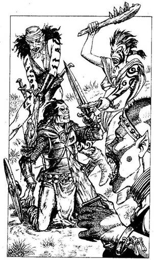
7.
Amikor eléritek a dombtetőt, meglepetten szemlélitek az elétek táruló látványt. Három Vad Elf asszony csépel egy térden álló sérült kalandort, aki elkeseredetten védekezik a kardjával. Az Elf asszonyoknak tűhegyes fogaik, hosszú, éles körmeik vannak, testüket harci jelek borítják. Pattintott köböl készített bunkókkal és késekkel kegyetlenül ütik-vágják a férfit. Ha szándékodban áll segíteni a kalandornak - lapozz a 44-re. Ha inkább sorsára hagyod - lapozz a 162-re.
8.
Elgurulsz az élettelen Orktól, és kivont karddal talpra szökkensz, hogy a két megmaradt Orkkal szembeszáll], akik máris lecsapnak rád.
Ügyesség Életerő
Első Ork 6 6
Második Ork 6 5
Egyszerre harcolj mindkettővel! Minden egyes Fordulóban külön fognak rád támadni, de választanod kell, kettejük közül melyikükkel küzdesz meg a szokott módon. A másik ellen dobj a Támadóerődért. Ha a te Támadóerőd a nagyobb, nem fogod megsebesíteni. Vedd úgy, mintha kivédted volna az ütését. Természetesen ha az Ö Támadóereje a nagyobb, ö sebesít meg, így egy Fordulóban csak egy Orkot vagy képes megsebesíteni, de kétszer sebesülhetsz meg. Ha nyersz - lapozz a 243-ra.
9.
Halkan földet érsz. Nem látsz semmit, hát tapogatózni kezdesz kardoddal magad előtt a földön. Rájössz, hogy az üreg nagyon kicsi és üres, eltekintve egy fémtárgytól, melyet a földön találsz. Azt azonban már tapintással sem tudod megállapítani, mi lehet az. Ha úgy gondolod, hogy magaddal viszed a fémtárgyat, amikor kimászol az üregből - lapozz a 130-ra. Ha inkább itt hagyod és nélküle mászol ki - lapozz a 169-re.
10.
Miután felhúzod ujjadra a gyűrűt, megdörzsölöd, a magasba emeled, és megpróbálsz parancsolni neki; nem fedezel fel benne semmilyen varázserőt. Vállat vonsz, és azon morfondírozol, mitévő legyél. Ha még nem tetted volna, kipróbálhatod a Tőrgyűrűt - lapozz a 94-re, vagy felpróbálhatod a Koponyagyűrűt - lapozz a 265-re. Ha viszont inkább ellovagolnál kelet felé, a Csontok Völgyéből kivezető úton - lapozz a 369-re.

11.
Ahogy a föld felé zuhantok, egy aranylóan izzó testű ember ölt alakot mellettetek. A Suma csak mosolyog és így szól: - Most megmentelek benneteket, de többször nem segíthetek. - Aztán eltűnik, és legnagyobb meglepetésedre a Vörös Sárkány tér vissza, alátok repül, és megengedi, hogy a
hátára pattanjatok. Mindhárman felkapaszkodtok a nyakába, aztán északnyugat felé repültök, ti vagytok... Allansia Sárkánylovasai. Kis idő múlva, miután feltűnnek előttetek a Holdkő dombok, a Vörös Sárkány lefelé siklik, hogy leszállhasson. Miután lekászálódtok róla, a Sárkány felröppen, bántatlanul hagyva ott benneteket. Eszedbe jut, hogy már csak egy óra van hátra napnyugtáig, így hát körülnéztek, hol pihenhetnétek ki magatokat, mielőtt szembenéznétek a végső ellenféllel. Ha a közeli fák között akartok nyugovóra térni - lapozz a 257-re. Ha netán a hegyek széléhez akartok menni, és ott akartok aludni - lapozz a 28-ra.
12.
A kő, melyet Symm kiválaszt, gyógyító erejű, és egy Jégszellem érintését orvosolja. Tested felmelegszik, és visszanyered eszméletedet, ám a sok megpróbáltatás mégis megviselt. Vesztesz 2 ÉLETERŐ pontot. Symm közli veled, miképp tűnt el a Jégszellem az alagútban, s hogy sem öt, sem Borrit nem tudta megérinteni. Minden csendes, és újra útnak indultok. Lapozz a 245-re.
13.
Az erős méreg gyorsan hatni kezd, és hamarosan már arra is képtelen vagy, hogy egyetlen végtagodat is megmozdítsd. Kizuhansz a nyeregből, egyenesen bele az ingoványba, füledben felerősödik a lebegő Szigonylegyek hangja, ahogy rád telepszenek, és elkezdik beköpni a testedet. Rémülten hasít beléd a gondolat, hogy jó néhány nap áll még előtted, míg utolér a visszataszító halál.
14.
A Szellemidéző arcodra szorítja a kezét, és életed pillanatok alatt kihuny az ujjai között. Most már te is az őt szolgáló Zombik közé tartozol, és mindent elvesztettél.

15.
Csaknem két órát tart, míg keresztülvágjátok magatokat a sűrű aljnövényzeten, aztán megpihentek egy kicsiny tisztáson. Leheveredsz, fejedet egy farönkhöz támasztod, és a sötétszürke eget bámulod, bizarr dolgokon rágódva. - Hé! - kiált fel Borri hirtelen. - Az a fa megmozdult! És a másik is... nézd csak, oda nézz! - Felpillantasz és magad is láthatod, hogy a tisztás szélén álló fák gyűrűje kezd bezárulni körülöttetek. Kardot rántasz, és egyre hátrálva derekasan próbálod távol tartani magadtól az egyre támadó fákat. A Faemberek azonban jóval erősebbek nálatok, és halálra zúznak benneteket.

16.
Megsarkantyúzod a lovadat, és a Goblinok elől menekülve levágtatsz a domboldalon. Visszanézel, és figyeled, ahogy kitartó hajszában felkaptatnak a dombtetőre. Gyorsabb vágtára ösztökéled a lovadat, s közben azon torod a fejed, melyik utat válaszd, ha egyszer eléred a domb alját. Ha fel akarsz nyargalni a következő dombra - lapozz a 171-re. Ha inkább bal felé vennéd az irányt, le a völgybe, egy aprócska erdő felé - lapozz a 100-ra.
17.
Elmúlik a reggel, és még mindig nem leltetek rá az alagútra. Vesztesz 1 Szerencse pontot. - Amondó vagyok, forduljunk meg, és haladjunk észak felé. Ha egyfolytában dél felé megyünk, elérjük a Bronzsíkságot, ahova akár nyugodtan le is csoroghattunk volna - szólal meg Borri, tőle szokatlan komolysággal. Symm egyetért Borrival, tehát úgy döntesz, elhatározásuknak megfelelően folytatjátok az utat. Követitek saját nyomaitokat vissza, észak felé, és késő délután eljuttok oda, ahonnan elindultatok. Borri, mivel megint mókás kedvében van, tréfálkozni kezd a felesleges vándorlás miatt, de sem Symm, sem te nem tudtok nevetni a dolgon. Anélkül, hogy megállnátok pihenni, észak felé nyomultok. Lapozz a 30-ra.


18.
Újra megpillantod az alakot, ahogy egyik fa mögül a másik mögé rohan. Kicsiny, emberszerű lény az illető, nem magasabb egy méternél. Körülnéz, megáll, aztán feléd indul. Rögtön feltűnik, hogy hegyes füle, macskaszerű szeme van, és fekete a bőre. Ezenkívül szárnyai is nőttek. Amint azon elmélkedsz, miért nem repült el előled, egy nehezékkel ellátott háló hullik rád, és a fiúcskára emlékeztető figura kacagni kezd, amiért belesétáltál a csapdájába.
Amikor elzúgsz a földön, azonnal megvilágosodik előtted, hogy Fekete Tündérek zsákmánya lettél, akik az aprónép leggonoszabbja közé tartoznak. A hálón keresztülpillantva két újabb Fekete Tündért látsz a levegőben lebegni. Földet érnek, és alig egy perc leforgása alatt gúzsba kötnek. Kiürítik hátizsákodat, és mindenedtől megfosztanak, beleértve Yaztromo Gyógyitalát is. Ráadásul a kardodat is elveszik, aztán azzal szórakoznak, hogy rovarokat tesznek a ruhádba és csigákat a szádba. Végezetül csak-csak megunják kisded játékukat, és felröppennek a zsákmánnyal, téged meg otthagynak a fenevadak prédájául. Tedd próbára a Szerencsédet! Ha szerencséd van - lapozz a 42-re. Ha nincs szerencséd - lapozz a 224-re.
19.
Egy kisméretű fadobozkát találsz, mely a Troll ruhájára van erősítve. Ha úgy döntesz, hogy kinyitod - lapozz a 188-ra. A taligát is felboríthatod - lapozz a 366-ra, vagy ott is hagyhatod a dobozt a talicskával együtt - lapozz a 40-re.
20.
Sikerül becsuknod a fedelet, mielőtt a Rad-Hulk meg tudna állítani, és a barlang teljes sötétségbe borul. Viszont legnagyobb rémületedre, még mindig hallod az ütődött Rad-Hulkok csoszogó lábainak hangját, amint feléd tartanak. Miután feltöltődtek a fénytől, még legalább egy órán át életképesek maradnak. Úgy kell megküzdened velük, hogy súlyos hátrányban vagy a sötétség miatt.
Ügyesség Életerő
Első Rad-Hulk 10 5
Második Rad-Hulk 10 6
Egyszerre csak eggyel küzdj meg, de vonj le 2 pontot a Támadóerődből minden egyes Fordulóban. Ha nyersz, visszamehetsz a sötétben a lovadhoz - lapozz a 235-re, vagy ismét kinyithatod a dobozt - lapozz a 82-re.
21.
Nemsokára újra az erdőszélen lovagoltok. Ha be akarsz térni az erdőbe - lapozz a 215-re. Ha inkább továbbügettek Kőhidafalva irányába - lapozz a 363-ra.
22.
Symm és Borri megint győzedelmeskedett, és elismerésed vívótudományuk iránt egyre nő. A testek után kutatva előkerül egy zsák dió, egy parittya és néhány csúzliba való kődarab. Borri elkéri a parittyát és a köveket, míg Symm megszagolja a diókat. - Jó illatuk van - szólal meg. Ha akarsz enni a dióból - lapozz a 342-re. Ha inkább sietve itt hagynád az alagutat - lapozz a 279-re.
23.
A kunyhó ajtaját tönkrezúzták, és törött nyílvesszőket látsz a faburkolatba fúródva. Megvizsgálod a nyílvesszőket, és arra a következtetésre jutsz, hogy ezeket Goblinok szokták használni. Egy fosztogató banda nyilván megtámadta a prémvadászt. Óvatosan belépsz a kunyhóba, és átkutatod mind a három szobáját. Találsz egy vadászkést, melyet a halott vadász még mindig a kezében szorongat, ezen kívül azonban a Goblinok mindent elrabolhattak. Bedugod a kést az öved mögé, és elhantolod a prémvadászt, mielőtt ismét lóra ülnél. Lapozz az 53-ra.

24.
Anélkül hogy gondoltál volna rá, a Kaméleonita vére új védekezési mechanizmust vált ki a testedben. A bőröd sötétzölddé válik, mint az iszap a kút fenekén, mire a Gargantis hirtelenjében mindnyájatokat szem elöl téveszt, és mellécsap a karmaival, annak ellenére, hogy érzi a jelenléteteket. Viszont Symm és Borri elvonják a figyelmét azzal, hogy beleeresztenek két nyílvesszőt gigantikus testébe. A Gargantis fájdalmasan felüvölt, pedig a nyílvesszők épp csak felsértették vastag bőrét. Mindazonáltal a Gargantisnak is megvan a maga védekező mechanizmusa, és amint megérezte a
fájdalmat, egyik mirigye hatalmas erejű mentális energiát lövell feléd. Ha van egy aranyláncon függő, áttetsző kristály a nyakadban - lapozz a 193-ra. Ha nem hordod a kristályt - lapozz a 307-re.
25.
A kardod hegyével felemeled a láda fedelét, és hátrahőkölsz. Két jól megtermett patkány ugrik ki a ládából, és rád ront. Egy kardcsapással az egyiket két darabra hasítod, de a másik gyorsan a lábad felé kap a karmaival. Ha van rajtad páncélruha - lapozz a 192-re. Ha a lábadat nem védi semmi - lapozz a 312-re.
26.
Amint leülsz a székbe, vaspántok csapódnak ki a karfából, és úgy leszorítanak, hogy képtelen vagy megmozdulni. Sziszegő hang hallatszik a fejed fölötti szájból. - Mi a számod? - kérdi. Ha viselsz egy azonosítót - lapozz oda, ami rá van nyomva. Ha nem viselsz ilyesmit - lapozz a 136-ra.
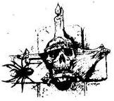
27.
A Démon erős karjával a rekeszizmodra nehezedve kipréseli belőled az életet. Ezután elcsoszog, és elégedett, hogy újabb táplálékforrást talált, amivel hőn szeretett erdejének földjét táplálhatja.

28.
Nem egészen húsz perc alatt eléritek a hegyeket, és hamarosan ráleltek egy apró barlangra, amelyben megpihentek. Elalszotok, és nem sokkal napkelte után ébredtek fel (nyersz 2 Életerő pontot). Az ég olyan borongós és szürke, mint általában, és ahogy kilépsz a barlang bejáratán, észreveszed, hogy körben minden növény elhalt, a fák elszenesedtek. - Nem lehet már messze a hasadék - mondja Borri melléd lépve. - Eredj csak az orrod után! - Idáig érzem a bűzös gőzöket - teszi hozzá Symm, kibotorkálva a barlangból. - Gyertek, kövessetek! - Elindul fölfelé a hegyoldalon, amikor Borri felkiált, hogy egy palástba öltözött alakot lát a barlang felé haladni. Ha úgy döntesz, hogy megvárod, akárki legyen is az illető - lapozz a 167-re. Ha inkább követed Symmet - lapozz a 313-ra.
29.
Miközben a tó körüli dombokról lefelé lovagolsz, meglátsz egy rozsdás vasdobozt, mely egy fa tövében lakozik. Ha ki akarod nyitni a dobozt - lapozz a 205-re. Ha inkább továbbhaladsz a tó felé - lapozz a 339-re.

30.
Nem sokkal később egy buckát vesztek észre a távolban, és arra az elhatározásra jutsz, hogy közelebbről is szemügyre veszed, mivel mérföldek óta ez az egyetlen kiemelkedő jelenség ezen a sík vidéken. Mikor közelebb juttok, egy alagút bejárata tűnik fel, és alig hiszel a szemednek. - Kinek az ötlete volt, hogy délnek menjünk? - kérdezi Borri kötekedő hangon. Lemálházzátok a léggömböt, és elrejtitek a kosárral együtt az alagút bejáratánál. Szabadon engeded az ökröt, bár az eléggé vonakodik, mivel sokkal jobban szeretne a dús fűben legelészni. Amikor beléptek az alagútba, a folyton fecsegő Törpe megszólal. - Nem hallok semmit. Úgy gondoltam, ezek azok az üvöltő alagutak. - Várjunk, amíg be nem jutunk, te hólyag - nevet rá Symm. - Talán abban a pillanatban, amint meglátsz egy Gargantist, te magad fogsz üvölteni! - Előhúzod a kardodat, meggyújtod a fáklyát, amelyet magaddal hoztál, és óvatos léptekkel behatol-
tok az alagútba. Öt perc elteltével egy elágazáshoz értek. Ha balra akarsz továbbmenni - lapozz a 222-re. Ha jobbra indulsz tovább - lapozz a 90-re.

31.
Bebámulsz a Pokolfenevad üregének sötétjébe, de nem látsz semmit. Lefekszel a földre, és kardoddal lefelé döfködve kitapintod az üreg alját. Ha beugrasz az üregbe - lapozz a 9-re. Ha inkább a szemben lévő szűk alagutat választod - lapozz a 297-re.
32.
A sajt száraz és kemény, mégis tápláló. Nyersz 2 Életerő pontot. Miután befejezted az evést, eldöntőd, melyik úton haladj tovább. Ha továbblovagolsz az erdő irányába - lapozz a 203-ra. Ha inkább kelet felé mennél, fel a hegyre - lapozz a 280-hoz.

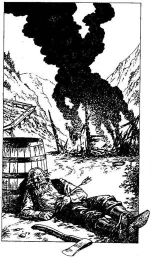
33.
Amint áthaladsz a domb gerincén, az általad feltett kérdésre hamar választ kapsz. A füstfelhő egy porig égett kunyhó parazsából száll fel. Egy öreg aranybányász fekszik mozdulatlanul egy hordónak dőlve, és hasából nyílvessző áll ki. Egy fejsze fekszik mellette. Ha meg akarsz győződni róla, hogy él-e még - lapozz az 52-re. Ha inkább továbbmész kelét felé - lapozz a 261-re.
34.
A Fekete Erdőt elhagyva a Holdkő dombok nyugati csücske fölé sodródtok, ahol már előzőleg két napig vándoroltál. Eszedbe jutnak a veszélyek, nem is beszélve Kullról és megátkozott kardjáról, azonban a békés repülés a léggömbbel reménnyel tölt el. Körülbelül egy órával később Borri előremutat és így szól. - A láthatáron már ott a Pókok Erdeje. Kissé kockázatos leszállás vár ránk, de ha ez a hely az, ahová igyekszel; megteszek minden tőlem telhetőt.
Ha még mindig le akarsz szállni az erdőben - lapozz a 99-re. Ha inkább megkéred Borrit, hogy menjetek a Nyugati Nagy Síkságra - lapozz a 135-re. Ha a Bronzsíkság felé indultok - lapozz a 210-re.

35.
- Igen, Feketehomok Kikötője valóban a tolvajok városa - folytatja Ungoth. Megkönnyebbülten sóhajtasz fel, és felkészülsz a következő kérdésre. - Mint tudod, Razaak támogatásáról biztosította Allansia összes Trollját. A mi Troll barátainknak van néhány különös szokása, ezek közül a legképtelenebb, hogy Hobbitfülek elfogyasztásában lelik kedvüket, és ráadásul versenyeznek, melyikük tud többet megenni. Mi is a Hobbitfül-evés rekordja? - A gondolattól is kifordul a gyomrod, és csak nehezen tudsz válaszolni. Mellesleg, ha tudod a választ - lapozz arra a fejezetpontra, amely a jelenlegi allansiai rekorddal azonos. Ha nem tudod a választ - lapozz a 303-ra.
36.
Mivel képtelen vagy újra elaludni, a nyugtalan éjszakát az előtted álló feladaton gondolkozva töltöd. Mihelyt elegendő a fény, hogy tovább láss az orrodnál, felpattansz a lovadra, és megint csak kelet felé indulsz. Fölügetsz a legmagasabb dombra, hogy jobb legyen a kilátás, és alig hiszel a szemednek. Egy tó fekszik délkelet felé a völgyben, úgy kétórányi lovaglásra. Új reményekkel telve lovadat arrafelé irányítod. Lapozz a 178-ra.
37.
Miután átkeltél a Macskahal folyón, hamarosan magad mögött hagyod a Fekete Erdőt. A Pogánysíkság előtted terül el, és azon tűnődsz, vajon a sírkert Iszaposdhoz vagy Kőhidafalvához van-e közelebb. Ha Iszaposd felé akarsz lovagolni - lapozz a 95-re. Ha Kőhidafalva felé akarsz menni - lapozz a 142-re.
38.
A pálca egyszerre csak egy lényre képes hatni. Ha abban reménykedsz, hogy használhatod a pálcát a Gargantis ellen, mentálisan szabadon kell engedned azt a teremtményt, melyet korábban megbénítottál. Melyik volt az a lény?
Egy nyúl? Lapozz a 311-re.
Egy héja? Lapozz a 122-re.
Egy vadkan? Lapozz a 368-ra.

39.
Erősen megmarkolod a kantárszárat, így sikerül nyeregben maradnod. Egyszer csak, mintegy varázsütésre, három gonosz kinézetű teremtmény ölt alakot, hogy rajtaütésszerűén megtámadjon. Lapozz a 239-re.

40.
Az alagút hamarosan egy elágazásban ér véget. Jobbra tekintve azt látod, hogy az alagút egyenesen folytatódik tovább, ameddig csak a szem ellát. Balra pillantva azt veszed észre, hogy hamarosan zsákutcába torkollik. Valami vagy valaki fekszik a barlang végében, és meghallod a patkányok ismerős vinnyogását. Ha balra akarsz menni - lapozz a 202-re. Ha jobbra - lapozz a 315-re.

41.
Kinyitod a fiolát, a Zombihoz lépsz, és rálöttyinted a vizet. Úgy mar bele az élőholt testébe, mintha sav lenne; nyomában füst száll fel a húsából. Dobj egy kockával! Ha az eredmény 1-5 - lapozz a 373-hoz. Ha 6-ost dobsz - lapozz a 74-re.
42.
Csaknem egy órán át bajlódsz béklyóiddal, de hála istennek egy teremtmény sem fogott szagot. Addig erőlködsz, míg végre kiszabadítod az egyik kezedet, és azután a lábadat is. Csuklódat felsértették a kötelek, és vérzik. Vesztesz 1 Életerő és 2 Ügyesség pontot, mert elhagytad a kardodat. Szerencsére a lovad nem kóborolt túl messzire, így
hamarosan újra nyeregbe ülsz, és kelet felé lovagolva elhagyod az irtást. Lapozz a 150-re.
43.
Egy puffanással földet értek, és nekiálltok összehajtogatni a léggömböt, mielőtt a forgószél belekapna. Majdnem lehetetlen megállni a viharos szélben, de úgy küzdesz, ahogy csak erődtől telik. Sziklákat görgettek a kisimított vászonra, aztán meghúzódtok a kövek menedékében. Tedd próbára a Szerencsédet! Ha szerencséd van - lapozz a 132-re. Ha nincs szerencséd - lapozz a 201-re.

44.
Harcba bocsátkoztok a Vad Elfekkel. Mindegyikőtök eggyel-eggyel.
Vad Elf Ügyesség 7 Életerő 6
Ha nyersz - lapozz a 212-re.

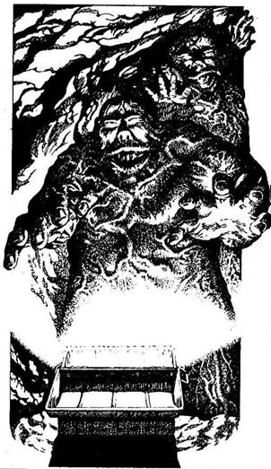
45.
A fémdoboz egyik oldalához állsz, attól tartva, hogy csapdával van dolgod, és fölemeled a tetejét a kardoddal. A barlangot azonnal vakító fehér fény önti el, amely a dobozból árad, de oly erővel, hogy belefájdul a szemed. Hunyorogva nézel, és észreveszed, hogy nem vagy egyedül. A fénytől feléledve, két Rad-Hulk cammog feléd a barlang hátsó részéből. Szőrtelen, sárgás testüket lüktető vörös erek hálózzák be. Vakságuk ellenére megérzik a testmeleget, és feléd haladnak, hogy megérintsenek. Mit teszel?
Megkísérled becsukni a doboz
fedelét? Lapozz a 372-re.
Megfordulsz és elrohansz? Lapozz a 395-re.
Megküzdesz a Rad-Hulkokkal? Lapozz a 143-ra.
46.
A sajt száraz és kemény, de mégis tápláló. Nyersz 2 Életerő pontot! Miután befejezted az evést, azon tűnődsz, merre menj tovább. Ha kelet felé folytatod az utad - lapozz a 280-ra. Ha inkább visszalovagolsz, le a hegyről, és észak felé indulsz a völgyben tátható apró erdő irányába - lapozz a 203-ra.
47.
Nincs senki egész Allansiában, aki másodszorra is túlélné a Jégszellem fagyos érintését, és te sem vagy kivétel. Lapozz a 357-re.
48.
Jella megtartja a szavát, és néhány sebed a szemed láttára azonnal gyógyulni kezd. Dobj egy kockával, és adj kettőt a dobott értékhez! A kapott számot add hozzá az Életerődhöz. Miután röviden beszámolsz kutatásodról, Jella figyelmeztet, hogy egy csomó Sziklaszörny lakozik a hegyek között, és óvatosnak kell lenned. Megköszönöd a segítségét, és búcsút intesz neki, majd elnyargalsz nyugat felé. Lapozz a 382-re.
49.
Alszol valamicskét (Életerőd növekszik 1 ponttal), mígnem Symm kiáltozására ébredsz. - Nézzétek! Egy folt van ott az égen, és egyenesen felénk tan. - Felállsz, abba az irányba tekintesz, amerre Symm karja mutat, s hirtelen a szívverésed is eláll. Lapozz a 152-re.
50.
Miután összecsavarod a pálca két különálló részét, úgy véled, ki kellene próbálni, van-e valamilyen varázsereje. A földre csapsz vele, de semmi sem történik. Végül egy arra futó nyúlra mutatsz, mire nagy meglepetésedre a nyúl lába abban a pillanatban a földbe gyökerezik. Odalépsz a nyúlhoz, és rájössz, hogy teljesen megbénult. Rendelkezésedre áll hát egy Bénító pálca. Nyersz 1 Szerencse pontot. Immár sokkal vidámabban kilovagolsz az erdőből, északkelet felé, Kőhidafalva irányába. Lapozz a 234-re.

51.
A sötétben tapogatózva rájössz, hogy a szoba nagyon kicsi és teljesen üres. Megfordulsz, és éppen vissza akarsz menni a terembe, amikor hirtelen becsapódik az ajtó. Hallod, amint a reteszek a helyükre csúsznak, és valaki nevetni kezd. Öklöddel vered az ajtót, de hasztalan. Fogságba estél a teljes sötétségben. Letelepedsz a hideg padlóra, s abban reménykedsz, hogy Borri és Symm talán megment. Utánad is jönnek, de az alagútnak, még mielőtt odaérnének hozzád, vége szakad. Az órák multával egyedül csak az éhhalál gondolata foglalkoztat, meg az, hogy Allansiára a végzet vár.
52.
Füledet az Öregember mellkasához szorítod. Van még benne élet, de már csak pislákol. Megpróbálsz vizet adni neki a hordóból, de köhögni, nyöszörögni kezd, és gyomorsebe miatt képtelen inni. Lassan kinyitja a szemét, és nehézkes suttogással beszélni kezd. - Orkok... négyen voltak... elvitték az aranyamat és az elemózsiámat... kelet felé... ügyelj, nehogy rajtad üssenek... nézz bele a hordóba... legyen tiéd a...

De nem tudja befejezni a mondatot, és elhaló sóhajába belevesznek utolsó szavai. Miután eltemeted az idős embert, úgy döntesz, felborítod a vizeshordót, de mindenekelőtt csillapítod a szomjad. Nyersz 2 Életerő pontot. Amikor átkutatod az üres hordót, észreveszed, hogy dupla fenekű. Kifeszíted a kardod segítségével, és találsz egy 10 Aranyat érő aranyrögöt, egy kést, egy tiszta folyadékkal teli fiolát, melynek címkéjén ez áll: Szentelt Víz, valamint egy aranyláncon függő áttetsző kristályt. Mihelyt berakod a zsebedbe a rögöt és a fiolát, a kést meg az övedre csatolod, azonnal megvizsgálod a furcsa kristályt. Ha a láncot a nyakadba akasztod - lapozz a 352-re. Ha inkább otthagyod, és délkelet felé lovagolsz, elkerülve az Orkokat - lapozz a 137-re.

53.
Két órával később már jócskán a dombok között jársz. Felbámulsz a baljóslatú, sötét égboltra, szárnyas gyilkosok után kutatva, melyek lecsaphatnak rád. Nem látsz egyetlen repülő teremtményt sem, de a csend nyugtalanít, és megborzongsz. Hirtelen felnyerít a lovad, és hátsó lábaira ágaskodik. Dobj két kockával! Ha az összeg ugyanannyi vagy kisebb, mint az Ügyességed - lapozz a 39-re. Ha az összeg nagyobb, mint Ügyességed - lapozz a 298-ra.
54.
Szerencsére nem futottatok össze semmilyen lénnyel sem, és sikerül kikeverednetek az alagutakból. Lapozz a 279-re.

55.
Symm a másvilágra küldi ellenfelét, pillanatokkal azután, hogy te is legyőzted a sajátodat. Belépsz a kunyhóba, de nem lelsz Yaztromo nyomára. Symm a kunyhó előtt körülnézve azt mondja. - Itt dulakodás nyomai látszanak, és úgy tűnik, mintha az öreg mágust bevonszolták/volna az erdőbe. Könnyű lesz követni a nyomaikat. - Azon töröd a fejed, miért nem használta Yaztromo a varázserejét az elrablója ellen, de nem osztod meg Symm-mel a félelmeidet. Akárki vagy akármi kényszerítette is Yaztromót az erdőbe, nagyon nagy erővel kellett rendelkeznie. Késlekedés nélkül lóra szálltok, és Symm vezetésével észak felé nyargaltok. Lapozz a 377-re.

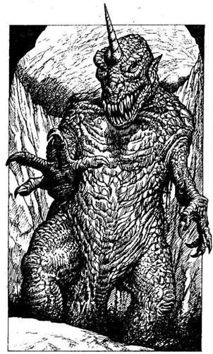
56.
Nem tűnik föl több Jégszellem, amikor áthaladtok a szobrok között, és követitek a jobbra kanyarodó alagutat. Rövid idő múlva újabb hangokat hallotok magatok előtt, ezúttal azonban úgy hangzik, mint valami megtermett vadállat hörgése. Továbblépkedtek, mígnem egy sziklapárkányhoz nem értek, mely egy mély gödör aljának közelébe nyúlik előre. Rothadó nyalka dögletes bűze csapja meg az orrodat; a szag a gödör alját borító vastag üledékből árad, épp a perem alatt. Két zöld pikkelyes láb emelkedik ki a szennyből, aztán a szemed előtt bontakozik ki a hatalmas test, mely hosszú, tűhegyes fogakkal felfegyverzett, tátogó pofájú,. vicsorgó fejben végződik. A homloka közepén egy fehér, csigavonalú szarvat látsz. Bár a Gargantis rosszul lát, érzi a jelenléteteket, és lenyúl a párkány felé óriási karmos kezével. Visszaugrasz az alagút biztonságába, ahol már nem érhet el a fenevad. Közlöd Borrival és Symm-mel, hogy amíg bemászol az üledéklepte gödörbe, lőjenek nyilakat a Gargantis testébe, hogy eltereljék a figyelmét. Miután megállapodtatok, előrántod a kardodat, és ismét a párkányra lépsz. A Gargantis rettenetesen elbődül, és feléd sújt karmos kezével. Ha bekented magad Kaméleonita-vérrel - lapozz a 24-re. Ha nem - lapozz a 349-re.

57.
A kő csak milliméterekkel süvít el a fejed mellett. Nem állsz meg, hogy visszanézz, hanem kirohansz a barlangból a lovadhoz. Lapozz a 235-re.
58.
Túl gyenge vagy a futáshoz. Olyan gyorsan botorkálsz végig az alagúton, amilyen gyorsan csak tudsz, de nem éred el a lépcsőt. Megmentetted Allansiát az örök végzettől, de ez az életedbe került.
59.
Túljuttok egy apró dombocskán, és észreveszel egy nyílást, mely egy alagút bejáratának tűnik. Izgatottan kiáltasz Borrinak, hogy ereszkedjetek le, s ö azon nyomban kiengedi a levegőt a léggömbből. Szépen szálltok lefelé, miközben Borri figyelmeztet, hogy kapaszkodj meg erősen a földet érésig. A kosár puffanva csapódik a földnek, fölborul, de senki nem sérül meg. Jókedvűek vagytok és nevettek, miközben megpróbáltok kigabalyodni egymásból. Felgöngyölitek az üres léggömböt, és a kosárral együtt elrejtitek az alagút bejáratánál. - Reméljük, az a Gargantis nem csupán legenda - szólal meg Symm -, bár a későbbiekben még megbánhatom ezt a kijelentést! - Kivont karddal és meggyújtott fáklyákkal, melyeket magatokkal hoztatok, elindultok befelé a lejtős alagúton. Öt perc elteltével egy elágazáshoz érkeztek. Ha jobbra akartok menni - lapozz a 222-re. Ha balra akartok továbbhaladni - lapozz a 90-re.
60.
Sikerül úgy manőverezni a lovaddal, hogy egyszerre csak egy Goblinnal kelljen küzdened.
Ügyesség Életerő
Első Goblin 5 5
Második Goblin 5 6
Harmadik Goblin 6 5
Negyedik Goblin 6 6
Ha nyersz - lapozz a 116-ra.
61.
A hasadék másik végében egy kiugró emelőkart találsz. Ha lefelé húzod a kart - lapozz a 321-re. Ha Symm tanácsát követve benyomakodtok a falban lévő nyíláson - lapozz a 347-re.
62.
Még időben észreveszed az Orkot, és elkerülöd kinyújtott karját. Úgy zuhan a földre, mint egy zsák. Közben hevesen átkozódik Ork nyelven, és odakiált a másik kettőnek, hogy vegyenek körül. Be vagy kerítve, de előnyöd van velük szemben, mert lóháton ülsz.
Ügyesség Életerő
Első Ork 6 5
Második Ork 6 6
Harmadik Ork 6 5
Küzdj meg velük egyenként. Ha nyersz - lapozz a 243-ra.
63.
Tudomásod van róla, hogy Iszaposa lakói a gonosz Törpék közül valók, akik Kőhidafalva Törpe lakóival állandó összetűzésben állnak. Már a falu közelében jártok, és minthogy a sírkertet még mindig nem találjátok, arra gondolsz, érdemes-e az utat nyugat felé tovább folytatni. Megálljt parancsolsz lovadnak, hogy Symm-mel is megoszd a kételyeidet. - Biztos, hogy a kísértetlakta temetőnek Iszaposd közelében kell lennie - jegyzi meg Symm. - Folytassuk az utat. Ha továbblovagolnál nyugat felé - lapozz a 286-ra. Ha inkább megfordultok, és Kőhidafalva irányába indultok - lapozz a 21-re.
64.
Egy maréknyi vizet mersz ki, és az üledékre löttyinted. A felszökő gőz pillanatok alatt megsűrűsödik, és mérgező gázzal telik meg a hasadék alja. Eszeveszetten köhögni kezdesz, és a szemed könnybe lábad. Hirtelen ráeszmélsz, hogy képtelen vagy lélegezni, aztán kis idő múlva némán rogysz a földre.
65.
A Goblinok vászonzsákjában kutatva 2 Aranytallérra, némi megszikkadt sajtra és egy ezüstkeretbe foglalt törött tükörre lelsz. Elrakod az Aranyat és a tükröt, aztán szemügyre veszed a sajtot. Ha meg akarod enni - lapozz a 32-re. Ha inkább elhajítanád, akkor vagy továbblovagolhatsz az erdő felé - lapozz a 203-ra, vagy fellovagolhatsz a kelet felé húzódó dombra - lapozz a 280-ra.
66.
A Hamakei varázslat hatni kezd, és egy láthatatlan burok alakul ki körülötted. Szúrós fullánkú rovarok százai csapódnak neki a buroknak, mígnem egy sötét kupola vesz körül. Razaak a váratlan védekezésformától megrökönyödve elűzi a rovarokat, hogy sokkal hatásosabb varázslatot alkalmazzon ellened. Ha nálad van a Védelmező - lapozz a 271-re. Ha nincs nálad ez a tárgy - lapozz a 209-re.

67.
A völgy végében arra kényszerülsz, hogy ismét fellovagolj a domboldalon, de a nap hátralévő része bonyodalom nélkül telik el. Mihelyt az éj leszáll, elgondolkodsz, hol verj tábort. A távolban tűzre emlékeztető izzást pillantasz meg, de már túl sötét van, hogy megállapítsd, ki ül mellette. Ha oda akarsz lovagolni a tűzhöz - lapozz a 183-ra. Ha inkább itt töltenéd az éjszakát néhány közeli szikla közt - lapozz a 399-re.

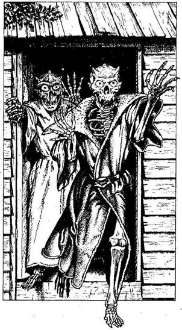
68.
Miután újabb két kilométert ügettetek az erdőszélen, megpillantod a fák közé ékelt kis fakunyhót. Kikötitek lovaitokat a legközelebbi fához, és vigyázva a nyitott ajtóhoz léptek. De ahelyett hogy öreg barátod, Yaztromo köszöntene, két, palástba öltözött csontváz tűnik fel. Szikrázó vörös szemük hátborzongatóan izzik, és hamar rájössz, hogy valamiféle idegen erő befolyása alatt álínak. Kétségtelenül Démoni Szolgákkal van dolgod, melyeket Razaak fogadott fel. A két ostoba Szolga fürgén előrelép, készen arra, hogy puszta kézzel vegye fel a harcot kardod élével. Odébblépsz Symmtől, és az egyik Szolga felé suhintasz kardoddal.
Démoni Szolga Ügyesség 8 Életerő 7
Küzdj meg a Szolgával a szokásos módon, és ha két egymás után következő Fordulót megnyersz, a testét mozgató varázslat megtörik, összeroskad, és nem marad utána más, mint egy halom csont. Ha nyersz - lapozz az 55-re.
69.
Az éles kő ártalmatlanul suhan el a fejed mellett. Mielőtt a Patkányembernek ideje lenne újratöltenie parittyáját, kardoddal közelharcot erőszakolsz ki, mialatt Borri és Symm a másik kettőre veti rá magát.
Patkányember Ügyesség 5 Életerő 6
Ha nyersz - lapozz a 22-re.
70.
Ahogy a csonthalmok felé közeledsz, csontzápor zúdul rád. A kis ember dobál eszeveszetten. Ha rátámadsz - lapozz a 134-re. Ha inkább rákiáltasz, és megmondod neki, hogy semmi veszélyt nem jelentesz számára - lapozz a 343-ra.
71.
A Törpék felé vágtattok, amikor mindketten rátok lőnek számszeríjaikkal. Tedd próbára a Szerencsédet! Ha szerencséd van - lapozz a 126-ra. Ha nincs szerencséd - lapozz a 378-ra.
72.
A gőzhöz hasonló testű Jégszellemek sebesen közelednek, de sikerül elkerülnöd őket. Symmnek és Borrinak szintén sikerül kicselezni a Jégszellemeket. Figyeled őket, ahogy eltűnnek az alagút mélyén, de minden újra elcsendesedik. További Jégszellemek után kutatva folytatjátok az utat, be az alagútba. Lapozz a 245-re.
73.
Nemsokára kijutsz az irtásról, és kelet felé ügetsz. Lapozz a 150-re.
74.
A Zombi végigzuhan a padlón, és nem mozdul. Gyorsan átkutatod a rongyait, de semmi említésre méltót nem találsz, eltekintve öt darab fekete gyertyától. Viszont találsz a nyakában egy rézből készült azonosítót, melybe a 283-as számot ütötték. Magadhoz veszed a rozsdás láncon függő azonosítót, és a saját nyakadba akasztod. Ha még mindig szándékodban áll belépni az alagútágba - lapozz a 217-re. Ha inkább visszafordulnál, és a T elágazáshoz mennél, aztán elindulnál a másik alagútágon - lapozz a 199-re.

75.
Semmi különöset nem érzel a talizmánnal a nyakadban, és nem is fedezel fel benne semmilyen varázserőt. Úgy döntesz, nem fecsérelsz el több időt, és Yaztromo tornya felé indulsz. Lapozz a 304-re.
76.
Az öregember arca pillanatok alatt elfehéredik. Megfordul, és rohan, ahogy csak a lába bírja. Rákiáltasz, hogy álljon meg, de rá sem hederít. - Ne is törődj vele - mondja Borri. - Ugyanúgy lehetett volna Razaak egyik követője is. Menjünk, folytatnunk kell az utat. - Miközben Symmet követed fel a dombtetőre, egyfolytában az jár az eszedben, hogy hiba volt elhallgatni az igazságot. Lapozz a 313-ra.

77.
Mire a lovad eléri a dombtetőt, erősen zihál, és nyilvánvalóvá válik, hogy túlságosan kimerült az út további folytatásához. Körbenézel, és rengeteg követ, sziklát látsz szerteszét. Sietve lepattansz a nyeregből, és a köveket a közeledő Goblinok felé kezded görgetni. Dobj egy kockával, és vonj le kettőt a dobott számból, hogy meghatározd, hány Goblint találtál el. Ha egy vagy több Goblint terítesz le - lapozz a 213-ra. Ha egyet sem sikerül eltalálnod - lapozz a 6-ra.
78.
Borri megunja, hogy megpróbálja kinyitni a faldarabot, és inkább leül a földre. De amint nekiveti a hátát a falnak, egy négyzet alakú darab benyomódik, s egyúttal a szemközti fal egy darabja is kinyílik. Symm meglepetten rázza a fejét, és így szól: - Így bízzon az ember egy lusta Törpében, hogy megoldja a problémáinkat. Mégsem panaszkodhatunk a szerencséjére; mivel az a mi előnyünkre válik. - Maga elé tartva fáklyáját, Symm benéz az új járatba, és közli, hogy semmit sem lát, mert az út elkanyarodik bal felé. Viszont valami baljós hangot hall, olyasfélét, mint amikor egy hatalmas teremtmény csontokat rágcsál. Ha utánajársz a dolognak - lapozz a 269-re. Ha inkább visszamennél az elágazáshoz, és a másik járatot próbálnád meg - lapozz a 222-re.
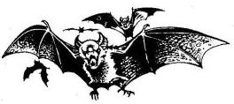
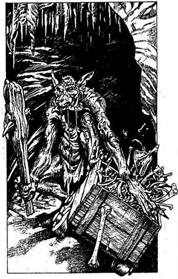
79.
Zörgést hallotok magatok előtt, mintha kerekek gurulnának a köves talajon. Egy alak lassan előtűnik az árnyékból, csontokkal teli talicskát tol maga előtt. Egy csúf, izmos teremtményt látsz közeledni, melynek hosszú karjai éles karmokban végződnek. Nyáladzó pofájából hosszú, agyarszerű fogak meredeznek. Amikor a Barlangi Troll meglát benneteket, felmordul, elengedi a taligát, és fölemelt bunkójával feléd közelít.
Barlangi Troll Ügyesség 8 Életerő 9
A Barlangi Troll rád támad ugyan, de Symm (Ügyesség 10) és Borri (Ügyesség 9) szintén nekiesnek a Trollnak, így tehát háromszoros támadással válaszolhatsz a Troll egyetlen támadására. Ha nyersz - lapozz a 19-re.
80.
Mihelyt megérinted a láda fedelét, belülről surranó lábak neszét hallod, olyasféle kaparászó hangot, amelyet egy rágcsáló okoz. Ha még mindig ki akarod nyitni a fedelet - lapozz a 25-re. Ha még nem tetted volna, eltörheted a gömböt - lapozz a 367-re, vagy kimehetsz a barlangból - lapozz a 386-ra.
81.
Körülbelül egy órával később csuklyás alak lép ki a hasadékból szakadozott, fekete palástban, kezében fekete pálcával. Az alak jobbra-balra tekint, és észreveszed, hogy egy koponya rejtőzik a csuklya alatt, melyben izzó, vörös szemek ülnek. - Egy Démoni Szolga - suttogod. - A kardom hegyére
tűzöm. - Mivel nem érez veszélyt, a Démoni Szolga térdre borul, és elkezdi rituális hajlongását, kántálását. Kihasználod az alkalmat, és rátámadsz a kardoddal. Hidegvérrel védi ki az ütésedet puszta kézzel, és meglep földöntúli ereje.
Démoni Szolga Ügyesség 8 Életerő 7
Küzdj meg a Szolgával a szokásos módon, de ha megnyersz két egymást követő Fordulót, a testét mozgató varázslat megtörik, és nem marad más belőle, csupán egy halom csont. Ha legyőzöd - lapozz a 93-ra.
82.
A barlangot újra elönti a vakító fény, ahogy fölemeled a doboz fedelét. Átkutatod a barlang hátulját, és egy fából készült rekeszt találsz. Ha fel akarod törni a rekeszt - lapozz a 295-re. Ha inkább visszamész a lovadhoz - lapozz a 235-re.
83.
Esés közben épp hogy sikerült megtartanod a kardodat a kezedben, aztán rögtön a harc közepében találod magad.
Majomember Ügyesség 8 Életerő 7
Három Forduló után lapozz a 254-re.
84.
Tudod, mit kell tenned, hogy teljesen megsemmisítsd a Szellemidézőt. Előhúzod a fehér szarvat a palástod alól, és belemártod Razaak mellkasába.
Velőtrázó sikoly veri fel a kripta csendjét, és pillanatokon belül semmi más nem marad ott, ahol Razaak összeesik, csak egy halom por. A köd eloszlik, és meglátod a hatalmas kőszarkofágot, melyben Razaak több mint egy évszázadon át feküdt. Ha bele akarsz nézni a szarkofágba - lapozz a 390-re. Ha inkább itthagynád a kriptát, amilyen gyorsan csak lehet - lapozz a 233-ra.
85.
Egy letakart verembe zuhansz, melyet a prémvadász ásott, aki egykor a kunyhóban lakott. Dobj egy kockával, és vond le a kapott értéket az Életerődből. Fájó végtagokkal, horzsolásokkal kimászol a veremből. Lapozz a 23-ra.
86.
Sajnos nem tudtad, hogy a csontbogár a Balszerencse Amulettje. Vesztesz 3 Szerencse pontot. Előző tulajdonosa csupán három nappal a halála előtt lelt rá. Mivel semmi más érdekeset nem találsz, az alagút másik ágán indulsz tovább. Lapozz a 315-re.
87.
Átkutatod a barlang hátsó részét, és egy fából készült rekeszt találsz. Ha fel akarod törni a rekeszt - lapozz a 295-re. Ha inkább visszasétálnál a lovadhoz - lapozz a 235-re.
88.
Végiglavírozol a verem szélén, éppen csak megtartva egyensúlyodat. Mielőtt a Gargantisnak ideje lenne megint rád támadni, Symm és Borri nyílvesz-
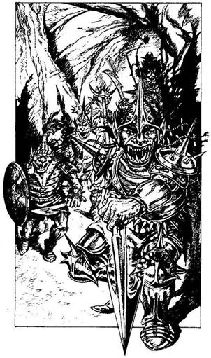
szőket eresztenek hatalmas testébe, hogy eltereljék a figyelmét. A Gargantis elbődül, bár a nyílvesszők alig sértik fel vastag bőrét. A Gargantis azonban ösztönös védekezési mechanizmussal rendelkezik, melyet a fájdalom vált ki belőle. A nyakán lévő egyik mirigye hatalmas erejű mentális energiát lövell ki. Ha van a nyakadban egy aranyláncon függő áttetsző kristály - lapozz a 193-ra. Ha nincs a nyakadban ilyen kristály - lapozz a 307-re.
89.
Ha kikötnéd a lovadat egy fához, és belegázolnál a sűrű aljnövényzetbe, hogy megkeresd a Démon üregét - lapozz a 319-re. Ha inkább kilovagolnál az erdőből, amilyen gyorsan csak lehet - lapozz a 168-ra.
90.
Az alagút ide-oda kanyarog, fáklyáitok hátborzongató árnyékokat vetnek a falakra. Hirtelen felétek menetelő lépések hangját hallod, és felkészültök a harcra. Hat ronda teremtmény tűnik fel, leginkább Orkok és Trollok keverékei, hosszú, vastag szálú hajjal, melybe csontokat fontak, és olyan páncélban, amelyből tüskék és szegecsek állnak ki. A Doragarok megveszekedett harcosok, akik abban lelik kedvüket, hogy fegyvereikkel sebeket ejtenek. Egyenként két-két ellenfelet vállaltok, és megküzdötök velük.
Ügyesség Életerő
Első Doragar 9 9
Második Doragar 9 10
Ha nyersz - lapozz a 144-re.
91.
Gyorsan meggyújtod a gyertyát, abban a biztos tudatban, hogy már alig egy órád van, hogy megmenekülj szörnyű sorsodtól. A gyertya fényében őrülten nekilátsz a nadragulya keresésének, mert ez az egyetlen ismert növény, amellyel gyógyítani lehet ezt a kórt. Tedd próbára a Szerencsédet! Ha szerencséd van - lapozz a 335-re. Ha nincs szerencséd, és képtelen vagy ilyen növényt találni - lapozz a 317-re.
92.
Annak ellenére, hogy semmi sem zavarja meg a nyugalmadat az éjszaka folyamán, egy Elvin repül be csendesen a táborba, és három tárgyat csen el a hátizsákodból. Húzz ki három tárgyat a Felszerelési Tárgyaid közül. Anélkül hogy felfedeznéd, az enyveskezű kis teremtmény elszárnyal a prédával, és csak reggel fedezed fel, mi történt. Kába fejjel indulsz Kőhidafalva irányába. Egy óra elteltével eléritek a hidat, amely egy tiszta vizű patakon ível át, és egyenesen Kőhidafalvára vezet. Felismersz néhány utcán sétáló Törpét, és megkérdezed tőlük, merre találod Borrit. - A falu másik végén lévő istállóban van - jön az egybehangzó válasz.
Leszálltok a lóról, és a fáradt állatokat keresztülvezetitek a falun, odabiccentve néhány felbukkanó Törpének, akiket megismertek. Kopogtatsz az istállóajtón, mire egy pirospozsgás, hosszú szakállú, mosolygós Törpe köszönt benneteket. - Legyetek üdvözölve! - mondja vidáman. - A nevem Borri, és ti bizonyára Yaztromo barátai vagytok. Ellátom a lovaitokat, amíg elköltitek a reggeliteket... mindenkinek jut elegendő. Jöjjetek be, és foglaljatok helyet! - Beléptek az istállóba, és degeszre eszitek
magatokat. Nyersz 2 ÉLETERŐ pontot. - Miután pihentetek egy keveset, gyertek ki hátra az udvarba, majd mutatok valami különleges dolgot. Csak adjatok néhány percet, hogy előkészíthessem. Yaztromo mindent elmondott a kutatásotok céljáról, és végre bevethetem a találmányomat! - mondja Borri lelkesen. Tíz perccel később a kíváncsiság már majd kifúrja az oldalatokat, és kisétáltok. Lapozz a 353-ra.
93.
Lerántod a Démon palástját és magadra öltöd. A csuklyát jól a fejedbe húzod. - Ezt jól kieszelted, de velünk mi lesz? - kérdezi Borri. Azt feleled, véleményed szerint jobb, ha egyedül mész tovább, mert úgy kevésbé feltűnő. Borri és Symm kétségbe vonja az ötlet helyességét, és vitába száll veled, de hamar rájönnek, hogy ők most inkább csak koloncok lennének a nyakadon. Beleegyeznek, hogy három órát várnak, aztán utánad indulnak, ha nem jönnél vissza. Kezet rázol velük, és lemész a lépcsőn a sötét, mély hasadékba. A fojtogató levegőtől zihálni kezdesz, de töretlenül folytatod az utat. Szemed fokozatosan hozzászokik a félhomályhoz, orrod pedig a fertelmes bűzhöz: Amikor leérsz, észreveszed, hogy a gőz egy nagy, sűrű vörös folyadékot tartalmazó kőtálból száll fel, azt az érzést keltve, mintha olvadt fém bugyogna benne. Semmi hőt nem bocsát ki magából, csak a dögletes szagot. A közelben felfedezel egy vízzel teli kis medencét, és arra gondolsz, mi lenne, ha vizet öntenél az üledékre, hogy elállítsd a gőz képződését. Ha ezt akarod tenni - lapozz a 64-re. Ha inkább továbbmész, hátha megtalálod Razaak kriptáját - lapozz a 181-re.
94.
Miután felhúzod a gyűrűt az ujjadra, a Csontok Őrzőjének csuklyás alakja fölemelkedik a földről, és előtted lebeg. A semmiből egy tőr bukkan elő a palást alól kimeredő, láthatatlan kéz markában. A palást gyorsan és halkan mozogva egyenesen feléd dobja a tőrt. A Bosszúálló Szellem szándéka nyilvánvaló, és a tőr eltalál. Dobj egy kockával! Ha 1-et dobsz - lapozz a 227-re. Ha az eredmény 2-4 - lapozz a 246-ra. Ha 5-öt vagy 6-ot dobsz - lapozz a 314-re.

95.
Jó néhány órán át lovagoltok, de nem akadtok a sírkert nyomára. Északi irányban megpillantasz egy erdőt a Vörös Folyó partján, nyugat felé pedig Iszaposd háztetői látszanak. Merre mész tovább?
Észak felé lovagolsz az
erdőbe? Lapozz a 273-ra.
Nyugatnak nyargalsz, Iszaposd
felé? Lapozz a 63-ra.
Északkelet felé haladsz, Kőhidafalva
irányába? Lapozz a 363-ra.
96.
Mivel senki fiában nem bízol ezen a veszélyes vidéken, legyen az akár vak, akár nem, távol tartod magad az öregembertől, úgy kérdezed meg, hová igyekszik. - Meglátogatom egy régi barátomat, a Gyógyítót - válaszol halk hangon. - A Holdkő dombok közt lakik. De mit kerestek ti erre? Ha azt válaszolod, hogy Razaakot akarod elpusztítani - lapozz a 179-re. Ha azt feleled, hogy Razaak szolgái vagytok - lapozz a 76-ra.

97.
A folyó széles, de nem túl mély, és semmi nehézségbe nem ütközik átkelni rajta. Fellovagolsz a dombra, és a barlanghoz közeledve látod, hogy egy kitaposott ösvény vezet ki belőle, amely lefelé visz a domboldalon. Lekászálódsz a nyeregből, egy sziklához kötöd a lovadat, és a nyíláshoz indulsz. A barlang sötét, és nem látsz be messzire. Ha be akarsz menni a barlangba - lapozz a 310-re. Ha inkább lelovagolnál a dombról, és a folyó mentén haladnál tovább a völgyben - lapozz a 284-re.

98.
Az Allansiában található tárgyak némelyike varázserővel bír, mások nem. Csakugyan különös világ lenne az, ahol apró patkánykoponyák segítségével lehetne a gigantikus Gargantis felett győzedelmeskedni. Reménykedve vágod hozzá a fenevadhoz a koponyát, de az egyszerűen lepattan a lábáról, és egy csobbanással a nyálkába hullik. Vesztesz 2 Szerencse pontot. Nincs több idő egy újabb tárgy bevetésére, mert a Gargantis már-már ott van melletted. Csak a kardodban bízhatsz! Lapozz a 147-re.

99.
Borri kiereszti a levegőt a léggömbből, és fokozatosan kezdtek leereszkedni. A fák egyre nőnek, ahogy a léggömb süllyed. Borri rád szól, hogy kapaszkodj erősen leszállás közben. Dobj egy kockával! Ha 1-et dobsz - lapozz a 247-re. Ha az eredmény 2 vagy 3 - lapozz a 293-ra. Ha 4-et, 5-öt vagy 6-ot dobsz - lapozz a 371-re.

100.
Egész napi hosszú lovaglás után a lovad kissé fáradt. Ha megállnál pihenni, és megitatnád a lovadat a pataknál - lapozz a 129-re. Ha nem állsz meg - lapozz a 350-re.

101.
Ha van a birtokodban egy fiola Szentelt Víz - lapozz a 41-re. Ellenkező esetben kardoddal kell megküzdeni a Zombival. Lapozz a 318-ra.
102.
Az ékkő furcsa fénnyel izzik, de nem fedezel fel benne semmilyen varázserőt. Csalódottan vállat vonsz, és a tó felé nyargalsz. Lapozz a 339-re.

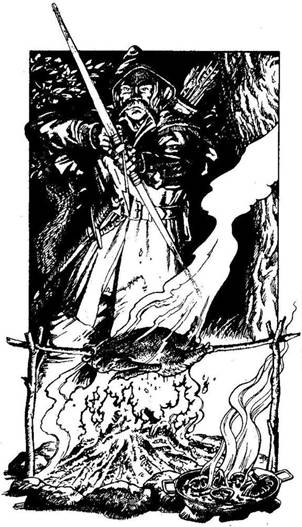
103.
Habár nem szívesen válsz meg a kardodtól, meggyőződésed, hogy a nem látható ember az igazságot mondja. Miután ledobod a földre a kardodat, a férfi kilép egy fa mögül a tábortűz fényébe. Magas embert látsz magad előtt, aki sötétzöld hosszú köpenyt visel. Hátrahúzza a csuklyát, és kezét üdvözlésképpen feléd nyújtja. Helyet foglaltok a tűz mellett, és jóízűt falatoztok az ízletes kacsasültből, valamint a vadgombákból. Nyersz 2 Életerő pontot. Vendéglátód Symmként mutatkozik be, és azt mondja, hogy vadászattal, nyomolvasással foglalkozik. - Nincs semmi, amit ne tudnék nyomon követni, és amit ne tudnék lelőni - közli barátságos hangon, miközben a száját törli a kézfejével. - De hát mi szél hozott téged e kietlen dombok közé? - Úgy döntesz, mesélsz neki Razaakról és az Allansiát fenyegető veszélyről. Amikor befejezed, Symm komolyan rád néz, majd így szól: - És én majdnem kilyuggattam a bőrödet. Ezt valahogy jóvá kell tennem, tehát felajánlom a szolgálataimat. Biztos vagyok benne, hogy hasznát veszed majd a tudásomnak. Nos, mi a véleményed? - Úgy gondolod, Symm hasznos szövetségesed lehet, és elfogadod az ajánlatát. Jót alusztok, majd mindketten nyeregbe szálltok, és nyugat felé lovagoltok. Symm átveszi az irányítást, és a legkönnyebb, legrövidebb utat választja, mely kivezet a völgyből. Délutánra már majdnem eléritek a dombok peremét, amikor Symm két alakot vesz észre, akik a magasban, a nagy sziklák mögött kuporognak. - Vad Domblakó Emberek - kiált feléd. - Azt hiszik, nem láttuk meg őket, és ránk ugorhatnak, amikor ellovagolunk alattuk. Van kedved a vívótudományodat gyakorolni, vagy kikerüljük őket? Ha meg
akarsz küzdeni a Domblakó Emberekkel - lapozz a 196-ra. Ha inkább kikerülnéd őket - lapozz a 327-re.
104.
Óvatosan fölemeled a doboz tetejét, de csupán üres üvegeket találsz, melyekben Varacskos Sört tartottak, a Trollok kedvenc italát. Aztán ott van egy kis serfőzdéi kiadvány is. A címe: A Troll Rekordok Varacskos Könyve. Borri grimaszt vág, és megszólal: - Pfuj, Varacskos Ser. Hogy tud bárki is ilyen csatornalevet meginni? A Trollok olyan undorítóak, hogy mindent megisznak. Ezenkívül olvasni sem tudnak, tehát ennek a könyvnek a megjelenése teljes rejtély előttem. Mégsem sajnálnám az időt, hogy beleolvassak, és lássam, milyen idióták a Trollok. Ha pihenni akarsz egy darabig, és hagyod, hogy Borri beleolvasgasson a könyvbe - lapozz a 266-ra. Ha meg akarod mondani neki, hogy hagyja békén a könyvet, és folytassátok az utat az alagútban - lapozz a 40-re.

105.
A Rad-Hulk megragadja a karodat, és megakadályozza, hogy becsukd a dobozt. Nincs más választásod, mint harcolni az életedért. Lapozz a 143-ra.
106.
Üvöltve halálra zúzod magad, és Allansiában minden remény elveszett.
107.
Csak a lélegzeted akad el az eséstől. Vesztesz 1 Életerő pontot. Szerencsére még mindig a kezedben tartod lovad kantárszárát, viszont nincs időd visszapattanni a ló hátára, mert mintegy varázsütésre három gonosz képű teremtmény ölt alakot melletted, hogy rajtad üssenek. Lapozz a 239-re.

108.
- Igen, ez helyes - mondja Ungoth. - Most már megengedem, hogy belépj a kriptába. Menj át a gránitajtón. Nyilván tudod a kombinációt. - Az ideges várakozástól már alig tudsz járni, de azért odalépsz a gránitajtóhoz. Falból kiálló kilenc fémrudat látsz, melyeket egytől kilencig megszámoztak. Ha tudod, melyik hármat kell meghúzni - lapozz arra a számra. Ha nem tudod - lapozz a 291-re.
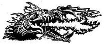
109.
A férfi gyakorlott íjász. A sötétség ellenére is életveszélyesen lő ilyen rövid távolságra. Nyila feléd repül, de elakad egy lelógó ágban, melyet nem lehet látni a sötétben. Elvágtatsz, mielőtt még egy újabb nyílvesszőt lőne rád. Mikor már elég messzire eltávolodtál az íjásztól, letáborozol éjszakára néhány szikla menedékében. Lapozz a 399-re.
110.
Kővé dermedsz a félelemtől, alig tudsz mozdulni. Elborzadva nézed, amint a Pokolfenevad halálra marcangolja két mozdulni sem bíró barátodat. Aztán rád veti magát, és vértől csöpögő agyaraival mélyen a torkodba harap. Razaak állatkája megpecsételte Allansia sorsát.
111.
A sisak épp a fejedre illik, de elég kényelmetlen viselet. Ügy döntesz, leveszed, de lehetetlen eltávolítani. Vesztesz 1 Szerencse pontot. Balszerencsédre az Öregedés Sisakját viseled, és nyomban öregszel harminc esztendőt. Testedet fáradtnak érzed, és erőtlenebbnek, mint valaha: vonj le magadtól 5 Életerő és 2 Ügyesség pontot. Végiggondolod a lehetőségeidet. Ha még nem tetted volna, megvizsgálhatod a pálcát - lapozz a 360-ra, vagy kinyithatod a hátizsákod - lapozz a 175-re. Ha inkább visszatérnél a lovadhoz - lapozz a 221-re.
112.
Symm öt percig keresgél sikertelenül Hirtelen megint meghallod a feltámadó szél bömbölő hangját, és hátranézve észreveszed a három Jégszellemet, amint az alagútba visszarepülnek. Tátott szájjal iszonyatos sikolyokat hallatnak. Nincs hová elbújni, és felkészülsz rá, hogy kicselezed őket, ahogy feléd tartanak. Dobj két kockával háromszor! Ha bármelyik összeg nagyobb, mint az Ügyesség pontod - lapozz a 383-ra. Ha az összegek egyenlők, netán kisebbek, mint Ügyességed - lapozz a 323-ra.
113.
Képtelen vagy újra elaludni, ezért a nyugtalan éjszakát az előtted álló feladaton gondolkozva töltőd. Mihelyt elegendő a fény, hogy továbbláss az orrodnál, felpattansz a lovadra és elindulsz. Fölmászol a legmagasabb dombra, hogy onnan nézz körül. Északkelet felé pillantva alig hiszel a szemednek. Egy tavat látsz délkelet felé a völgyben, körülbelül hétórányi lovaglásra. Lovadat jókedvűen arrafelé irányítod. Lapozz a 178-ra.
114.
Csupán húszméternyire vagytok a földtől, amikor a forgószél belétek kap. Hihetetlen ereje föl-le ráncigálja a léggömböt, és széttépi, mintha csak egy nedves papírzsák lenne. Sok száz méterre röpít a tölcsér, mielőtt kirántana a kosárból, és halálra zúznád magad.
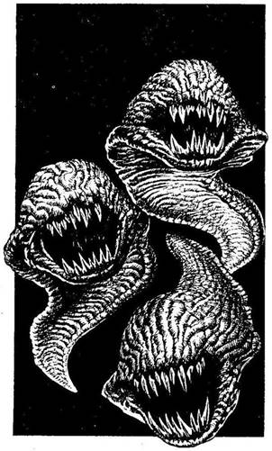
115.
Miután kireteszeled az ajtót, három ocsmány szörnyeteg nyomakodik ki rajta. Óriási repülő csigákra emlékeztetnek, melyeknek nincs szemük, viszont undorító tátongó szájuk és tűhegyes foguk van. Láva Démonok repkednek körülötted. Egyszer csak megtorpannak, és a fejed felett kezdenek lebegni. Mivel nincsenek szárnyaik, azon tanakodsz, mi tartja őket a levegőben. Ekkor azonban visszaemlékezel, hogy a Láva Démonok ágy változnak át Tűzmanókká, ahogy a hernyókból pillangók lesznek. Amint az első Láva Démon lecsap rád, hirtelen elneveted magad, amiért pillangók járnak az eszedben ilyen alkalmatlan pillanatban.
Ügyesség Életerő
Első Láva Démon 6 4
Második Láva Démon 5 4
Harmadik Láva Démon 6 4
Egyenként küzdj meg velük. Ha nyersz - lapozz a 309-re.

116.
A Goblinok vászonzsákjait átkutatva 2 Aranytallérra, némi szikkadt sajtra, és egy ezüstkeretbe foglalt, törött tükörre lelsz. Az Aranyat és a tükröt elrakod, aztán megvizsgálod a sajtot. Ha meg akarod enni - lapozz a 140-re. Ha inkább elhajítanád, és kelet felé nyargalnál - lapozz a 292-re.
117.
Egyik kezedben a fáklyával Borri és Symm segédletével lassan ereszkedsz le a kötélen a verembe. A csontrágás zaja hirtelen elül, ehelyett olyan cuppogást hallasz: mintha egy jókora bestia lassan mozogna a sűrű üledékben. De mielőtt elérnéd a verem alját, egy nagy, zöld, karmos kéz ragad meg, majd tátongó szájához emel, melyben hosszú, hegyes fogak látszanak. Könnyedén kettéharap az a szörny, amelynek az elpusztítására idejöttél.
118.
Kivont karddal vágtára ösztökéled a lovadat, és lerohanod a Dombi Óriást. Mielőtt elérnéd, a teremtmény felkap egy nagy követ, és teljes erőből hozzád vágja. Dobj egy kockával! Ha 1-et vagy 2-t dobsz - lapozz a 374-re. Ha az eredmény 3-6 - lapozz a 173-ra.
119.
- Ostoba Trollok. Viszont rövid időre szükségünk van rájuk, bár Razaak kétségtelenül felhasználja őket, amikor Allansiát meghódítja. Ők csak szolgák, akik gondját viselik a Gargantisnak, melyet Razaak tenyésztett ki, és hadserege élén Allansia erői ellen fogja bevetni. - A palástod alá rejtett fehér szarvra gondolsz, nyelsz egyet és félrenézel, reménykedve, hogy a Csontváz Fejedelem nem vette észre bűnödet. - Mindamellett - folytatja Ungoth - szeretném, ha válaszolnál a kérdésemre: Razaak melyik számot tetoválja rá Zombi alagútépítői karjára? Ha tudod a választ - lapozz arra a számra. Ha nem tudod - lapozz a 291-re.
120.
Az Ork a nyakadba ugrik, és kiüt a nyeregből. Végighemperegsz a földön az Orkba kapaszkodva, aki eszeveszetten karmolva, harapva próbálja magát olyan helyzetbe hozni, hogy kését beléd mártsa. Ruhájának avas szagától nehezen lélegzel. A másik két Ork titeket néz, és siettetik társukat, hogy öljön meg, de azért résen vannak, ha segíteni kell.
Ork Ügyesség 6 Életerő 5
Képtelen vagy a kardodat használni és ezért minden egyes Fordulóban le kell vonnod 2 pontot a Támadóerődből. Ha nyersz - lapozz a 8-ra.

121.
A villám belecsap a közeli fába, és kettéhasítja a törzsét. Füst száll fel az elszenesedett fából, és szerencsésnek vallod magad, amiért megúsztad a sérülést. Lapozz a 300-ra.

122.
Ha nem tudsz visszaemlékezni rá, miféle teremtmény esett a pálca fogságába, képtelen vagy aktivizálni azt a Gargantis ellen. Csak a kardodban bízhatsz. Lapozz a 147-re.
123.
A Holdgyűrűt ráirányítod a Farkasemberre, és ráolvasod a Csontok őrzője által mondott szavakat. A Farkasember rettegve felüvölt, megfordul és eltűnik az éjszakában, hogy másik áldozat után nézzen. Lapozz a 36-ra.

124.
Próbaképpen magadra kensz egy kis vért, és várod, lesz-e valamilyen hatása. Dobj egy kockával! Ha 1-et dobsz - lapozz a 163-ra. Ha 2-t - lapozz a 272-re. Ha az eredmény 3-6 - lapozz a 361-re.

125.
Az alak lassan feléd lép, és te egyenesen Razaak visszataszító képébe tekintesz. Széles vigyor terül szét torz arcán, amikor megpillantja a nyakadban függő Szarvas Démont. - Nagyon elégedett vagyok, hogy magadon viseled az Örvénylő Gonosz Talizmánját. Igaz szolga vagy - mondja mély, gúnyos hangon. - Térdre! - Képtelén vagy ellenszegülni a parancsának, és térdre rogysz. Nem tudod fölemelni a karodat, hogy megszabadulj a talizmántói. Csak arra vagy képes, hogy figyeld Razaakot, amint feléd lép, csontvázkezét az arcodra helyezi, és kiszippantja belőled az életet. Immár Zombi vagy, az ő szolgája, és minden elveszett.
126.
A számszeríj nyílvesszője ártalmatlanul suhan el a fejed mellett, és Symm is megússza a sebesülést. Kiválasztjátok ellenfeleiteket, és lovaitokon rohamra indultok.
Törpe Ügyesség 7 Életerő 7
Ha nyersz - lapozz a 250-re.

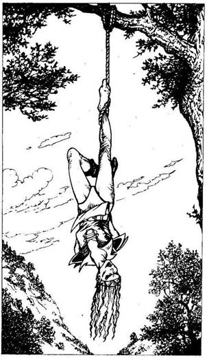
127.
Amikor közelebb jutsz a fákhoz, észreveszed a segítségért kiáltót. Egy fiatal nő lóg fejjel lefelé, jobb lábán kötélhurok, melyet egy magas faágra erősítettek. Háta mögött összekötözték a kezét, lehetetlenné téve számára; hogy kiszabadítsa magát. Könyörögve kér, hogy vágd le őt onnan, és cserébe meggyógyítja a sebeidet. Ha le akarod vágni - lapozz a 258-ra. Ha jobbnak látod otthagyni a nőt, és folytatod az utad - lapozz a 382-re.
128.
Ha nálad van a pálca mindkét fele, tudnod kell, miféle pálcáról van szó és hogyan kell használni. Szerinted ez nem más, mint:
A Mennydörgés Pálcája? Lapozz a 387-re.
Az Alakváltozás Pálcája? Lapozz a 206-ra.
A Bénító Pálca? Lapozz a 38-ra.
129.
Jóval a Goblinok előtt eléred az erdőt, és magas, göcsörtös fák között belovagolsz a sűrű aljnövényzetbe. Sötét és félelmetes az erdő, csak kevéske fény szűrődik be felülről, a sűrű lombkoronák között. Megrántva a kantárt megálljt parancsolsz a lovadnak, és vársz egy kicsit, vajon követnek-e a Goblinok az erdőbe. Hallod őket, ahogy egymásnak kiáltoznak az erdőszélen, és némi félelmet vélsz fölfedezni a hangjukban. Egyszer csak azt hallod, hogy elnyargalnak, és azon töröd a fejed, miért nem tették be a lábukat az erdőbe. Gondosan figyelve minden neszre, a lovadat indulásra ösztökéled, de egyfolytában az az érzésed, hogy figyelnek. Lapozz a 365-re.
130.
Miután kikászálódsz az üregből, fölfedezed, hogy amit találtál, nem más, mint egy bronzmaszk. Ha fel akarod venni a maszkot - lapozz a 385-re. Ha inkább itt hagynád, és a szemközti szűk alagúton mennél keresztül - lapozz a 297-re.
131.
Egy varázserejű pajzs birtokába jutottál, mely több száz éves. Szokatlan tulajdonsággal rendelkezik: megvédi hordozóját a rávarázsolt villámcsapásoktól. Természetesen az éles pengék ellen is védelmet nyújt. Mivel készítője a Védelmező nevet adta neki, minden bizonnyal a legjobb pajzsok egyike egész Allansiában. Nyersz 1 Ügyesség és 1 Szerencse pontot. Átveted a válladon a pajzsot, és a tó felé indulsz lovaddal. Lapozz a 29-re.
132.
A forgószél jó pár száz méterrel arrébb halad el, így sértetlenek maradtok menedékhelyeteken. Amikor a szél elhal, megkönnyebbülten sóhajtotok fel. Borri azon nyomban nekilát felderíteni a léggömb sérüléseit, és azt állítja, hogy legalább két órára van szüksége a kijavításukhoz. Úgy határozol, hogy Symm-mel együtt megpróbáltok lovak vagy egy teherhordó állat után nézni. Fél óra múlva lófogatú szekerekből álló karavánt pillantotok meg, mely északnyugat felé halad, keresztül a síkságon. Intesz a legközelebbi lovasnak, aki két másik kíséretében hozzád üget. Megkérdik, mit akartok, mire azt válaszolod, hogy teherhordó állatra van szükségetek. Közlik veletek, hogy nincs tartalék lovuk vagy öszvérük, de szívesen elvisznek szekéren fejenként 3 Aranyért. Ha akarod, és
főleg ha megengedheted magadnak, hogy 9 Aranyat költs, hogy a karavánnal utazz északnyugat felé - lapozz a 277-re. Ha visszautasítod az ajánlatukat, és magad nézel lovak után - lapozz a 325-re.

133.
Az ügyes Patkányembernek nagy gyakorlata van a parittya használatában, és az éles kő fájdalmasan találja telibe a homlokodat. Vesztesz 2 Életerő pontot. Mielőtt a Patkányembernek ideje lenne újratölteni parittyáját, kardoddal közelharcra kényszeríted, mialatt Borri és Symm a másik kettőt kapja el.
Patkányember Ügyesség 5 Életerő 6
Ha nyersz - lapozz a 22-re.

134.
Karddal a kezedben leugrasz a lovad hátáról, és megtámadod a fürge embert, aki két hosszú combcsonttal van felfegyverezve.
Csontok Őrzője Ügyesség 5 Életerő 6
A Csontok Völgye megátkozza azt, aki bántalmazza őrzőjét. Ha nyersz - lapozz a 287-re, de vesztesz 3 Szerencse pontot.
135.
Miután magatok mögött hagytátok a Fekete Erdőt, a Holdkő dombok nyugati pereme fölé értek, ahol már két nappal ezelőtt veszélyes utazást tettél. Hamarosan feltűnik előttetek a Pókok erdeje, mely leginkább a Fekete Erdőre hasonlít, és jól tudod, hogy hasonló láthatatlan veszélyek leselkednek odalenn. Miután elhagytátok az erdőt, a léggömb egyenesen délkelet felé visz, mígnem elsodródtok a Holdkő dombok keleti csücskéhez, mely a Nagy Síkságban folytatódik. - Van-e valami elképzelésed arról, hol szálljunk le? - teszi fel a kérdést Borri, fogai között ósdi pipájával. Végigfürkészed magatok alatt a tájat, valami barlang- vagy alagútbejáratot keresve. Tedd próbára a Szerencsédet! Ha szerencséd van - lapozz az 59-re. Ha nincs szerencséd - lapozz a 160-ra.

136.
A széken még vannak vasrudak, de ezek a szék hátuljára vannak erősítve, és mind egy irányba állnak. A sziszegő hang a következőket mondja: - Halál a behatolókra! - És a tűhegyes vasak beleszaladnak a hátadba. Allansiának vége.
137.
Ahogy lovagolsz, felbámulsz a baljóslatú, sötét égboltra; szárnyas gyilkosok után kutatsz, melyek lecsaphatnak rád. Nem látsz egyetlen repülő teremtményt sem, de a csend igencsak nyugtalanít. Körbenézel, Orkokat keresel, de nem látsz semmit. Hirtelen felnyerít a lovad, és hátsó lábára állva ágaskodik. Dobj két kockával! Ha az összeg ugyanannyi vagy kisebb, mint az Ügyességed - lapozz a 39-re. Ha az összeg nagyobb, mint az Ügyességed - lapozz a 298-ra.
138.
Már majdnem ott vagy az alagút bejáratánál, amikor lépések zaját hallod a hátad mögött. Tedd próbára a Szerencsédet! Ha szerencséd van - lapozz a 274-re. Ha nincs szerencséd - lapozz a 359-re.

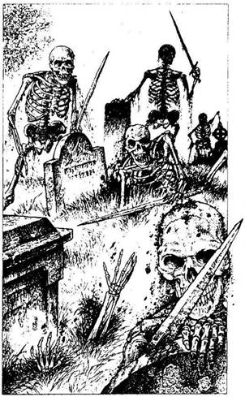
139.
Amikor beléptek az irtásra, valami baljós dolog történik. A sírkövek körül megmozdul a föld, és csontkezek nyúlnak ki alulról. Feltűnik egy koponya, aztán egy másik is, mígnem hat csontvázat látsz magad előtt, mindegyik kezében rozsdás kard. Megátkozott gyűrűd parancsára cselekednek, és hárman közülük dülöngélve mindjárt feléd is indulnak, a másik három meg Symmet célozza meg.
Ügyesség Életerő
Első Csontváz 6 5
Második Csontváz 6 6
Harmadik Csontváz 5 6
Ha nyersz - lapozz a 290-re.
140.
A sajt száraz és kemény, de mégis laktató. Nyersz 2 Életerő pontot. Miután befejezted az evést, megpaskolod a lovad nyakát, és kelet felé indulsz. Lapozz a 292-re.
141.
Ha van nálad csiszolt kő - lapozz a 172-re. Ha nincs - lapozz a 357-re.
142.
A nap elmúlik, szürkülni kezd, mire Kőhidafalva feltűnik a szemed előtt. Ha Kőhidafalván kívül akarsz letáborozni - lapozz a 92-re. Ha úgy döntesz, hogy nem kutatsz a sírkert után, és belovagolsz a városba - lapozz a 316-ra.
143.
Az ostoba Rad-Hulkok feléd csoszognak, és nem futamodnak meg kardod csapásaitól. A fény élteti őket, és igencsak kemény ellenfelek.
Ügyesség Életerő
Első Rad-Hulk 10 5
Második Rad-Hulk 10 6
Egyszerre csak eggyel harcolj! Ha nyersz - lapozz a 87-re.
144.
Borrinak és Symmnek szintén sikerül legyűrni ellenfeleiket, bár mindketten súlyosan megsebesültek. Mialatt sebeiket kötözik, átkutatod a testeket, és találsz egy bőrszütyőt a vezetőjük övén. Egy bronzkulcsot és valamilyen barna port találsz egy apró, kerek bádogdobozban. Zsebre vágod a kulcsot, és átnyújtod a port Symmnek, hátha tudja, mi az. - Szagold meg - mondja komoran. - Ez valami szörnyűség. - Kiüríti a bádogedény tartalmát a földre, te pedig elgondolkodsz, melyik irányba folytassátok az utat. Ha az alagúton mentek végig - lapozz a 398-ra. Ha inkább visszamennél az elágazáshoz, és egy másik járatot próbálnál meg - lapozz a 222-re.
145.
Ó jaj, egy agrai halotti maszkot húztál magadra! Agra Főpapjai készítették Dél-Allansiában ezeket a szörnyű maszkokat, hogy aratás idején szerencsétlen áldozataikra tegyék őket. Habár viselőjük teljesen normálisnak hat, mégis hamarosan lefekszik a földre, és tört döf saját szívébe. A Főpapok uralkodtak népükön, és azt hitették el velük, hogy az áldozatbemutatások során az emberek saját jószántukból ölték meg magukat. Míg Borri és Symm becsukják a csapóajtót, te lefekszel a földre és Razaak kardját a mellkasodba szúrod. Pillanatokon belül porrá válik a tested, Borri és Symm pedig fejvesztve rohan ki, s nem tudják, mitévők legyenek. Allansiának befellegzett.
146.
A kanyargó folyó vonalát követve ügetsz fel a dombokra. Körülbelül egy óra múlva a talaj nagyon lápossá válik, és a lovad csak nehezen halad előre. Úgy tűnik, itt a folyó gyakran lép ki a medréből és önti el a völgyet. Ha továbbmész észak felé - lapozz a 249-re. Ha inkább átkelsz a folyón, és kelet felé folytatod utad a dombok közé - lapozz az 53-ra.
147.
Lecsúszol a verem falán, és egyenesen beletérdelsz a bűzölgő nyálkába. A rettenetes Gargantis igen nagyra nőtt, és nem érsz a hasánál feljebb. Félelmetes ereje van, és a bőre olyan vastag, akár egy páncél.
Gargantis Ügyesség 12 Életerő 24
Ha valamilyen módon sikerül legyőznöd ezt a hatalmas bestiát - lapozz a 220-ra.
148.
Végre valahára eléritek az utolsó ormot, és végigtekintesz a Szélpusztán. Egészen sötétedésig lovagoltok, és egy békés éjszakát töltötök el egy, az Ezüstfolyó északi partján álló elhagyatott
kunyhóban. Nem sokkal pirkadat után újra nyeregbe szállva, Yaztromo tornya felé nyargaltok. Délre eléritek az úticélt, és izgatottan kiáltozol öreg barátod után, ahogy feltűnik a torony. Azonban senki sem válaszol, és a mosoly hamar lefagy az arcodról. Egy bokorhoz kikötöd a lovadat, és az ösvényen Yaztromo ajtajához sétálsz. Észreveszed, hogy a mágus kertjében a növények elszáradtak, és csúf bozót lepte el, melynek hosszú, fekete tüskéi nőttek. Ez a feltűnő változás, mely néhány nap alatt ment végbe, igencsak szöget üt a fejedbe. Megkongatod a rézharangot, de senki nem válaszol. Egyszer csak egy jókora varjú száll le egy ablakból, és a földre ejt egy papírdarabot. Fölveszed, és elolvasod Yaztromo neked írt üzenetét:
Kedves Barátom!
Sajnálom, hogy nem vagyok itt, hogy találkozhassunk. Még mindig nagyon lekötnek az előkészületek. Kérlek, lovagolj kelet felé, ahol megtalálsz engem egy kunyhóban, a Fekete Erdő szélén.
Yaztromo
Megemlíted Symmnek a levelet, aztán mindketten lóra pattantok. Kelet felé vágtatva azon tűnődsz, vajon Yaztromo veszélyben van-e. Miután az erdő szélén ellovagoltok vagy egy mérföldnyi távolságba, egy hang rátok kiált az erdőből. - Ha Yaztromót keresitek, én tudom, hol találjátok meg. Ha megálltok, és utánanéztek a dolognak - lapozz a 237-re. Ha inkább továbblovagoltok - lapozz a 68-ra.
149.
Rabul ejt a szikrázó gyémántok szépsége, de ahogy a kezedbe veszel egyet, ez az utolsó dolog, amit életedben cselekedtél. Tested nyomban kikristályosodik, és úgy szikrázol, mintha magad is gyémánt lennél. Megmentetted Allansiát a pusztulástól, de kapzsiságodért az életeddel fizetsz.
150.
A nap hátralévő része hamarosan elmúlik, és találsz egy megfelelő helyet, ahol éjszakára letáborozhatsz. Kipányvázod a lovadat egy közeli fához. Leheveredsz, de az éjszaka kellős közepén zümmögő szárnyak zajára riadsz fel. A telihold látványára ébredsz, de figyelmedet azonmód magára vonja két fénylő valami, melyek a fejed fölött lebegnek. Itt fenn a dombok közt ezek nem lehetnek mások, mint Óriás Tűzbogarak! Ezek a fura lények válogatás nélkül támadják meg az embereket, komoly sebeket okozva erőteljes rágóikkal. Pillanatok alatt talpon vagy, hogy megvédd magad. Egyszerre csak egy bogárral küzdj!
Ügyesség Életerő
Első Óriás Tűzbogár 5 4
Második Óriás Tűzbogár 5 4
Ha legyőzöd őket - lapozz a 113-ra.
151.
Elmész egy a falra erősített, ütött-kopott sisak mellett, melynek tetején egy gyertya pislákol. Itt az összes gyertyatartó koponyából készült, és azon tűnődsz, miért lóg ki a sorból a sisak. Ha fel akarod
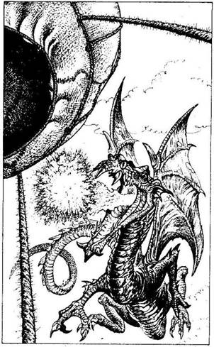
próbálni a sisakot - lapozz a 197-re. Ha inkább folytatod az utat - lapozz a 281-re.
152.
Az égen repülő tárgy nem más, mintegy gigantikus hosszú nyakú, hosszú farkú teremtmény. Pikkelyei vörösek, és legalább huszonöt méter a hossza. Némely sárkány ártalmatlan, mások barátságtalanok, de egy kifejlett Vörös Sárkány minden esetben ellenséges, és ami még rosszabb, szájából tűzgolyókat képes lövellni. - Borri, tedd le ezt a szerkezetet a földre, amilyen gyorsan csak tudod, vagy mindnyájan odaveszünk! - szólal meg Symm. De már késő... a Vörös Sárkány lecsap, és egy tűzgolyót lő egyenesen a léggömbre, amely azon nyomban lángra kap, és a föld felé zuhan. Ha tudod, hogyan hívd segítségül a Sumát - lapozz arra a fejezetpontra. Ha nem tudod, mitévő legyél - lapozz a 106-ra.
153.
Amint lovadat egyre fölfelé ösztökéled a dombtetőre, az Óriás felkap egy követ, és utánad hajítja. Dobj egy kockával! Ha 1-et dobsz - lapozz a 374-re. Ha az eredmény 2-6 - lapozz a 350-re.
154.
A túlsúly ellenére sikerül megkapaszkodnod a kötélben, és a Hobgoblint lerugdosnod a lábadról. Az hangos kiáltással zuhan a földre, te meg a kötélen felkapaszkodva beugrasz a kosárba. Lapozz a 226-ra.
155.
A Goblinok vászonzsákjában kutatva 2 Aranytallérra, némi megszikkadt sajtra és egy ezüstkeretbe foglalt, törött tükörre lelsz. Elrakod a pénzt és a tükröt, aztán szemügyre veszed a sajtot. Ha meg akarod enni - lapozz a 46-ra. Ha inkább elhajítanád, tedd azt, majd vagy lovagolj tovább kelet felé - lapozz a 280-ra; vagy ügess le észak felé a dombról, a kis erdő irányába, melyet a völgyben látsz - lapozz a 203-ra.
156.
Csak a tízméterenként falra erősített fekete gyertyák világítanak a hideg alagútban. Némelyikük már leégett, de a többi is alig pislákol. Ha vársz, hátha jön valaki és kicseréli a gyertyákat - lapozz a 191-re. Ha továbbmész - lapozz a 217-re.
157.
Yaztromo némi laktató ételt ad: nyersz 2 Életerő pontot; és üvegfioládat újratölti öt kortyra való Gyógyító Itallal. Yaztromo, kezében lovad kantárszárával, így szól: - Ha sikerül megtalálnod a kísértetjárta sírkertet, annál jobb, de ne vesztegess el túl sok időt a kereséssel. Utána lovagolj be a Törpék lakta Kőhidafalvára, és keresd meg Borrit. O segít majd, hogy időt nyerj! - Elengedi a kantárt, aztán megsarkantyúzzátok lovaitokat, és nyugat felé ügettek, végig a Fekete Erdő szélén. Kevesebb, mint egy óra múltán úgy besötétedik, hogy képtelenek vagytok folytatni az utat. Megfelelő helyet találtok, ahol megpihenhettek. Nagy tüzet raktok, és felváltva őrséget álltok az éjszaka során. Magadra vállalod az első posztot, de nem sokkal éjfél után a fák mögül rettenetes üvöltést hallasz.
Felkelted Symmet, és megtanakodjátok, mitévők legyetek. Ha utána akarsz nézni a dolognak - lapozz a 244-re. Ha úgy döntesz, hogy rá sem hederítesz - lapozz a 345-re.
158.
A kő, melyet Symm kiválaszt, gyógyító tulajdonságokkal van felruházva, és igencsak hatásos a Jégszellem érintésével szemben. Tested felmelegszik és visszanyered az eszméletedet. Túl sok mindenen mentél keresztül, s ezért vesztesz 2 Életerő pontot. Symm közli veled, hogy a Jégszellem megint eltűnt, miután sem őt, sem Borrit nem tudta megérinteni. Az alagút újra csendes, és úgy döntesz, abbahagyjátok a kutatást a titkos járatban. Elszántan indultok el a kőszobrok között. Lapozz az 56-ra.
159.
A domb és a folyó közti terület hamarosan szinte járhatatlanná válik a lovad számára, mivel sziklák, kidőlt fák és kusza bozótok akadályozzák a haladást. A folyó másik oldalán sokkal jobb a talaj, így átkelsz a folyón, hogy könnyebben tudj előrejutni. Lapozz a 284-re.
160.
Lassan a sík vidék fölé értek, de nem találtok egyetlen alagútbejáratot sem. Egyre jobban elcsüggedsz, és megkéred Borrit, hogy szálljatok le, mielőtt túlságosan délkelet felé sodródnátok. Eleget tesz a kérésednek, és kiengedi a levegőt a léggömbből. Szépen leszálltok, de Borri figyelmeztet, hogy kapaszkodj erősen, amíg földet nem értek. A kosár nagy puffanással a földhöz csapódik,
de senki nem sérül meg. Nem beszéltek egymáshoz, miközben összehajtogatjátok a léggömböt. - Szükségünk lesz még a léggömbre később, - szólal meg végül Borri - de hogy vigyük magunkkal? - Ne aggódj - válaszol Symm. - Láttam egy ökörgulyát egy mérföldnyire. Elmegyek és hozok egyet, amíg csináltok egy primitív szánt, és rápakoljátok a gömböt. Nem tart tovább egy óránál, míg visszaérek. - Kivágtok egy kis fát, szánt készítetek belőle, és éppen akkor, amikor Symm megérkezik az ökörrel, befejezitek a munkát. A tanulékony állat könnyedén húzza maga után a szánt, de el kell döntened, melyik úton mentek tovább. - Nos, ennek a pokolbéli alagútnak vagy északra, vagy dél felé kell lennie - jelenti ki Symm. Ha észak felé haladtok tovább - lapozz a 30-ra. Ha dél felé folytatjátok az utat - lapozz a 229-re.

161.
A patkány ragályhordozó volt, és hamarosan gyengének, betegnek érzed magad. Vesztesz 6 Életerő pontot és 1 Ügyesség pontot. Ha még mindig bele akarsz nézni a ládába - lapozz a 211-re. Ha inkább kihagynád a barlangot - lapozz a 386-ra.
162.
Egy óra hosszat vándoroltok a megfeketedett dombokon, míg végre célba értek. A völgy alján, mint valami óriási felszakadt seb, ott húzódik a hasadék, és egyfolytában ereszti magából az orrfacsaró gőzöket. Vigyázva lépsz a hasadék csipkézett széléhez, és belebámulsz a tátongó lyukba. Lépcső vezet le a sötét semmibe, de mást nem is igen látni. Hátralépsz a hasadéktól, hogy kieszelj egy tervet. Ha várakozni akarsz, hátha feltűnik Razaak egyik szolgája - lapozz a 81-re. Ha inkább elindulsz lefelé - lapozz a 381-re.

163.
Egyik karod lassan bénulni kezd, míg végül már egyáltalán nem érzed, és mozdítani sem tudod. Használhatatlanul lóg a tested mellett. Vesztesz 2 Ügyesség pontot. Soha többé nem leszel képes pajzsot használni, vagy íjjal lőni, ha úgy adódik. Szitkozódsz, és az álca csak csekély vigaszt nyújt. Kelet felé fordítod a lovadat, és elnyargalsz. Lapozz a 180-ra.

164.
Meglepetésedben a fejedet csóválod, Yaztromo akkor hozzád lép, és karját a válladra helyezve így szól: - Barátom, többet tettél Allansiáért, mint amennyit valaha is elvártak volna tőled. De sajnos ez nem elegendő! - kezével hirtelen megragadja az arcodat, és amint kiszippantja belőled az életet, Razaak megtöri az illúziót, hogy undok valódi énjét leleplezze. Most már az őt szolgáló Zombik egyike vagy, és minden hiábavaló volt.

165.
Sötét gondolatok közt vívódva nem veszed észre, hogy követnek, és csak a vágtató paták hangja zökkent vissza a valóságba. Visszanézel, és egy közeledő felfegyverzett Kentaurt pillantasz meg.
Lovad túlságosan fáradt, hogy elvágtasson a Kentaur elől, így szembefordulsz ellenfeleddel, aki előkapja hosszú dárdáját, és azzal harcol.
Kentaur Ügyesség 10 Életerő 10
A fele ember, fele ló Kentaur kedvét leli a csatában, és szívós ellenfélnek bizonyul. Ha nyersz - lapozz a 289-re.

166.
Symm épp időben veszi észre a teremtményt, és félrelök téged. A Vasevő ártalmatlanul zuhan a földre, te meg folytatod az utat. Lapozz a 151-re.

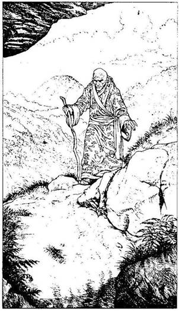
167.
Hamarosan egy kis öregembert látsz magad előtt, rajta sárga palást. Teljesen kopasz, és vaknak tűnik, bár elég fürgén halad a barlang felé, egy kampós bottal tapogatva maga előtt az utat. Amikor a közeledbe ér, látod, hogy palástját különös szimbólumok borítják. Hirtelen megtorpan és kiegyenesedik, de nem szól egy szót sem. Ha beszélni akarsz vele - lapozz a 96-ra. Ha inkább felmennél a dombra - lapozz a 313-ra.

168.
Minden eddiginél jobban ügyelve a rejtőzködő támadókra, lassan keresztül lovagolsz az erdőn. Hamarosan egy apró tisztás szélére érsz, ahol a talajt gömbölyű, mélybíbor színű gombák borítják. Ha átgázolsz a gombákon - lapozz a 337-re. Ha inkább a tisztás szélén lovagolsz el - lapozz a 302-re.
169.
Miután kijutsz az üregből, elindulsz a szűk alagúton. Lapozz a 297-re.

170.
Hihetetlen erővel csap beléd a villám és végigfut egész testeden. Dobj egy kockával, adj hozzá hármat az eredményhez és vond le az Életerődből. Az Ügyességedből szintén vonj le 1 pontot. Ha még élsz - lapozz a 300-ra.
171.
Egész napos, hosszú lovaglás után a lovad igencsak kifáradt. Ha megállsz pihenni és megitatod a pataknál - lapozz a 77-re. Ha nem állsz meg a pataknál - lapozz a 190-re.
172.
Miközben elájulsz; Symmnek eszébe jutnak a kövek, melyeket találtál. Ő tudja, hogy bizonyos, Allansiában található kövek képesek megszüntetni a fagyás tüneteit. Ezeket akkor használták, amikor többen megdermedtek egy Jégszellem érintésétől. Megvizsgálja a köveket, és az egyikről el tudja képzelni a dolgot. Homlokodra helyezi, leül és vár. Tedd próbára a Szerencsédet! Ha szerencséd van - lapozz a 158-ra. Ha nincs szerencséd - lapozz a 285-re.
173.
A jókora kő elsüvít a fejed mellett, és tompa puffanással esik a földre. A Dombi Óriás bömböl dühében, és fabunkója után nyúl, hogy kiüssön a nyeregből.
Dombi Óriás Ügyesség 9 Életerő 10
Ha nyersz - lapozz a 282-re.
174.
Orrodat befogva beugrasz a vízbe és alámerülsz. Lábad nem ér le a fenekére, és rúgkapálsz, hogy újra a felszínre kerülj, de valami a lábadra tekeredik, és megint lehúz. Egy visszataszító csápos teremtmény tart szorításában, melyet Razaak a saját szórakoztatására teremtett. A hosszú, szívókorongos csápok rátapadnak a testedre, és képtelen vagy kardoddal kiszabadítani magad. Küzdesz, de hiába, végül belefulladsz a sötét vízbe.
175.
A hátizsákban 4 Aranytallér, egy gyertya és egy pergamentekercs van. Az Aranyat és a gyertyát berakod a hátizsákodba, aztán a tekercset veszed szemügyre. Valamilyen irást látsz rajta. Ha szétnyitod a tekercset és beleolvasol - lapozz a 268-ra. Ha inkább otthagynád a tekercset, ahol van, azt is megteheted, és ha még nem tetted volna, megvizsgálhatod a pálcát - lapozz a 360-ra, vagy felpróbálhatod a sisakot - lapozz a 111-re. Ha netán visszamennél a lovadhoz - lapozz a 221-re.
176.
Követitek saját nyomaitokat vissza, észak felé, és késő délutánra eléritek a helyet, ahonnan elindultatok. Borri tréfálkozni kezd ezen, de sem Symmnek, sem neked nincs kedvetek nevetni. Anélkül hogy megállnátok pihenni, észak felé nyargaltok. Lapozz a 30-ra.

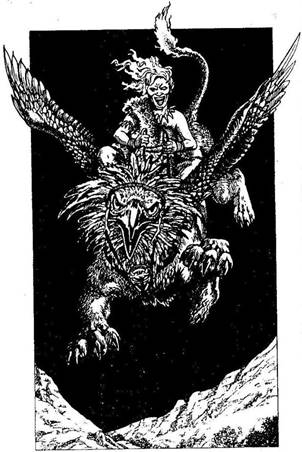
177.
Kénytelenek vagytok libasorban végigmenni az alagúton, és körülbelül húsz méter megtétele után csapdába sétáltok. Egyes-egyedül Razaak és szolgái tudják, hogy egy időben csak egyetlen személy képes az alagútnak ezen a pontján elhaladni. A padlóban elrejtett mérleg érzékeli a ránehezedő súlyt, és amikor a súlyhatárt meghaladja, a középső darab egyszerűen lezuhan. Mindhárman egy tizenöt méter mély verembe estek, és felnyársalnak benneteket a vaskarók. Allansiának immár befellegzett.
178.
Habár az ég sötét, észreveszel egy árnyékot, amely egyenesen a nyomodban halad. Fölnézel, és egy sasfejű, oroszlántestű szárnyas teremtményt pillantasz meg, mely támadóan közeledik feléd. A teremtmény feje körül gyeplő van, melyet lovasa, egy állati bőrökbe öltözött, vad kinézetű lány tart a kezében. A Barbár lány a Griffint használja harci paripaként, mely agresszív, de hűséges társa.
Griffin Ügyesség 10 Életerő 10
Ha nyersz - lapozz a 230-ra.
179.
Az öregember rád mosolyog, és elégedetten bólogat. - Valóban emberfeletti feladat az, melyet magatok elé tűztetek, mégis szeretnék nektek segíteni, ha tudok. Régen képes voltam arra, hogy megfejtsem a szimbólumokat és a különféle nyelveket,
de az az átkozott Lord Azzur a Feketehomok Kikötője alatt lévő várbörtönben kivájatta a szememet. Nicodemus mágusnak sikerült ugyan megmentenie az életemet, de mostanra már, természetesen, a tudásom kissé megkopott. De ha van nálatok bármilyen iromány, amit nem értelek, ám föl tudtok nekem olvasni, szívesen segítenék. Ha van nálad egy pergamen, amelyen különös írásjegyek vannak - lapozz a 336-ra. Ha nincs a birtokodban ilyen pergamen - lapozz a 195-re.
180.
A következő domb tetején azt veszed észre, hogy a talajt egy ismeretlen teremtmény hatalmas csontjai borítják. Némelyeket nagy halomba raktak, míg a többit szanaszét szórták. Hirtelen megpillantasz egy fekete csuklyás alakot, ahogy az egyik csonthalomtól a másikig surran. - Menj el! Menj el! - kiált félelemmel teli hangon. Ha megközelíted őt - lapozz a 70-re. Ha inkább körüllovagolod a Csontok Völgyét - lapozz a 369-re.
181.
Körbejárod a hasadék alját, és egy lyukai találsz a falon, mely éppen elég széles ahhoz, hogy átpréseld magad rajta. Találsz még egy kőemelőt is a hasadék másik végében. Ha keresztülnyomakodsz a nyíláson - lapozz a 396-ra. Ha inkább ránehezedsz a kőemelőre - lapozz a 321-re.

182.
Annak ellenére, hogy nem érzed a rajtad lévő karkötő hatását, az varázserejével valójában eltorzítja a látásodat. A tárgyak közelibbnek tűnnek tényleges távolságuknál. Harcképességedet is nagymértékben csökkenti a karkötő. Vesztesz 2 ÜGYESSÉG pontot és 1 SZERENCSE pontot. A karkötő ezen tulajdonságairól nem tudva azon töröd a fejed, merre menj tovább. Ha meg akarod keresni az Óriás barlangját - lapozz a 241-re. Ha inkább nyugat felé mennél, végig a völgyön - lapozz a 67-re.

183.
Amint a tűz felé közeledsz, egy férfi hangját hallod. - Megállj, vagy beléd eresztek egy nyílvesszőt. - Olyan sötét van, hogy senkit nem látsz. Az óvatosság mellett döntesz, és megálljt parancsolsz a lovadnak. A férfi újra odakiált. - Bölcs döntés, idegen. Mondd meg nekem tehát, Törvénytudónak tartod-e magad vagy a Káosz szolgájának? Ha a válaszod „Törvénytudó" - lapozz a 308-ra. Ha az, hogy a „Káosz szolgája" - lapozz a 270-re.
184.
A hatalmas gránitajtó lassan kitárul, és hideg köd csap meg. Egy alak körvonalait látod kibontakozni a ködben, és előremész, hogy találkozzatok. Ha a nyakadban viseled a Szarvas Démon alakú bronztalizmánt - lapozz a 125-re. Ha nem viseled a talizmánt - lapozz a 276-ra.

185.
Lassan észak felé haladsz, és két óra elteltével észreveszel egy barlangot a völgy túloldalán lévő domboldalban. Ha át akarsz kelni a folyón, hogy megnézd a barlangot - lapozz a 97-re. Ha inkább továbbköveted a folyót - lapozz a 159-re.

186.
Miután megtöltötte a sisakját vízzel, Borri a kőtálhoz megy, és vizet önt az üledékre. A felcsapó gőz villámgyorsan megsűrűsödik, és mérgező gázfelhővel tölti meg a hasadék alját. Iszonyatosan köhögni kezdtek, és a szemeteket könnyek árasztják el. Hamarosan nem kaptok levegőt, és holtan rogytok össze.
187.
Lassan az Óriáshoz lovagolsz, és kardot rántasz, arra az esetre, ha az hirtelen felkapna egy követ, és hozzád vágná. Amikor úgy érzed, elég közel vagy hozzá, ledobod az Aranytallért a földre, és megsarkantyúzod a lovadat. Az Óriás rád sem hederít, amint ellovagolsz, mivel jobban érdekli az arany. Mihelyt úgy véled, elég távol vagy tőle, lelassítod a lovad. Lapozz a 67-re.
188.
A doboz a Troll házipókjának otthona - egy halálos tarantuláé. Amint kinyitod a dobozt, a pók kiszabadul, és végigszalad a karodon. Megpróbálod lesöpörni a rovart. Dobj két kockával! Ha az összeg ugyanannyi vagy kevesebb, mint Ügyesség pontszámod - lapozz a 204-re. Ha az összeg nagyobb, mint Ügyesség pontszámod - lapozz a 305-re.
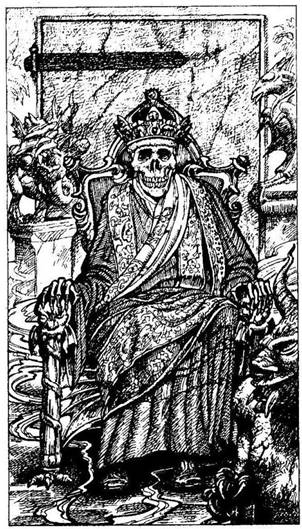
189.
Előveszed a bronzkulcsot a zsebedből, belehelyezed a zárba és elfordítod. Lenyomod a kilincset, és az ajtó, annak ellenére, hogy be van zárva, kinyílik. Még mindig zavarban vagy, de bemész az ajtón, és egy hűvös terembe jutsz, melyet Démonok és gonosz istenek szobrai díszítenek. A terem másik végében egy Csontváz ül mozdulatlanul a díszes trónon. Arany díszítésű bíbortalárt visel, és ékkövekkel kirakott korona van a fején. A trón mögött egy hatalmas gránitajtó látszik. A Csontváz állkapcsa hirtelen megmozdul, és mély hangon így szól hozzád: - Ungoth vagyok, a Csontváz Fejedelem, aki a tudás ura, és Razaak, a szellemidéző kriptájának őrzője. Mi dolgod van neked itt, te féreg? - Rémülten töröd a fejed a válaszon. Ha azt akarod válaszolni, hogy Feketehomok Kikötőjében jártál fegyvereket vásárolni, és meg akartad győzni Lord Azzurt, hogy csatlakozzon Razaakhoz Allansia meghódítása érdekében - lapozz a 364-re. Ha inkább kardoddal rátámadsz a Csontváz Fejedelemre - lapozz a 223-ra.

190.
Túlságosan kimerült a lovad, így képtelen a domboldal felénél magasabbra jutni, és lelassít. Zihál, és félő, hogy összeroskad. Vesztesz 1 Szerencse pontot. Hátranézel, és látod, hogy a Goblinok sietve rád rohannak. Nincs más választásod, mint megfordulni és harcolni.
Ügyesség Életerő
Első Goblin 5 5
Második Goblin 5 6
Harmadik Goblin 6 5
Negyedik Goblin 6 6
Küzdj meg velük egyenként a domboldalban. Ha nyersz - lapozz a 155-re.
191.
Tíz perc várakozás után tompa, csörgő zajt hallasz, amilyet egy lánc okoz, ha végighúzzák a kőpadlón. Hamarosan megpillantod a feléd közeledő alak körvonalát a T elágazásnál. Amikor a gyertya fényébe ér, szemedbe ötlik, hogy ruhája cafatokban lóg, halvány bőre sebhelyekkel teli és foszladozik. Lábait összeláncolták, szemmel láthatóan nehezére esik a járás. Rájössz, hogy a figura nem más, mint egy Zombi, aki kétségtelenül Razaak szolgálatában áll. Tíz méterre tőled megtorpan, és egy új gyertyát helyez az üres tartóba. Ha meg akarod támadni a Zombit - lapozz a 101-re. Ha inkább elosonsz, és folytatod utadat az alagútban - lapozz a 217-re.
192.
Mivel a patkány képtelen rá, hogy megharapjon a páncélon keresztül, leesik lábadról, és te azon nyomban megölöd a kardoddal. Odalépsz a ládához és belenézel. Lapozz a 211-re.
193.
A nálad lévő Józan Ész Kristálya elhárítja a mentális támadást, és mindhármótokat megvéd a szörnyű őrülettől. Gyorsan rájössz, hogy a Gargantis hihetetlenül erős bestia, és azon, kezdesz gondolkodni, mi lenne a legjobb módszer, hogy legyőzd. Ha még mindig be akarsz lépni a verembe és kardoddal támadsz rá - lapozz a 147-re. Ha valami mást használnál - lapozz a 375-re.
194.
Hamarosan néhány fával benőtt dombhoz érsz. Nem akarod, hogy rajtad üssenek, ezért újra keletre lovagolsz tovább. Lapozz a 252-re.
195.
Az öregember vállat von, és így szól. - Nos, akkor úgy látom, nem tudok a segítségetekre lenni. Viszlát és jó szerencsét! - Figyeled öt egy darabig, amint fürgén folytatja útját fel a dombra, és arra gondolsz, milyen különös, hogy egyedül mászkál, és nem látszik rajta, hogy félne ezen a veszélyes vidéken. Megfordulsz, mosolyogsz, és követed Symmet. Lapozz a 313-ra.
196.
Úgy tesztek, mintha nem láttátok volna meg a Dombi Embereket, és a nagy sziklák felé közeledtek. Amikor már húsz méterre vagytok tőlük, hirtelen felugranak, és két nyilat lőnek ki durva íjaikból, Mindazonáltal a rajtaütés nem ért készületlenül benneteket, a nyílvesszők elsuhannak a fejetek fölött. Kivont karddal a Dombi Emberekre rontotok, akik dühödten rohannak elő kőbunkóikkal. Lovadat
a két ellenfél közül annak a közelébe irányítod, akinek a testét állati bőrök fedik.
Vad Dombi Ember Ügyesség 6 Életerő 5
Ha nyersz - lapozz a 200-ra.
197.
Amint a fejedre húzod a sisakot, úgy érzed, rászorul a koponyádra, és nem akar mozdulni. Teljes erődből próbálkozói, mégis képtelen vagy levenni. Elég balszerencsés vagy, mert a Gyávaság Sisakját viseled. Mostantól fogva, ahányszor szembekerülsz valamilyen teremtménnyel egy csatában, dobj két kockával. Ha az összeg ugyanannyi vagy kevesebb, mint Ügyesség pontszámod, elég bátorságot tudsz összeszedni, hogy folytasd a harcot. Ha az összeg nagyobb, mint az Ügyességed, nem tudsz ellenállást kifejteni a teremtménnyel szemben, és a halál gyorsan utolér. Vesztesz 2 Szerencse pontot. Ostoba tettedet megbánva továbbhaladsz az alagútban. Lapozz a 281-re.
198.
Unott hangon válaszolsz, hogy fogalmad sincs, menynyibe kerül egy harci pöröly. - Harmincöt Aranyba kerül, elárulhatom! - mondja Borri izgatottan. Elképesztő. Hiszen annyiért vásárolhatsz egy pár jó bőrcsizmát, egy kardot, egy pajzsot, és még mindig marad apród egy tál meleg ételre és egy korsó sörre a korcsmában. - Amikor hazajutok, kovács akarok lenni, fegyverkészítő. - Borri ezután két óra hosszat egész más dolgokról fecseg. Törpelegendákról és életének mozzanatairól. Symm
azonban hirtelen nyugat felé mutat, és felkiált. - Nézzétek! Egy folt az égen, és egyenesen felénk közeledik! - Amikor a szemed már élesen látja azt a valamit, összeszorul a szíved. Lapozz a 152-re.
199.
A hűvös alagutat csak a falon tízméterenként elhelyezett fekete gyertyák világítják meg. Továbbmész, amíg egy nagy kőszékhez nem érsz, melyet a Kecskefejű Démon alakjára faragtak ki. Ha le akarsz ülni a székbe - lapozz a 26-ra. Ha inkább továbbmész - lapozz a 248-ra.
200.
Körbepillantasz, és látod, hogy Symmnek szintén sikerült legyűrnie ellenfelét. Összegyűjt nyolc nyílvesszőt a Dombi Emberek tegezeiből, mielőtt továbblovagolnátok nyugat felé. Lapozz a 148-ra.
201.
A forgószél egyenesen belétek kap, föl-le ráncigái egy halom törmelék közepén. Több száz méterre magával sodor, mielőtt a földhöz vágna, de akkor már halott vagy, mert a forgószél által felkapott kövek sok helyen betörik a fejedet.

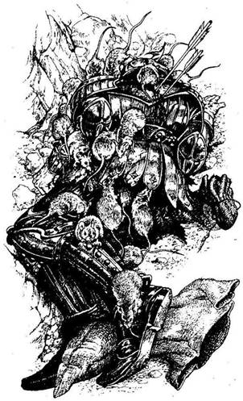
202.
A sziklafal tövében heverő valami egy holttest, és hatalmas patkányok mászkálnak rajta. A hullán bőrpáncélt látsz, de két nyílvessző áll ki a hátából. Egy bőrszütyő és egy rongyzsák hever üresen mellette, és sehol egy fegyver. Symm azonban észreveszi, hogy a fickó a bal kezében szorongat valamit, s miután Symm szétfeszíti az ujjait, egy bogár alakú csont amulettet talál. Átnyújtja, s közben megjegyzi, hogy ö jobban bízna a kardjában, mint egy csecsebecsében. Ha meg akarod tartani az amulettet - lapozz a 86-ra. Ha inkább előző tulajdonosánál hagynád, és az alagút másik járatán mennél végig - lapozz a 315-re.

203.
Magas, göcsörtös fák között ügetsz, és hamarosan sűrű aljnövényzetben gázolsz. Sötét és félelmetes az erdő, csupán a tömött fakoronákon át szűrődik be némi fény. Megállítod a lovadat, és úgy érzed, mintha figyelnének. Állandóan körbe-körbe nézve, lovadat gyorsabb haladásra ösztökéled. Lapozz a 365-re.

204.
Lesöpröd a pókot a karodról és eltaposod. - Trollok - mondja Borri a fejét rázva. - Csak a Trollok olyan idióták, hogy kedvtelésből mérges pókokat tartanak. Ezek után, gondolom, csörgőkígyót tart a talicskában! Ha szándékodban áll felborítani a taligát - lapozz a 366-ra. Ha inkább hagyod a talicskát és továbbmész - lapozz a 40-re.
205.
Kardoddal felfeszíted a pántokat, és kinyitod a dobozt. Nincs benne más, csak egy kicsiny agyagbaba. Ha elteszed az agyagbabát - lapozz a 299-re. Ha inkább anélkül lovagolnál tovább - lapozz a 339-re.
206.
Nyilvánvalóan nem vagy érdemes arra, hogy mágikus tárgyakat birtokolj, ha nem tudod, mik is azok valójában. Mivel képtelen vagy a varázspálcát működésbe hozni, csak a kardodban bízhatsz. Lapozz a 147-re.
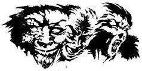
207.
A zsák felé közeledve, hirtelen síráshoz hasonló hangot hallasz. A legközelebbi fáról lelógó indán
egy nagy, szőrös, emberforma lény csüng; amelyen csupán egy rongy ágyékkötő van, s a kezében egy csontbunkót szorongat. A Majomember rád sújt, és kirúg a nyeregből. Tedd próbára a Szerencsédet! Ha szerencséd van - lapozz a 83-ra. Ha nincs szerencséd - lapozz a 219-re.

208.
Átnyújtod a kést a Csontok Őrzőjének. Gondosan megvizsgálja, elégedetten morog, és egy bőrszütyőt old le a nyakából. Átad egy fényesre csiszolt csontgyűrűt, melybe a teliholdat vésték bele. - Megvéd téged a Farkasemberektől, úgy ám - mondja igen büszkén. - Csupán mutass rá vele a Farkasemberre, és mondd: Egy, két, há', fuss el má'! Ennyi az egész. - Megköszönöd a Csontok Őrzőjének a gyűrűt, búcsút intesz neki, és kilovagolsz a Csontok Völgyéből. Lapozz a 369-re.
209.
Egy pillanattal a halálod előtt vakító fehér fényt látsz, és egy cikázó villám hagyja el Razaak ujja hegyét. Keresztülhatol varázs-védőfaladon, és egyenesen a mellkasodba vágódik. A világon senki sem lenne képes elviselni ekkora villámcsapást.
210.
Miután a Fekete Erdőt magatok mögött hagytátok, a Holdkő dombok nyugati pereme fölé kerültök, ahol két nappal korábban már veszélyes utat tettetek meg. A Pókok Erdeje föltűnik a látóhatáron, és leginkább a Fekete Erdőre emlékeztet, amint a lombkoronák fölött repültök. Hamarosan elhagyjátok az erdőt, és miután keresztülrepültök a Holdkő dombok déli csücskén is, megkezditek utazásotokat a Nagy Síkság felett. Az órák egyre telnek, és a békés repülés a biztonság hamis érzetét kelti benned. Ennek ellenére délkelet felé, a Bronzsíkság irányába pillantva, a felhők sötétebbnek tűnnek, mint valaha. A szél hirtelen feltámad, és perceken belül vihar dúl körülöttetek. - Ha nem csendesedik el hamarosan, le kell majd szállnunk - kiált Borri. Egyszer csak a távolban megpillantasz egy szürke csavart oszlopot, mely egyenesen felétek tart. - Forgószél! - üvölt Borri. - Leszállok, mielőtt belénk kapna. Nem lehet messzebb három percnél. - Dobj egy kockával, hogy meghatározd, hány perc alatt értek földet! Ha 1-et vagy 2-t dobsz - lapozz a 43-ra. Ha az eredmény 3-6 - lapozz a 114-re.

211.
A ládában két jól lerágott koponya és egy fémládika található. Felnyitod a ládika tetejét, és egy régi, megfakult pergamenre lelsz, melyre olyan nyelven
írtak, amit nem értesz. A pergamen alján egy számot látsz: 66. Csakhamar belefáradsz a pergamen olvasgatásába, és kigondolod, mitévő légy. Széttörheted a golyót, ha még nem tetted volna - lapozz a 367-re, vagy távozhatsz a barlangból - lapozz a 386-ra.
212.
Symm és Borri megúszta a dolgot, eltekintve a Borri karján lévő sebtől. A kalandor azonban haldoklik, hiszen egy pattintottkő-kés áll ki a gyomrából. - Köztetek van Razaak kardjának forgatója? - teszi fel a kérdést elhaló hangon. Azt válaszolod, hogy nálad van a kard. - Akkor a küldetésem itt véget ért. Egy üzenet van nálam Yaztromótól. Ha megölöd Razaakot, azonnal menekülj a kriptából, mert különben odaveszel. - A bátor kalandor nem mond többet. Meghal, mielőtt köszönetet mondhatnál neki. A tudat, hogy Yaztromo még mindig segít neked, még oly messziről is, csak még elszántabbá tesz benneteket, és újra bátran nekivágtok. Lapozz a 162-re.
213.
Támadásod a kívánt hatást érte el. Mivel a gyáva Goblinok nincsenek már fölényben, megfordulnak, és újra lóra ülve elvágtatnak. Hamarosan minden elcsendesedik, és folytatni tudod a kutatást. Ha még mindig kelet felé akarsz menni - lapozz a 280-ra. Ha inkább visszalovagolnál, lefelé a domboldalon, és észak felé indulnál el a völgyben látható apró erdő felé - lapozz a 203-ra.
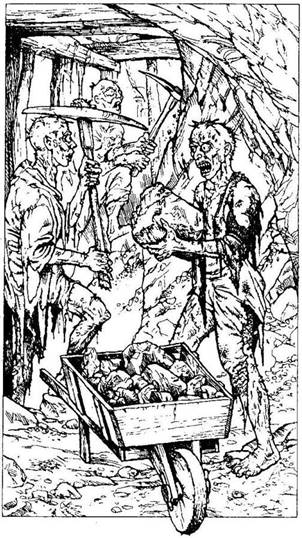
214.
Követed a kanyargós alagutat, és a füledben egyre erősödik a kopácsoló hang. Hamarosan mozgó alakokat látsz meg, viszont senki nem veszi észre a jelenléteteket. Két fakó bőrű, sovány ember csapkodja az alagút falát egy-egy csákánnyal, míg egy harmadik sziklákat rak egy taligába. Továbblépsz, és szemedbe ötlik, hogy az alagutasok kidülledt, tágra nyitott szemmel bámulnak előre. - A Doragarok bizonyára a rabszolgatartók, akik felügyelnek a Zombik alagútban végzett munkájára - mondja Symm. - De kinek dolgoznak? A Gargantisnak? Egyébként elértük ennek az alagútnak a végét, így hát legjobb lesz, ha megfordulunk és visszasétálunk az elágazáshoz. Ha Symm javaslata szerint cselekszel - lapozz a 338-ra. Ha odamész a Zombikhoz - lapozz a 256-ra.
215.
Még nem lovagoltatok be túlságosan mélyre az erdőbe, amikor egy irtásra értek. Izgatottan veszed észre, hogy egy régen elhagyott sírkertben álltok. A gyom és növényzet magasra nőtt, csaknem elrejti a töredezett, mohos sírköveket. Előhúzzátok kardotokat, és a legközelebbi sírkő felé lépdeltek. Ha van az ujjadon egy csontgyűrű, amelybe egy koponyát karcoltak bele - lapozz a 139-re. Ha nincs - lapozz a 333-ra.

216.
Kijutsz a fák közül, és továbbhaladsz kelet felé, a soha véget nem érő dombok közé. Lapozz a 252-re.
217.
Az alagút véget ér a verem szélén, mely bűzös fekete vízzel van tele. Semmiféle kiutat nem látsz. Ha megfordulsz, visszamész a T elágazáshoz, és a másik járaton mész végig - lapozz a 199-re. Ha megkockáztatod, hogy beleugrasz a vízzel teli verembe - lapozz a 174-re.
218.
Tarkódat beütöd egy éles kőbe és elájulsz. Megkötöznek, kirabolnak, és a keselyűk martalékául otthagynak a láthatatlan Kaméleoniták, melyeken a lovad már korábban megérezte a támadás szándékát. Ezek a lények akaratuk ellenére az örök végzetbe taszították Allansiát.

219.
A Majomember kirúgja a kezedből a kardodat, így puszta kézzel kell megvívnod vele.
Majomember Ügyesség 8 Életerő 7
Vesztesz 2 Ügyesség pontot ebben a harcban. Három Forduló után lapozz a 254-re.
220.
Visszatántorogsz a verem széléhez. Nehezen lélegzel, és úszol a verejtékben. Borri és Symm hangosan ujjong, de alig hallod őket a kimerültségtől. Segítenek a peremre mászni, aztán Symm a verembe ugrik, hogy eltávolítsa a Gargantis szarvát. Alighogy magadhoz térsz a megpróbáltatások után, átnyújtja neked a legendás szarvat, és mosoly terül el az arcán. Megcsodálod a szarv szépségét, majd az övedre akasztod. - Menjünk! - szólalsz meg, és mindkét barátodat visszavezeted az alagútban. A csontváz szobrok mellett elhaladva nem tűnnek fel újabb Jégszellemek, sietve mentek tovább. Tedd próbára a Szerencsédet! Ha szerencséd van - lapozz az 54-re. Ha nincs szerencséd - lapozz a 138-ra.

221.
Legnagyobb megkönnyebbülésedre a lovad még mindig ott áll a fához kikötve és elégedetten legelészik. Nem vesztegeted az időt, nyeregbe szállsz, és újra elindulsz. Lapozz a 168-ra.
222.
Az alagút lejt. A halvány fényt a falon harmincméterenként elhelyezeti, koponyákra erősített égő gyertyák szolgáltatják. Fáklyáitok ugyan jól világítanak, mégsem láttok túl messzire az alagútban, és emiatt nem veszitek észre a fura, kocsonyaszerű teremtményt, mely a mennyezetről csüng le. Ahogy alá értek, elengedi magát. Dobj egy kockával! Ha az eredmény 1-5 - lapozz a 296-ra. Ha 6-ot dobsz - lapozz a 166-ra.

223.
Fölemeled kardforgató kezedet, izmaid hirtelen megfeszülnek, és többé nem tudsz megmozdulni. Végtagjaid megmerevednek, egyre keményebbé és keményebbé válnak, mígnem teljesen kővé dermedve csatlakozol a teremben található többi szoborhoz.

224.
Balszerencsédre magadra maradsz egy Óriás Kancsóka tövében, mely egy hatalmas, három méter magas, vázára emlékeztető húsevő növény. Felületét indák és kúszónövények hálózzák be. Egy hatalmas kacs tekeredik ki nyálkás belsejéből, és köréd fonódik. Könnyedén felkap, aztán egyenesen saját emésztőszervébe hajít, ahol a savas nedvek azonnal szétmarnak.
225.
Kinyújtott kezeddel elkapsz egy ágat, és sikerül megmenekülnöd a zuhanástól, amely egyet jelentett volna a biztos halállal. Minden egyes ágat ellenőrizve, vajon elbírja-e a súlyodat, lassan lemászol a fáról. Borri felnéz a fáról cafatokban lógó léggömb maradványaira, és megszólal: - Nem fogok többet repülni ezzel a léggömbbel. Mindegy, ne is törődjünk vele. Ha hazaérünk, készítek egy másikat. - Mindenesetre az otthon igencsak messzinek tűnik, mivel éppen a Pókok Erdejének kellős közepén pottyantatok le. Úgy döntesz, átveszed az irányítást, aztán szólsz Borrinak és Symmnek, hogy kövessenek, bár az igazat megvallva, fogalmad sincs, merre tovább. Lapozz a 15-re.

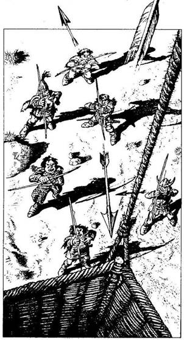
226.
Úgy érzed, mintha a léggömb szörnyű lassan kúszna az ég felé, és a kosárból lepillantva meglátod a hat Hobgoblint, amint épp kiszállnak a nyeregből, és rátok zúdítják nyilaikat. Dobj egy kockával, hogy meghatározd, hány nyílvessző talált el. Aztán minden egyes célba talált nyílhoz dobj még egyszer. Ha az eredmény 1-5, a nyíl ártalmatlanul hullik a kosárba. Ha 6-ot dobsz, a nyílvessző eltalál. Minden egyes találat következtében 2 Életerő pontot vesztesz. Ha még életben vagy - lapozz a 294-re.
227.
A Bosszúálló Szellem halálos pontossággal céloz. A tőr átjárja a szívedet, így a Csontok Őrzője elégtételt vett.
228.
Fölemeled a csapóajtót, és kardoddal készenlétben állva hátralépsz. Éktelen bömbölést hallasz, aztán hirtelen egy megtermett bestia ugrik be a csapóajtón keresztül a terembe. Lángvörös bundája van és macskaszerű alakja, valamint hosszú, éles karmai, fogai. A Pokolfenevad rád néz skarlátszínű szemével, melyet arra használ, hogy félelmet keltsen zsákmányában. Dobj egy kockával! Ha az eredmény 1-4 - lapozz a 251-re. Ha 5-öt vagy 6-ot dobsz - lapozz a 340-re.

229.
A nap hátralévő részében lassan keresztülgyalogoljátok a Nagy Síkságot, de nem leltek rá az alagutakra. Vesztesz 1 Szerencse pontot. Aznap éjjel a tábortűz körül nyomott a hangulat, és alig hangzik el egy szó is. Reggel megvitatjátok a helyzetet, és úgy határoztok, szavazásra bocsátjátok, merre menjetek. Dobj egy kockával Borri nevében. Ha az eredmény páros, arra szavaz, hogy észak felé menjetek. Ha az eredmény páratlan, arra szavaz, hogy dél felé. Ismételd ezt meg Symm-mel is. Most tied a döntő szavazat, hacsak nem szavaztak le máris azzal, hogy mindketten egy irányra voksoltak. Ha a csapat úgy dönt, hogy észak felé indultok el - lapozz a 176-ra. Ha úgy határoz, hogy dél felé folytatjátok az utat - lapozz a 17-re.

230.
Halálos agóniájában a Griff az ég felé röppen, majd néhány száz méterrel odébb kőként csapódik a földhöz. Nem látod a Barbár lányt fölkelni a földről, és arra gondolsz, ő is megsebesült, netán meghalt. Ha odalovagolsz hozzá, hogy megnézd - lapozz a 358-ra. Ha inkább folytatnád az utadat a tó felé - lapozz a 29-re.
231.
Rövid harcotok után Borri átveszi az őr szerepét, de te rosszul alszol. Reggel még mindig fáradtnak érzed magad, és jókedved egyáltalán nem hág magasra a sötétszürke ég láttán. A dombok felé indultok el, és röpke húsz perc alatt oda is értek. Ahogy egy kicsiny barlang bejáratához lépsz, észreveszel egy palástba öltözött alakot, aki követ. Ha megvárod az illetőt, akárki legyen is az - lapozz a 167-re. Ha inkább továbbhaladsz - lapozz a 313-ra.

232.
Elhárítod karját a kardoddal, és előrelendülsz, hogy megtámadd az Erdők Démonát.
Erdei Démon Ügyesség 9 Életerő 10
Ha legyőzted - lapozz a 89-re.

233.
Mihelyt kitalálsz a kriptából, földrengés hangját hallod, aztán apró kövek tömkelege és föld kezd a nyakadba hullani. Rádöbbensz, hogy az alagút kezd beomlani, így hát mentened kell az életedet. Ha jelenlegi Életerőd 6 vagy több - lapozz a 400-ra. Ha jelenlegi Életerőd kevesebb, mint 6 - lapozz az 58-ra.
234.
A nap további része gond nélkül telik, és már majdnem besötétedik, amikor feltűnik a távolban Kőhidafalva. Ha Kőhidafalván kívül akarsz letáborozni - lapozz a 92-re. Ha inkább belovagolsz a faluba - lapozz a 316-ra.
235.
Örülsz, hogy újra a szabadban vagy, és felpattansz lovad hátára, lenyargalsz a domboldalon, és követed a folyót végig a völgyben. Lapozz a 284-re.
236.
A verem szélén lépkedsz, de a széllökés ereje oly nagy, hogy képtelen vagy megtartani az egyensúlyodat. Lezuhansz a párkányról, bele a nyalkával teli verembe, ahol a Gargantis agyontapos.
237.
Belesel az erdőbe, de nem látsz senkit. Egyszer csak a hang újra megszólal: - Nem láthatsz engem, hisz láthatatlan vagyok. Egy Suma vagyok egy másik mágikus síkból. A veled szemben felsorakozott Káosz Erői hatalmasak, és kötelességemnek éreztem, hogy segítsek rajtad. Yaztromót
elrabolták Razaak szolgái, és kunyhójából az erdőbe vitték, hogy áldozatot mutassanak be vele. Lovagolj észak felé erről a helyről, be az erdőbe, és megmentheted. A kunyhóban csapda leselkedik rád. Ez minden, amit segítségképpen elmondhatok. Ezt leszámítva még egy alkalommal segíthetek rajtad, és ha szükséged van rám, kiáltsd: Suma 11! Ez az én számom. Viszlát és jó szerencsét. - Odakiáltasz a Sumának további felvilágosítás reményében, de már nem válaszol. Ha észak felé akarsz lovagolni, be az erdőbe - lapozz a 377-re. Ha inkább továbblovagolsz a kunyhó felé - lapozz a 68-ra.
238.
Bár nem láthatnak titeket, a három teremtménynek kiváló a szaglása, és szimatot fognak az alagúton végigfújó szélnek köszönhetően. Látod, hogy emberi testük van, de patkányfejük. Rövid szőr borítja őket, és hosszú patkányfarkuk nőtt. Úgy tesznek, mintha túlmennének a fülkén, de hirtelen rátok támadnak, mindegyik egy-egy ellenfelet választva magának.
Patkányember Ügyesség 5 Életerő 6
Csökkentsd a Támadóerődet 2 ponttal az első Fordulóban, mivel a Patkányemberé a kezdeményezés. Ha legyőzted - lapozz a 22-re.

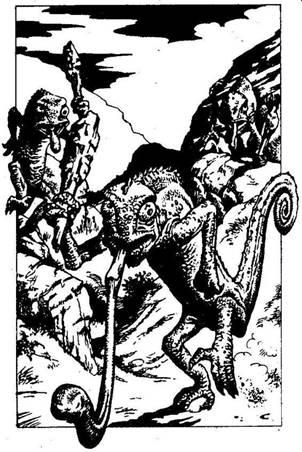
239.
A kőszínű Kaméleoniták két lábon járva haladnak előre különös, bicegő mozgással. Gülüszem és hosszú nyelv mered ki hüllőfejükből, testüket pikkelyek borítják. Ennek ellenére emberi alakjuk van, és mindegyik egy kőbunkót cipel, mellyel rád támadnak.
Ügyesség Életerő
Első Kaméleonita 7 7
Második Kaméleonita 6 6
Harmadik Kaméleonita 7 6
Egyszerre csak egy példánnyal küzdj. Ha még mindig lóháton vagy, adj 2 pontot a Támadóerődhöz minden egyes Fordulóban. Ha nyersz - lapozz a 356-ra.

240.
Koromsötét van az üreg belsejében, és nem tudod felmérni, milyen messze van az alja. Lefekszel a földre, és kardoddal benyúlva az üregbe, két méterrel lejjebb talajt érzel vele. Leereszkedsz, miközben Borri tanácsokat osztogat föntről. - Légy óvatos! Használd a kardodat, tapogasd ki vele a talajt magad előtt, ha nem látsz. Ne merészkedj túl messzire. Ne menj hallótávolságon kívülre. És
siess. - Rájössz, hogy az üreg kicsi és üres, eltekintve egy fémtárgytól, melyet a földön találsz. Képtelen vagy tapintással megállapítani, mi is az valójában. Ha magaddal akarod vinni a fémtárgyat, amikor kimászol az üregből - lapozz a 370-re. Ha inkább nélküle mászol ki - lapozz a 344-re.
241.
Le-föl lovagolsz a völgyben, keresed a domboldalban az Óriás barlangját. Fél óra múlva megtalálod a bejáratot egy bokor rejtekében. Kikötöd a lovadat, és vigyázva belépsz a barlangba... A Dombi Óriás nem élhetett itt egyedül. Két fáklya világít a durva kőfalhoz erősített tartókban, s így átkutathatod az Óriás barlangját. Egy halom szalma a háttérben az Óriás ágya lehetett, és látsz egy durva faasztalt is. Az asztal körül a földön egy halom emberi csont hever, és rosszat sejtesz. Az asztal mögött egy faláda áll, és egy fülkében valami fura üveggömbre lelsz, amelyben füst gomolyog. Mit teszel?
Kinyitod a ládát? Lapozz a 80-ra.
Összetöröd a gömböt? Lapozz a 367-re.
Nem nyúlsz a gömbhöz és kimész
a barlangból? Lapozz a 386-ra.
242.
Pillanatokon belül repülő rovarok lepnek el. Alig tudsz lélegezni, sőt még csak nem is látod, hogy berepülnek a szádba, és szétmarják az arcodat. Kétségbeesettén csapkodsz a kezeddel, de nem sokra mész vele. Újra és újra megcsípnek, míg végül holtan esel össze a földön. A szellemidéző győzedelmeskedett.
243.
Az Orkoknál 6 Aranytallér, egy kés, egy szütyőre való patkánykoponya, egy üres üveg és egy régi ingbe csomagolt, nyárson sült fél csirke van. Elteszed, amire szükséged van, és a csirkét mustrálod. Ha meg akarod enni - lapozz a 322-re. Ha inkább a dögevőkre hagyod, és folytatod utadat kelet felé - lapozz a 216-ra.
244.
Olyan csendben, amennyire csak lehetséges, beosonsz a fák árnyékába, oda, amerről a kiáltást hallottad. Symm egyszer csak odaszól, hogy belebotlott egy ember testébe. Odavonszolod az embert a tábortűz fényébe, és a testén mély vágásokat fedezel fel. Egy hosszú szakállú, cserzett arcú Öregember az illető. Bekötözöd a sebeit legjobb tudásod szerint, és egy korty Gyógyító Italt diktálsz belé. Nem tudod eldönteni, vajon ájult-e vagy csak alszik, de reggelig meg sem moccan. Nyögdécselve ébred fel, és nehézkesen szólal meg. - Köszönöm, hogy megmentettetek, idegenek. Szombat délután épp úton voltam egy barátom tornyába, és az erdőn vágtam át, amikor egy medve elragadott. Számítanom kellett volna ilyesmire, ha egyszer beteszem a lábam a Fekete Erdőbe. A nevem Budron. - Budron! - kiált fel Symm izgatottan. - Vártunk rád Yaztromóval. Micsoda szerencse, hogy rád találtunk! - Nyersz 1 Szerencse pontot. Budron közli, hogy talpra tud állni, és vállalkozik rá, hogy Symm mögött a nyeregben utazzon. Elhagyjátok a Fekete Erdőt, aztán északnyugat felé veszitek az irányt, mígnem valamikor délután Budron arra kér, hogy álljatok meg. - Ennél tovább nem megyek. A sírkert annak az erdőnek a közepén
található - mondja, ujjával észak felé mutatva. - Túlságosan is tartok a szellemektől ahhoz, hogy betegyem a lábam abba az erdőbe. Most búcsút veszek tőletek, és minden jót kívánok. - Nem tudod meggyőzni Budront, hogy maradjon veletek, hát figyeled, amint elbaktat, vissza az úton, amelyen jöttetek. Némi habozás után belovagoltok az erdőbe. Kisvártatva eléritek a tisztást, ahol megpillantjátok a sírkertet, melyet réges-rég nem használnak már. A sírkövek töröttek, moha borítja őket, a gaz, a növényzet magasra nőtt. Kivont karddal, óvatosan a legközelebbi sírkő felé mész. Ha viseled a csontgyűrűt, amelybe egy koponyát véstek - lapozz a 139-re. Ha nem viseled ezt a gyűrűt - lapozz a 333-ra.
245.
Most, hogy a Jégszellemek eltűntek az alagútból, minden újra csendes. - Nem hiszem, hogy sokan tudnák, hogy az Üvöltő Alagutak nevüket a bennük lakozó Jégszellemektől kapták - mondja Borri sokkal vidámabb hangon. - De azért remélem, nem jönnek vissza. Nézzétek, ott van még két Csontváz Harcos szobor, beljebb az alagútban! Ha át akarsz menni a szobrok között - lapozz az 56-ra. Ha ott akarsz maradni, ahol vagy, és megkéred Symmet, hogy keressen valamilyen titkos járatot - lapozz a 112-re.
246.
A Bosszúálló Szellem dobása majdnem halálos: a tőr a válladba fúródik, csak centiméterekre áll meg a szívedtől. Vesztesz 4 ÉLETERŐ pontot. Azonban oly gyorsan, hogy a palást felemelkedett, vissza is hullik a földre, és mozdulatlan marad. Ha
még nem tetted volna, felpróbálhatod a Holdgyűrűt - lapozz a 10-re, vagy a Koponyagyűrűt - lapozz a 265-re. De ha akarsz, kelet felé, kilovagolhatsz a megátkozott Csontok Völgyéből - lapozz a 369-re.
247.
Egy hirtelen jött szélroham elsodorja a léggömböt a réstől a fák közé, ahol Borri megpróbál leszállni. A kosár végigsiklik a fakoronákon, majd beléjük gabalyodik, és felborul. Kirepültök belőle, és vagy száz méter zuhanás után halálra zúzzátok magatokat.
248.
Végigsétálsz az alagúton, mely időtlen idők óta itt húzódik, mígnem átlépdelsz egy átlátszó falon, mely úgy pukkan szét, mint egy óriási szappanbuborék. Megfordulsz, hogy visszamenj, de képtelen vagy rá, mert egy láthatatlan fal állja utad. Többé nem az alagútban vagy, hanem egy fekete űrben. Szellemarcok tűnnek fel és tűnnek el hirtelen. Manók, Démonok és más ocsmány teremtmények gyülekeznek körülötted, aztán rádöbbensz, hogy egy Gonosz Varázs Térsík fogságába kerültél, melybe egy, a Razaak által kreált, Titánból kivezető dimenziókapun kerültél be. Végzeted utolért.

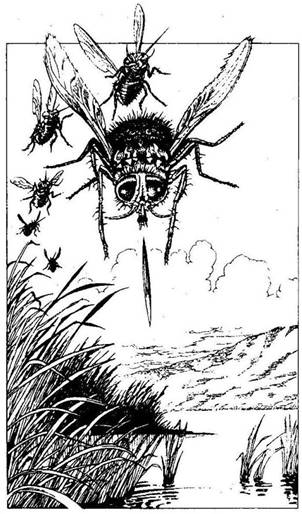
249.
Mozgást látsz magad előtt a magas, nedves fűben, és hirtelen hangos, zümmögő zajt hallasz. Hat hatalmas, tarka Szigonylégy emelkedik fel a levegőbe, akkorák, akár egy galamb. Bár úgy látod, mindnek egy-egy hosszúkás szívószerve van, ezek valójában mérgezett, éles tüskék, melyeket a Szigonylegyek ellenfeleikre lőnek ki. Egyszerre csak egy tűt tudnak növeszteni, és egy hétig is eltart, míg a kilőtt helyett új nő. A méreg megbénítja a Szigonylegyek ellenfeleit, és a nőstény példányok ezután lerakják petéiket a bőr alá, hogy a férgeknek elegendő hús álljon rendelkezésre a növekedéshez. Dobj egy kockával, hogy meghatározd, hány tű talál el. Ha egy vagy két tű sebesít meg - lapozz a 346-ra. Ha három vagy négy - lapozz a 388-ra. Ha öt vagy hat - lapozz a 13-ra.

250.
Átkutatod az őrhelyet, és találsz egy vadászkürtöt meg egy lámpást. Magadhoz veszed mindkét tárgyat, számszeríjjal és néhány nyílvesszővel egyetemben. A falu nincs messzebb háromszáz méternél, de sehol egy sírkert. Nem akarod kitenni magad annak, hogy Iszaposdon elfogjanak, ezért
nagy ívben körbelovagolod a falut, s visszatérsz az Őrhelyhez, de mégsem találod meg a sírkertet. Symm felsóhajt, és így szól: - Menjünk Kőhidafalva felé. - Észak felé veszitek az utat, amíg el nem éritek a Vörös Folyót. Miután átkeltetek rajta, kelet felé, Kőhidafalva irányába indultok. Az éj beálltával el is értek a településhez. Ha a falun kívül táboroztok le - lapozz a 92-re. Ha nem kutattok tovább a sírkert után, és belovagoltok Kőhidafalvára - lapozz a 316-ra.
251.
A félelemtől főidbe gyökerezik a lábad, és képtelen vagy megmozdulni. Tágra meredt szemmel nézed, amint a Pokolfenevad rád veti magát. Hátsó lábára állva torkodba mélyeszti hosszú agyarait. Razaak állatkája megpecsételte Allansia sorsát.
252.
A nap hátralévő része eseménytelenül telik, persze az Elveszett Tavat nem pillantod meg. Szürkületkor egy hatalmas helyet keresel, ahol éjszakára letáborozhatsz, és a lovadat kikötöd egy közeli fához. Lefekszel aludni, de az éjszaka közepén vonításra ébredsz. Telihold van, és karddal a kézben pillanatokon belül talpra szökkensz. Szíved gyorsan kalapál, ahogy a szemed mereszted és hegyezed a füled. Egyszer csak ág reccsenését hallod, majd egy mély hörgést. Valami árnyékot látsz mozogni, és ekkor a halovány fényben vastag, barna szőrzetéről, hosszú metszőfogáról, fenemód ijesztő külsejéről felismered a Farkasemberek egyik példányát. Ha ujjadon van a Holdgyűrű, és azt is tudod, hogyan kell használni - lapozz a
varázslatban szereplő számra. Ha nem tudod a számot, kardoddal kell megküzdened a Farkasemberrel.
Farkasember Ügyesség 8 Életerő 9
Ha legyőzted, de megsebzett a Farkasember - lapozz a 275-re. Ha nem sebzett meg a Farkasember - lapozz a 36-ra.

253.
A Hobgoblin épp csak elvéti a lábad, és nagyot puffanva a földre zuhan. Borri és Symm biztatása mellett feltornázod magad a kötélen, és bemászol a kosárba. Lapozz a 226-ra.
254.
Symmnek végre sikerült lesújtania a Majomemberre anélkül, hogy megsebesítene téged. Tőrét belemártja a Majomember nyakába, és az a szemed láttára esik össze egy torkából feltörő hörgéssel. Symm ezután levágja a bőrzsákot, és a belsejében fényesre csiszolt köveket talál, melyeket eltehetsz, ha akarsz, mielőtt folytatnád a lovaglást. Lapozz a 37-re.
255.
Belegázolsz lovaddal a folyóba, és hamarosan átérsz a túlpartra. Csakhamar eléred az első dombtetőt, és kelet felé kémlelve meglátod a végeláthatatlan dombvonulatokat. Ahogy kezdesz leereszkedni a fák között, megpillantasz egy apró fakunyhót. A teteje beomlott, és az életnek nincs látható jele. Ha be akarsz lépni a kunyhóba - lapozz a 332-re. Ha inkább ellovagolsz mellette - lapozz az 53-ra.
256.
Odalépsz ahhoz a Zombihoz, amelyik a talicskát rakja éppen. Nem hagyja abba a munkát, és úgy viselkedik, mintha nem is léteznél. Odamész a másik kettőhöz, akik a falat csákányozzák, és csakhamar észreveszed, hogy mindannyiuk karjára az 5-ös számot tetoválták. Jól megjegyzed a számot, mielőtt visszatérnél a barátaidhoz. Hamar eldöntőd: nincs mit tenni, mint visszagyalogolni az elágazáshoz. Lapozz a 338-ra.
257.
Nem sokkal éjfél után, miközben őrt állsz, halk szárnycsapkodást hallasz. A sötét árnyékok közül egy Vámpír Denevér csap le, hogy igyon a véredből.
Vámpír Denevér Ügyesség 5 Életerő 4
Ha legyőzöd - lapozz a 231-re.
258.
Az asszonyt hamarosan kiszabadítod, aki megköszöni, amit érte tettél. Kardodat azonban készen-
létben tartod, mert számos allansiai kalandor halt már meg óvatlansága miatt. Az asszony figyelmét nem kerüli el gyanakvásod, és megszólal: - A nevem Jella, és Fél-Elf vagyok, a Zengisi Covas mágus tanonca. Ő a hosszú élet specialistája, és ezért küldött engem ide a dombokra, hogy ritka növényeket keressek. Sajnos Goblinok lestek meg, és megtámadtak. Majdnem mindenemet magukkal vitték, de a legértékesebb tárgyamra rá se hederítettek, egy doboz gyógyító porra. - Figyeled, amint Jella kinyit egy apró dobozkát, és egy csipetnyit felajánl a barna porból. Ha akarsz nyelni a porból - lapozz a 48-ra. Ha inkább búcsút intesz az asszonynak és nekiindulsz az útnak - lapozz a 382-re.
259.
Egy tűzgolyó beléd csap, és fekete lyukat éget a lábadba. Felsikoltasz fájdalmadban, de Razaak egy újabb tűzgolyót is elereszt. Megint eltalál, viszont ezúttal az eredmény végzetes. Feladatodnak nem tudtál eleget tenni.
260.
A Démon erős karjával derékon ragad, miközben a késed után nyúlkálsz. Végre sikerül az övedből kirántani, és ész nélkül vagdalkozni kezdesz.
Erdei Démon Ügyesség 9 Életerő 10
Csökkentsd Ügyességed 2 ponttal e csata időtartamára a satuszerű szorítás miatt, melyben vergődsz. Ha győzöl, megkönnyebbülten felsóhajtasz, és felveszed a kardodat. Lapozz a 89-re.

261.
Hamarosan elérsz néhány erdő borította dombot, melyen akaratod ellenére is keresztül kell lovagolnod, hogy kelet felé folytasd az utat. Alig száz méterre a fák között, fölülről vérfagyasztó ordítást hallasz, majd hirtelen egy Ork ugrik le az ágak közül, és rád támad. Két társa kivont karddal rohan ki a fák mögül. Dobj egy kockával! Ha az eredmény 1-3: lapozza 120-ra. Ha az eredmény 4-6: lapozz a 62-re.
262.
Symm egy nyílásra lel a falban, mely éppen elég széles ahhoz, hogy át lehessen furakodni rajta. - Gyerünk, - bíztat - menjünk keresztül itt. Fényt látok. Ha követed Symmet a nyíláson keresztül - lapozz a 347-re. Ha inkább egy másik járat után kutatnál a hasadék aljában - lapozz a 61-re.
263.
A láthatatlan ember képzett íjász. A sötétség ellenére is pontosan célba talál. Ez az alkalom sem kivétel, és a nyílvessző átfúródik a nyakadon. Holtan terülsz el.
264.
Az alagút kisvártatva egy T elágazásban ér véget. Ha balra akarsz menni - lapozz a 156-ra. Ha jobbra akarsz menni - lapozz a 199-re.
265.
Felhúzod a gyűrűt az ujjadra, és varázserőt próbálsz előcsalni belőle. Nem történik semmi. Ha még nem tetted volna, kipróbálhatod a Holdgyűrűt
- lapozz a 10-re, vagy felhúzhatod a Tőrgyűrűt - lapozz a 94-re. Ha viszont inkább kelet felé kilovagolsz a Csontok Völgyéből - lapozz a 369-re.
266.
Borri a következő öt percet azzal tölti, hogy magában morogva a Trollokat az összes eszébe jutó rondasággal illeti. - Hogy képes valaki ilyesmire? - kiált fel hirtelen. - Tudtatok, hogy egy Troll Allansiában, a Hobbitfül-evő versenyen száztizenkilenc füllel döntötte meg a rekordot? A Trollok mindent megtesznek a hírnévért! Na gyerünk! - Borri váratlanul elindul, miközben a könyvet a háta mögé hajítja. Te és Symm utánasiettek, és Symm megkérdezi Borritól, vajon ő-e a legalacsonyabb Törpe Allansiában. - Törődj a magad dolgával! - fakad ki Borri, s továbbmentek előre. Lapozz a 40-re.
267.
A hatalmas súly, meg a Hobgoblin fájdalmas harapásainak és karmolásának következtében elereszted a kötelet. A földre zuhansz, ahol rád veti magát a többi Hobgoblin is. Hamar utolér a halál, és a nálad lévő dolgokon megosztoznak támadóid. A felemelkedő léggömbről Borri és Symm tehetetlenül bámulnak lefelé, és ők tudják egyedül, hogy Allansia sorsa haláloddal és Razaak kardjának elvesztésével megpecsételődött.
268.
A tekercs a legendás Gargantis bestiáról és annak csodálatos szarváról szól. Bár nincs mindent elsöprő bizonyíték arra vonatkozóan, hogy a teremtmény létezik, évszázadok óta keringenek róla
a mondák. Úgy mesélik, dudoros, zöld bőre van, és úgy néz ki, mintha a Bugyorlakó ördög és a Hús-Vér Gólem keveréke lenne, ráadásul a homloka közepéből egy szarv mered elő. A Gargantis szarva, úgy beszélik, számos varázs- és misztikus erővel rendelkezik, mely akkor is megmarad, ha eltávolítják a szarvat a Gargantis fejéről. Akinek a kezébe akad ez a szarv, meglóbálhatja, és rendelkezni fog ezen erőkkel. Már hallottál erről a bestiáról, de meglepődsz annak olvastán, hogy egy ilyen teremtmény a Nyugati Nagy Síkság üvöltő Alagútjaiban szeret tanyázni. Talán az a kalandor, akié ez a tekercs volt, a Nagy Síkság felé igyekezett, amikor idő előtt meghalt az erdőben. Elteszed a tekercset a hátizsákodba, és azon töröd a fejed, mitévő légy. Ha még nem tetted volna, megvizsgálhatod a pálcát - lapozz a 360-ra, vagy felpróbálhatod a sisakot - lapozza 111-re. Ha inkább visszamész a lovadhoz - lapozz a 221-re.
269.
Követitek a vérnyomot az alagút kanyarulatában, míg el nem éritek egy sötét verem szélét. Fáklyáitok fénye nem tudja bevilágítani a verem alját, de kétségtelen, hogy valami lenn tartózkodik és csontokat rág. A láthatatlan lény megérzi a jelenléteteket, és mély, undorító hörgést hallat. - Valószínűleg a Gargantis lesz az - suttogja Borri. - Van nálam egy kötél, ha valamelyikőtök le akar mászni. Túl kövér vagyok, hogy magam menjek. - Symm fagyos pillantást vet a Törpére. - Le kellene téged hajítanom oda, hogy elvond a figyelmét; amíg leszállunk! - Csak vicceltem - nevet Borri idegesen. Úgy véled, közbe kell szólnod, és azt mondod, ha az ott maga a Gargantis, akkor a vermet nyilván
alulról is meg lehet közelíteni, hiszen nem ugorhatott le csak úgy oda. De kinek a felügyelete alá tartozik ez az alagútrendszer? A Gargantis lenne az, vagy egy másik lény, amely fogságban tartja a bestiát? Senki nem tudja a választ. - Nos, mit tegyünk? - kérdezi Borri. Ha vállalkozol rá, hogy leereszkedsz a verembe a kötélen - lapozz a 117-re. Ha inkább visszagyalogolnál a főalagútba, balra fordulnál, és az elágazáshoz mennél - lapozz a 222-re.
270.
A hatalmas ember hűvös hangon azt mondja: - A Káosz összes szolgája Allansia ellensége. - Egy pillanatig hallod a nyílvessző suhogását, majd a nyakadba fúródik, és kioltja az életedet.
271.
Fehér fény villan, amint egy cikázó villára elhagyja Razaak ujjhegyét. Ahelyett azonban, hogy megölne, a pajzsodba csapódik. Razaak torz arcán az aggodalom jeleit látod. Egy pillanatig habozik, te pedig kihasználod az alkalmat, és kardoddal rohansz rá. A kardcsapásokra fittyet hányva csak arra törekszik, hogy ujjaival megérintsen.
Razaak Ügyesség 12 Életerő 20
Ha Razaak a csata során bármikor megnyer két egymást követő Fordulót - lapozz a 14-re. Ha viszont úgy győzöd le, hogy nem vesztesz el két egymást követő Fordulót - lapozz a 84-re.
272.
Pillanatok alatt kivet a veríték, és láz emészti a testedet. Gyengének érzed magad, és kénytelen vagy lefeküdni a földre. Remegni kezdesz. A megpróbáltatás egy óráig tart, és rettenetesen legyengít. Vesztesz 1 Ügyesség és 4 Életerő pontot. De legalább az vigasztal, hogy képes vagy álcázni magad. Jókedvűen kelet felé irányítod a lovadat. Lapozz a 180-ra.
273.
Nemsokára az erdő szélén jársz, de nem látsz be messzire a fák közé. Mit teszel?
Belépsz az erdőbe? Lapozz a 215-re.
Nyugat felé lovagolsz, Iszaposd
irányába? Lapozz a 63-ra.
Északkelet felé lovagolsz, Kőhidafalva
irányába? Lapozz a 363-ra.
274.
Körülnézel, és egy fülkére lelsz az árnyék rejtekében. Ha elrejtőztök a fülkében - lapozz a 238-ra. Ha szembeszállsz vele, bárki közelit is felétek - lapozz a 2-re.
275.
Az a szerencsétlen ember, aki farkaskórsággal fertőződik meg, arra kárhoztatik, hogy teliholdnál dühödt Farkasemberré változzon. Bárki, akit egy Farkasember megharap, kénytelen önmaga is Farkasemberré változni. Ha viseled a Józan Ész Kristályát, immúnis vagy a kór ellen - lapozz a 36-ra. Ellenkező esetben, ha van gyertyád - lapozz a 91-re. Ha sem kristályod, sem gyertyád nincs - lapozz a 317-re.
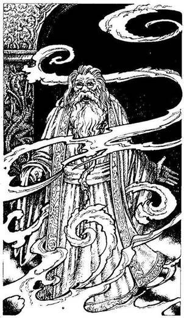
276.
Az alak lassan feléd lép, és a ködön keresztül meglátod, hogy ő nem más, mint régi barátod, a nagy mágus: Yaztromo. - Üdvözöllek - szólal meg barátságos hangon. - Nem számítottál rá, hogy itt találsz, ugye? Ha viselsz egy aranygyűrűt, melynek foglalatában egy szivárványszínű kő van - lapozz a 326-ra. Ha nem viselsz ilyen gyűrűt - lapozz a 164-re.
277.
A lovas megállítja a karavánt, és egy szekeret küld, hogy Borrit és a léggömböt felvegye. Most már mindhárman újra együtt vagytok, és a Nagy Síkság felé utaztok. Borri kicsomagol egy kis rongyot, melyben lé-dús, vörös bogyók vannak, és megkínál vele. Symm rémülten néz rá, és felkiált: - Ne edd meg! Bolondbogyó az, és biztos, hogy a teljes őrületbe visz! - Kikapja a bogyókat Borri kezéből, és jó messzire elhajítja őket. - Azt hittem, valami helyi finomság - mondja Borri megrökönyödve. - Jó, hogy nem ettem belőle korábban. - Az órák egyre telnek, és azon tanakodtok, vajon megtaláljátok-e az Üvöltő Alagutakat. Egy kisfiú, aki veletek utazik a szekéren, az út során most először megszólal: - Tudom, merre vannak alagutak. Adjatok valami ajándékot, és megmondom, ha odaérünk. - Mivel nincs semmi vesztenivalód (eltekintve tulajdonaid egyikétől), egyetértesz, és megint felcsillan a remény sugara. Késő délutánig halad a karaván a Nagy Síkságon keresztül, amikor a fiú felül a szekéren, és egy távoli dombocska felé mutat. - Ott van! Ott van az Alagút! - Megkéred a kocsist, hogy álljon meg, és két perc múltán már mindhárman magatokra maradtok, s figyelitek a
karavánt, ahogy eltűnik a porfelhőben. Sikerül a léggömböc és a kosarát a dombig vonszolni, és örömmel kiáltasz fel, amikor meglátsz egy alagútbejáratot. - Nem hallok semmit - mondja Borri. - Úgy tudtam, ezekről az alagutakról azt tartják, hogy üvöltenek. - Várjunk, amíg legalább bekerülünk, te türelmetlen félnótás - nevet Symm. - Talán te magad fogsz üvölteni, amikor megpillantod a Gargantist! Miután elrejtitek a léggömböt a bejáratnál, előhúzzátok kardjaitokat, meggyújtjátok a magatokkal hozott fáklyákat, és elővigyázatosan bementek az alagútba. Öt perc múlva egy elágazáshoz értek. Ha balra akarsz fordulni - lapozz a 222-re. Ha jobbra akarsz fordulni - lapozz a 90-re.
278.
Amint a Démonivadék a földre zuhan, teste elkezd zsugorodni, sisteregni, gőzölögni, míg végül csak egy bűzös nyáltócsa marad belőle. Végigfut a hideg a gerinceden, amíg Yaztromóhoz lépsz és kioldozod. - Bravó - mondja mosolyogva a vén mágus. - Varázslatom nem működik e pokolból jött teremtmény ellen. Vagy kezdem elveszteni az erőmet, vagy Razaaknak nagyobb hatalma van, mint gondoltam. Ne is foglalkozz vele, nem szabad meghátrálnunk a feladatunk elől. Most pedig mondd el nekem, hogy találtad meg az Elveszett Tavat, és kit tisztelhetek a barátodban? - Mesélsz Yaztromónak az utazásodról, s arról, hogyan találkoztál Symm-mel. Yaztromo elégedettnek látszik, és így válaszol: - Nos, néhány dolgot megtudtam a mi Razaak barátunkról. A legfélelmetesebb ellenfél lesz számodra... ha egyáltalán túljutsz az őt védő talpnyalók hadán. Nem egyszerűen a saját kardjával kell megölni öt, hanem keresztül kell döfni a
szívén a Gargantis szarvát is. A legenda szerint a Gargantis egy ritka, föld alatt élő teremtmény, de halvány fogalmam sincs róla, vajon valóban él-e. Gyakorlatilag ellenáll minden fegyvernek, így varázslatot kell alkalmaznod, hogy le lehessen nyisszantani a szarvát. Csak így pusztul el. Most pedig hagyjuk itt ezt a szörnyű erdőt, és menjünk vissza a toronyba, ahol egy barátomnak már várnia kell ránk. Nemsokára visszajuttok a toronyba, de ott nincs senki, aki köszöntene. - Különös - morog Yaztromo a szemöldökét ráncolva. - Budronnak már itt kéne lennie. Remélem, nem esett bántódása. Ö tudja, merre van a kísértetlakta sírkert, s ez fontos. Segíthet, ha elolvasod Razaak apjának, Tamalnak a sírjára írt szöveget. Szerintem a sírkertnek valahol Iszaposd és Kőhidafalva között kell lennie, de ebben nem vagyok biztos. Felajánlja, hogy válassz: vagy maradj itt egész éjszakára, hátha Budron beállít reggelig - lapozz a 341-re, vagy azonnal indulj tovább - lapozz a 157-re.
279.
Ott találjátok a léggömböt és a kosarat, ahol elrejtettétek őket, és az alagút bejáratából előhúzva mindkettőt lecipelitek a domboldalon. - Nagy tüzet kell raknunk, hogy a léggömböt megtölthessük meleg levegővel - közli Borri ellentmondást nem tűrő hangon. - Kiterítem a léggömböt, amíg ti ketten fát gyűjtőtök. Csaknem három óra hosszat tart, amíg elegendő fát találtok ezen a kietlen síkságon, hogy megfelelő tüzet rakhassatok, de végre készen vagytok. Borri kiemel egy fémcsövet a kosárból, a léggömb szájához illeszti, és a másik végét a tűz fölé tolja. A léggömb hamarosan megtelik meleg levegővel, s már majdnem nyílegyenesen
áll, amikor porfelhőt látsz a távoli látóhatáron. - Lovak közelednek - szólal meg nyugodtan Symm. - Remélem nagyjából készen vagy, Borri. - A lovak kis idő múlva láthatóvá válnak, s kiderül, hogy hatan vannak, mindegyik hátán egy-egy Hobgoblin ül. Borri utasít, hogy oldozd el a kötelet, amellyel a léggömböt egy farönkhöz erősítettétek, aztán a gömb felkúszik a magasba. De a kötélen lévő bogot csak nehezen tudjátok kibogozni, és értékes másodpercek telnek el, míg úgy döntesz, hogy a kardoddal vágod át. A kötél felránt, de közben az egyik Hobgoblin alád lovagol, felnyúl a nyeregből, és megragadja a lábadat. Dobj két kockával! Ha az összeg ugyanannyi vagy kevesebb, mint az Ügyességed - lapozz a 253-ra. Ha az összeg nagyobb, mint Ügyességed - lapozz a 331-re.
280.
A következő völgyben egy kisebbfajta erdőbe érsz, melyben tömérdek virág és növény terem, de egyik rondább, mint a másik. Van köztük olyan, amelyik betegséget terjeszt, van, amelyiket tüskék borítanak és van, amelyik iszonyatos bűzt áraszt. Az összesét benőtték a kúszónövények. Annak ellenére, hogy senkit sem látsz, hirtelen magas, csicsergő hangot hallasz. Kivont karddal elindulsz a hang irányába. Egy bokor megmozdul, és egy apró, fekete alakot pillantasz meg, mely aztán besurran az aljnövényzetbe. Ha követni akarod az alakot - lapozz a 18-ra. Ha inkább átlovagolsz a tisztáson, amilyen gyorsan csak lehet - lapozz a 73-ra.
281.
Nem veszel észre magad előtt egy apró követ. Tedd próbára a Szerencsédet! Ha szerencséd van - lapozz a 392-re. Ha nincs szerencséd - lapozz a 320-ra.
282.
A Dombi Óriás összes vagyona egy réz karkötő és 1 Aranytallér. Arra gondolsz, hogy az Óriás barlangja nem lehet túl messze, ha azt állította, hogy az övé a völgy. Ha felpróbálod a karkötőt - lapozz a 182-re. Ha megkeresed az Óriás barlangját, miután elraktad a hátizsákodba az Aranyat és a karkötőt - lapozz a 241-re. Ha nyugat felé végig lovagolsz a völgyön, miután elraktad mindkét talált tárgyat a hátizsákodban - lapozz a 67-re.
283.
Csikorgó hangot hallasz, és a hatalmas szék lassan visszacsúszik a fal egy megnyíló részén. A székhez rögzítő vaspántok elengednek, és egy nagy szobában találod magad. A szék eltűnik az alagútban, és most már csak egyetlen kivezető út van: a szemközti ajtó. Felirat áll rajta: Zárd be az ajtót, mielőtt kinyitnád! - Nem érted ezt a megjegyzést. A kilincshez nyúlsz, és úgy találod, az ajtó nincs bezárva. Mindazonáltal, ha van nálad egy kulcs, és a felirat szerint próbálsz cselekedni - lapozz a 189-re. Ha nincs nálad kulcs, vagy nem áll szándékodban használni - lapozz a 334-re.
284.
Egy órával később úgy döntesz, hogy túl messzire távolodtál el észak felé, s ha valaha is el akarod érni az Elveszett Tavat, kelet felé kell haladnod.

Egy megfelelő ponton a folyótól kelet felé kanyarodsz, és beveszed magad a dombok közé. Kis idő múlva bal felé nézel, és látod, hogy vékony füstcsík tör az ég felé a legközelebbi domb másik oldaláról. Ha odamész, és megnézed, mi okozza a füstöt - lapozz a 33-ra. Ha inkább folytatod a lovaglást - lapozz a 261-re.
285.
Ó, de kár! A kőnek nincs semmilyen gyógyító ereje. Lapozz a 357-re.
286.
Egy nyílt mezőn vágsz át, és egy kövekből épült kor alakú őrhelyet látsz magad előtt. Két Törpe bújik elő az épületből, mindkettő kezében számszeríj. Megvetően közlik, hogy fordulj vissza, vagy számolj a következményekkel. Ha úgy döntesz, hogy megfordulsz, és Kőhidafalva irányába lovagolsz - lapozz a 21-re. Ha inkább megvívsz a Törpékkel - lapozz a 71-re.
287.
Egy bőrkesztyűre lelsz a Csontok Őrzőjének nyakában. Három, fényesre csiszolt csontgyűrű van benne. Az egyikbe egy teliholdat, a másikba egy tőrt, a harmadikba pedig egy koponyát véstek. Mit teszel?
Felpróbálod a Holdgyűrűt? Lapozz a 10-re.
Felpróbálod a Tőrgyűrűt? Lapozz a 94-re.
Felpróbálod a Koponyagyűrűt? Lapozz a 265-re.
Ha itt hagyod a gyűrűket, és kelet felé kilovagolsz a Csontok Völgyéből - lapozz a 369-re.
288.
Borri és Symm hamar magához tér a Pokolfenevad legyőzése után, és elmondja, milyen szörnyű érzés volt a csatát úgy végignézni, hogy egyik tagjukat sem tudták mozdítani. - Valóban örülök, hogy győztél - mondja Borri. - Nem lett volna valami nagy kedvem dörzskoptatófának odaállni az elé a nagy macska elé. - Symm ez egyszer nevetni kezd Borri megjegyzésén, bár ez inkább saját elégedettségét fejezi ki, és nem Borri humorának szól. - Nos, elkövettük azt a hibát, hogy felnyitottuk azt a csapóajtót, de nincs más hátra, nézzünk be a Pokolfenevad üregébe - folytatja Borri. - Mi a véleményetek? Ha be akarsz lesni az üregbe - lapozz a 240-re. Ha inkább a szemközti szűk járatban mennél tovább - lapozz a 177-re.
289.
A Kentaur nyakában egy bronztalizmán függ, melynek Szarvas Démon alakja van. Ha a nyakadba akasztod - lapozz a 75-re. Ha inkább a talizmán nélkül nyargalsz tovább - lapozz a 304-re.
290.
Symm olyan ügyesen bánik a kardjával, mint te, és minden különösebb nehézség nélkül legyőzi a három Csontvázat. Elkezded ledörzsölni a mohát a sírkövekről, hogy elolvashasd a feliratokat, és a harmadikon eléd is tárul, amit keresel: Tamal sírfeliratát látod. Ősi nyelven így hangzik:
Bár itt nyugszom, még nem végeztem,
A sötét erő tovább él, a fiam a lelkem.
Tamal. Meghalt ezen a világon, 108 éves korában.
Agyadba vésed a sírfeliratot, mialatt Symm a többi nyitott sírt tanulmányozza. Váratlanul felkiáltva közli feléd, hogy talált egy, a földből kiálló ezüstpálcát. Odamész, hogy magad is szemügyre vedd. Ha kihúzod a sírból - lapozz a 389-re. Ha viszont azonnal itthagyod a sírkertet, és északkelet felé ellovagolsz Kőhidafalvára - lapozz a 234-re.
291.
- A kívülállók életükkel fizetnek a behatolásért - sziszegi Ungoth. Most, hogy valódi lényed lelepleződött, leveted palástod, és kardot rántasz. - Lapozz a 223-ra.
292.
Újra fellovagolsz a dombtetőre, aztán leereszkedsz a túloldalon. A domb aljában, észak felé egy kicsiny erdőt pillantasz meg a völgy végében. Ha az erdő felé lovagolsz - lapozz a 203-ra. Ha inkább fellovagolsz a következő dombra - lapozz a 280-ra.
293.
Egy hirtelen szélroham elfújja a léggömböt a fák között lévő lyuktól, ahol Borri le akart szállni. A kosár végigszánt a lombkoronákon, belegabalyodik az ágakba, majd hirtelen megáll, és bizonytalanul lóg az ágak közt, úgy harminc méterre a földtől. Kimászol a kosárból, és lassan kezdesz lemászni a fáról; egyszer csak megreccsen egy ág a lábad alatt. Tedd próbára a Szerencsédet! Ha szerencséd van - lapozz a 225-re. Ha nincs szerencséd - lapozz a 4-re.
294.
A léggömb felkúszik az égbe, és kikerül a nyílvesszők hatósugarából. - Hát ez bizony meredek volt - morog Borri. - De itt legalább már biztonságban vagyunk. Reméljük, hogy a szelek északnyugat felé fognak hajtani bennünket. - Mivel fáradtnak érzed magad, leülsz a kosárban, és úgy döntesz, alszol egy keveset. Borri azonban afeletti örömében, hogy visszakerült szeretett léggömbjébe, igen beszédessé válik, és nem hagy aludni. - Szörnyű, hogy milyen sokba kerül manapság minden - kezdi. - Tudod te, mennyit kóstál egy jóféle harci pöröly még egy olyan tolvaj városban is, mint Feketehomok kikötő? Ha folytatni kívánod a beszélgetést - lapozz a 198-ra. Ha inkább megkéred, maradjon csendben, hogy aludni tudj - lapozz a 49-re.
295.
Kifeszíted a rekeszt a kardoddal, és két páncélöltözéket találsz benne, de egyetlen sisakot sem. Mit teszel?
Fölpróbálod a páncélruhát? Lapozz a 380-ra.
Fölpróbálod a láncinget? Lapozz a 328-ra.
Otthagyod mindkettőt, és visszamész a
lovadhoz? Lapozz a 235-re.

296.
A teremtmény egyenesen a fejedre esik, és azonnal nekifog a táplálkozásnak. Persze nem a húsodat rágja, hanem páncélod fémjét. Vesztesz 1 Ügyesség pontot. Mintha egy óriási amőba szorongatna, megpróbálod lerázni a Vasevőt.
Vasevő Ügyesség 4 Életerő 5
Minden egyes Forduló után, melyet elveszítesz, vonj le magadtól egy Ügyesség pontot. Amint megnyersz egy Fordulót, sikerül ledobnod magadról a Vasevőt a földre, így képes vagy folytatni az utat az alagútban. Lapozz a 151-re.
297.
Harminc méterrel arrébb az alagút egy másik terembe nyílik. A földet koponyák borítják, mindegyik úgy néz ki, mintha valami tompa tárggyal zúzták volna be. A terem egyik végében egy nagy vasajtót látsz, melyet jól elreteszeltek. Amint közelebb mész hozzá, halk dörömbölést hallasz az ajtón. A terem másik végében egy boltíves átjáró található, melyet Démon- és Kígyószobrokból álló gyűrű övez. Ha kireteszeled az ajtót - lapozz a 115-re. Ha inkább a boltív alatt mész át egy tátongó alagútba - lapozz a 264-re.
298.
Kizuhansz a nyeregből, és nagyot esel a földön. Tedd próbára a Szerencsédet! Ha szerencséd van - lapozz a 107-re. Ha nincs szerencséd - lapozz a 218-ra.
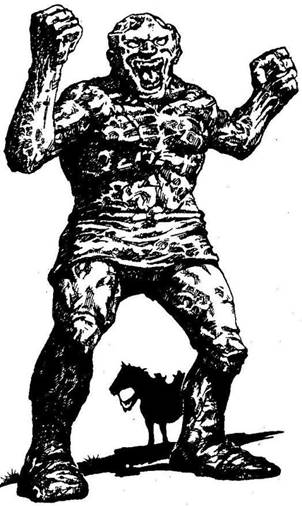
299.
Hozzáérsz az agyagbabához, és mágikus reakciót váltasz ki. A baba növekedni kezd, és hamarosan föléd tornyosul. Az agyag lágynak és képlékenynek tűnik, mintha épp most ásták volna ki a talajból. A behemót szörny esetlenül lép feléd, bunkószerű ökleit támadásra emelve. Az Agyaggólem közted és a lovad között áll, így nincs más választásod, meg kell küzdened vele.
Agyaggólem Ügyesség 8 Életerő 9
Kardod igen gyenge fegyver az Agyaggólemmel szemben. Minden egyes Forduló után dobj egy kockával! Ha bármikor egyet dobsz - lapozz a 393-ra. Ha az eredmény 2-6, folytasd a harcot. Ha legyőzted - lapozz a 362-re.
300.
Az asszony kacaját elfújja a szél, és minden újra megnyugszik. Megvizsgálod a pálcát, mely körülbelül fél méter hosszú, egyik végén csavarmenettel, a másikon pedig egy tömör golyóval, melyre a 13-as számot nyomták. Amikor szétcsavarod a golyót, egy összetekert papírt találsz benne. A papíron ez áll: - Ha tudni akarod, hogyan használj, rakj össze két fél darabomból! - Ha nálad van a pálca másik fele, és tudod azok összegét, lapozz arra a fejezetpontra. Ha nincs nálad a másik darab, más választásod nem lévén, magaddal viszed a fél pálcát, és északkelet felé Kőhidafalvára lovagolsz. Lapozz a 234-re.
301.
Amikor elájulsz, Symmnek eszébe jutnak a kövek, melyeket találtál. Ő tudja, hogy bizonyos, Allansiában található kövek képesek meggyógyítani az elfagyott testet. Ezeket a köveket azóta használják, amióta többen megdermedtek egy Jégszellem érintésétől. Megvizsgálja a köveket, és az egyikről el tudja képzelni a dolgot. A homlokodra helyezi, leül és vár. Tedd próbára a Szerencsédet! Ha szerencséd van - lapozz a 12-re. Ha nincs szerencséd - lapozz a 285-re.
302.
Körbelovagolod az irtást, és megkönnyebbülten veszed észre, hogy végre ritkulni kezdenek a fák, és hamarosan kiérsz az erdőből. Lapozz a 194-re.
303.
Milyen ostoba vagy, hogy azt hiszed, túljárhatsz az eszemen - sziszegi Ungoth. - Az idegenek az életükkel fizetnek, ha behatolnak ide! - Most, hogy valódi lényed lelepleződött, leveted a palástodat, és kardot rántasz. Lapozz a 223-ra.
304.
Visszautad a dombokon keresztül a következő órában eseménytelenül telik, mígnem egy nő kiáltását hallod meg a közelből, dél felől, egy fákkal benőtt bucka irányából. Ha odalovagolsz a buckához - lapozz a 127-re. Ha inkább nyugat felé folytatod a lovaglást - lapozz a 382-re.
305.
Amikor megpróbálod lesöpörni a tarantulát a csuklódról, az mélyen beléd mar, és belédlöveli halálos mérgét. Vesztesz 4 Életerő pontot. Symm azonnal a segítségedre siet, hisz kígyómarást már kezelt. Apró sebet ejt késével, hogy kicsorgassa a mérget. Bár rosszul érzed magad, sikerül megmentenie az életedet. Borri ajánlkozik, hogy felborítja a talicskát, amíg arra vár, hogy magadhoz térj. Ha azt akarod, hogy felborítsa - lapozz a 366-ra. Ha inkább továbbmész, és otthagyod a taligát - lapozz a 40-re.
306.
Levakarod a mohát, és egy versikét találsz alatta:
„A gránitajtón általmégy,
Csak nyomod a számot: egy, nyolc, négy!”
Megjegyzed a sorokat, visszaülsz a lovadra, és távozol. Lapozz a 324-re.
307.
Szemed tágra mered, és az őrület kifejezése ül ki arcodra. Vadul üvöltesz, és habzani kezd a szád. Kardodat markolva Symm és Borri ellen fordulsz, akikre hasonlóképpen hatott a mentális támadás. Eszeteket vesztve mindannyiótokat elönt a vérszomj, és a verem szélén kardélre hányjátok egymást. Előbb Borri esik el, majd Symm. Ügyet sem vetsz a lábadon lévő két mély sebből csordogáló vérre, és beugrasz a verembe, hogy megtámadd a Gargantist. Karmokkal felfegyverzett kezének egyetlen suhintása gyorsan véget vet próbálkozásodnak s egyben életednek.
308.
A láthatatlan ember barátságosan szól hozzád. - Ha Jóságos vagy, ahogy állítod, szállj le a lovadról, szúrd a kardodat a földbe, aztán jer ide, együtt esszük meg vacsorára a sült kacsát. Ha megbízol az illetőben, és beleegyezel abba, amit ajánl - lapozz a 103-ra. Ha inkább megsarkantyúzod a lovadat - lapozz a 354-re.
309.
Bepillantasz az elsötétített szobába, ahonnan a Lávadémonok kirepültek, de nem látsz semmit. Ha be akarsz menni a helyiségbe - lapozz az 51-re. Ha inkább a boltív alatt mész át, a mögötte lévő alagútba - lapozz a 264-re.
310.
A barlangban koromsötét van, és kardoddal a talajt tapogatod magad előtt, nehogy bezuhanj egy nem várt verembe. Egyszer csak a fegyvered egy tömör tárgyba ütközik, melynek olyan hangja van, mintha fémből volna. Kezeddel egy pántokkal a földhöz erősített fémdobozt tapintasz ki. Ha megpróbálod fölemelni a tetejét - lapozz a 45-re. Ha inkább visszasétálnál a lovadhoz - lapozz a 235-re.
311.
Kezedben a pálcával magad elé képzeled a nyulat, melynek földbe gyökerezett a lába. Valamerre, több száz mérföldnyire a nyúl szökken egyet, és elszalad a fűben, anélkül hogy tudatában lett volna dermedt állapotának. Lélegzet-visszafojtva a Gargantisra irányítod a pálcát, miközben egy karmos kéz feléd nyúl, hogy megragadjon. Legnagyobb megkönnyebbülésedre a kéz centiméterekkel az arcodtól hirtelen megáll. A Gargantis
megbénult; Borri és Symm ujjongásban törnek ki. Hagyod az izgága Borrit, hogy fogai között egy kést szorítva felmásszon a bestia dermedt testén. Symm lovaglóülésben helyezkedik el a Gargantis vállán, és lassan lemetszi a fenevad fehér szarvát. Bal kézzel szorítva győzelemittasan lengeti meg a levegőben. Aztán leugrik, és mosolyogva átnyújtja a legendás szarvat. Megcsodálod a szarv kivételes szépségét, majd az övedre erősíted. - Menjünk! - szólalsz meg, és két barátodat végigvezeted az alagúton. A Csontvázszobrok között elhaladva már nem tűnnek fel a Jégszellemek, és sietve továbbálltok. Tedd próbára a Szerencsédet! Ha szerencséd van - lapozz az 54-re. Ha nincs szerencséd - lapozz a 138-ra.
312.
A patkány belemélyeszti tűhegyes fogait a lábadba. Vesztesz 1 Életerő pontot. Nem törődsz túlzottan a sebbel, inkább az aggaszt, hogy a patkány esetleg valami végzetes ragályt hordoz magában. Dühödten taposod el az állatot arra gondolva, hogy egy ilyen kis teremtmény képes talán Allansia vesztét okozni. Tedd próbára a Szerencsédet! Ha szerencséd van - lapozza 348-ra. Ha nincs szerencséd - lapozz a 161-re.
313.
Körülbelül fél óra múlva harcos csatakiáltást hallasz a dombtető mögül, valamint fém csattogását. Ha utánajársz a dolognak - lapozz a 7-re. Ha inkább továbbindulsz - lapozz a 162-re.
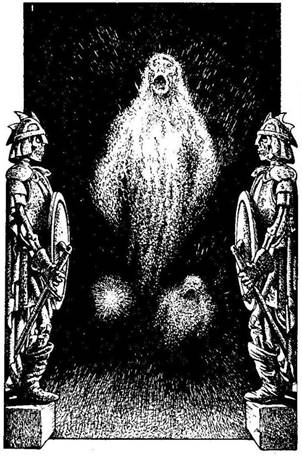
314.
Habár a tőr eltalált, a dobás nem volt igazán pontos. Csupán a vállad sérült meg. Vesztesz 2 Életerő pontot. A palást viszont amilyen gyorsan fölemelkedett, olyan gyorsan vissza is hullik a földre, és ott is marad. Ha még nem tetted volna, felpróbálhatod a Holdgyűrűt - lapozz a 10-re, vagy a Koponyagyűrűt - lapozz a 265-re. De ellovagolhatsz kelet felé is, ki, az elátkozott Csontok Völgyéből - lapozz a 369-re.
315.
Két Csontváz Harcos szobra között vezet el utatok, ahol hideg szél csap az arcodba. A szél csakhamar tombolni kezd körülötted. - Azt hiszem, jó helyen járunk-jegyzi meg Borri minden eddiginél komolyabb hangon. Kisvártatva észreveszed, az alagút végében mintha valami fehéren izzana. Egyre növekszik, és sebesen közeledik felétek. Amikor már elég közel ér hozzátok, észreveszed, hogy az egy áttetsző testű, halott ábrázatú lány. Száját kitátva, vérfagyasztó hangot hallat. - Egy Jégszellem! - kiált fel Symm, túlharsogva a sikolyt. - Ne hagyjátok, hogy hozzátok érjen, amikor elrepül mellettetek. Odanézz, még kettő! - Szemmel tartod a Jégszellemeket, amint közelítenek. Dobj két kockával, három alkalommal! Ha bármelyik összeg nagyobb, mint Ügyesség pontjaid száma - lapozz a 379-re. Ha az összeg ugyanannyi vagy kisebb, mint Ügyesség - lapozz a 72-re.

316.
Egy órán belül eléred a Kőhidafalvára vezető hidat, amely egy patak fölött ível át. Két Törpe áll a hídon, és gúnyosan szólít meg, mire azt válaszolod, hogy Yaztromo barátja vagy, és Borrival kell beszélned. A Törpék viselkedése rögtön megváltozik, és igen barátságossá, beszédessé válnak. Keresztülvezetnek a falun egy istállóhoz, ahol Borri él. Bekopogtatsz az istállóajtón, mire egy pirospozsgás, hosszú szakállú, mosolygós Törpe köszönt benneteket. - Legyetek üdvözölve! - mondja vidáman. - A nevem Borri, és ti bizonyára Yaztromo barátai vagytok. Jertek, és egyetek a frissen főtt zöldségekből, addig én ellátom a lovaitokat. - Elfogadod Borri szíves invitálását, és degeszre eszitek magatokat. Nyersz 2 Életerő pontot. Borrit egészen felvillanyozza utazásod célja, mint ahogy minden Törpe szereti a kalandokban bővelkedő történeteket. Amikor már eleget hallott, végre így szól: - Nos, úgy vélem, itt az idő a pihenésre. Feküdjetek bele a szénába, aztán reggel majd mutatok nektek valami különlegeset… a találmányomat! - Hajnaltájt, egy gyors reggeli után kisétálsz, hogy megszemléld Borrit és a találmányt. Lapozz a 353-ra.
317.
Egy órán belül láz kezd gyötörni, és rémületedre szőr lepi el a felsőtestedet, a fejedet és mindkét karodat. Az arcod eltorzul, szörnyűséges változáson megy át a testeddel együtt, mígnem farkassá nem válsz. Kettős életre kárhoztattál, s teliholdkor azokra vadászol, akik egykor a barátaid voltak.
318.
A Zombi lassú és ügyetlen, de azért még erős harcos, és karmos kezével feléd mar.
Zombi Ügyesség 6 Életerő 6
Ha legyőzöd - lapozz a 74-re.
319.
Jó néhány percedbe kerül, míg a bokrokon meg a földiszedren keresztülvágod magad, de nem sikerül megtalálni a barlangot. A Démonnak talán nem is volt pihenőhelye. Épp azon vagy, hogy feladod, és visszamész a lovadhoz, amikor megpillantasz valamit egy levélhalomban. A kardoddal félresöpröd a faleveleket, és egy láncinget viselő ember csontvázának maradványaira bukkansz, mely kétségtelenül az Erdei Démonnak esett áldozatául. Látod, hogy jobb kézének csontujjai egy ezüstpálcát szorongatnak, mely körülbelül fél méter hosszú. Egy szépen megmunkált sisak hever a koponya mellett, valamint egy szakadt bőr hátizsák. Mit teszel?
Megvizsgálod az ezüstpálcát? Lapozz a 360-ra.
Felpróbálod a sisakot? Lapozz a 111-re.
Kinyitod a hátizsákot? Lapozz a 175-re.
Otthagyod a testet, és visszamész
a lovadhoz? Lapozz a 221-re.

320.
Belerúgsz a kőbe, és akaratlanul is működésbe hozol egy csapdát. A kővel támasztottak ki egy lyukba helyezett botot, mely most, hogy elmozdult, kinyitott egy csapóajtót. Egy öt méter mély verembe zuhansz. Dobj egy kockával, és vond le az eredményt Életerő pontjaidból. Ha még mindig életben vagy, Borri és Symm ki tudnak menteni Borri kötelének segítségével. - Ugye nem láttad a Gargantist odalenn? - kérdezi Borri tréfásan. Válaszra sem méltatva, összeszorított foggal indulsz tovább. Lapozz a 79-re.
321.
Baljós, morajló hangot hallasz a fejed fölül, és látod, hogy szikladarabok hullanak a falakról. Az emelőkar meghúzásakor hirtelen hatalmas rés támad a mennyezeten, és a barlang teteje a fejedre omlik. Kutatásod itt hirtelen véget ér, és Razaak most már akadálytalanul rázúdíthatja Allansiára a Sötétség Korszakát.
322.
A csirke csak nemrég sülhetett, ás igen friss. Gyorsan bekebelezed, és elégedetten nyalod meg a szád szélét. Nyersz 2 Életerő pontot. Az Orkokat magad mögött hagyva kelet felé nyargalsz el. Lapozz a 216-ra.

323.
A Jégszellemek egyre közelednek, de sikerül kijátszanod őket, amint elhaladnak melletted. Symm és Borri szintéri sikerrel kerülte el őket. Figyeled a Jégszellemeket amint eltűnnek az alagútban, majd úgy döntesz, nem keresed tovább a titkos járatot, és merészen elindultok a szobrok között. Lapozz az 56-ra.
324.
A domb aljában egy dél felé futó kis patakra lelsz, mely keresztezi utadat. Amikor a partjára érsz, lovad megáll, és lehajtja a fejét, hogy ihasson. Ha elengeded a kantárt, és hagyod inni - lapozz a 376-ra. Ha inkább rákényszeríted, hogy átkeljen a patakon, és folytatod az utat - lapozz a 391-re.

325.
Továbbgyalogoltok nyugat felé két kilométert, de nem találtok egyetlen lovat sem. Nincs sok értelme, hogy továbbmenjetek, mivel egy órába is beletelik, míg visszatértek Borrihoz. El is indultok visszafelé, és szótlanul mentek egymás mellett, mert rosszkedvűek vagytok véget nem érő balszerencsétek miatt. Végre megpillantjátok a léggömböt,
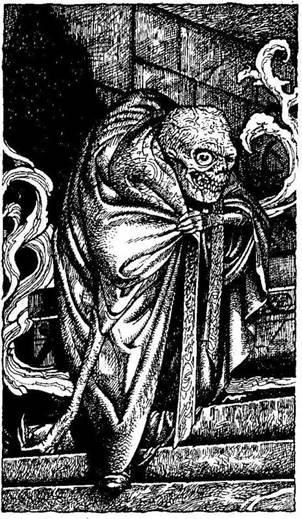
de Borrit sehol sem látjátok. Előhúzzátok kardotokat, és óvatosan közeledtek a léggömb felé, amikor Borri hirtelen kidugja fejét a kosárból, és számszeríját rátok szegezi. Nevetve mondod neki, hogy fejezze be a viccelődést, de nem tudod befejezni a mondatot. Egy nyílvessző átfúrja a torkodat, és holtan terülsz el. Ezt követően Symm és Borri élethalálharcot vív egymással, de sosem tudod meg, melyikük győzött. Sőt azt sem, hogy Borri előzőleg megőrült, mivel evett a bolondbogyóból, mely kizárólag a Bronzsíkságon terem.
326.
Nem tudtad ugyan, de a gyűrűdet díszkő ékkő a Mindentlátó Szem néven ismert. Viselője bármilyen illúzión átlát, még ha a leghatalmasabb varázslat áll is mögötte. Yaztromo teste lassan átváltozik, és csakhamar ott áll előtted Razaak valóságos formájában. Ocsmány, groteszk teste van, háta púpos, bogárszerű, mely túlméretezett fejben végződik. Egyik karja a földet súrolja, míg a másik aszott és satnya. Egyetlen szeme dülledten fordul ki az üregéből, és torz vigyor ül deformált arcának bal oldalán. Vörös erek lüktetnek kopasz fejebúbján. Még soha életedben nem éreztél ilyen undort. - Tudtam, hogy idegen vagy - vicsorog. - Érzem, hogy kardom ott van a palástod alá rejtve. De most túl nagy fába vágtad a fejszédet, te féreg! - Satnya kezével hirtelen rád mutat, és vézna ujjaiból egy tűzgolyó csap ki és egyenesen feléd süvít. Ha belélegezted az összetört gömbből kiáramló füstöt - lapozz a 351-re. Ha nem lélegezted be a varázsfüstöt - lapozz a 259-re.
327.
Lovadat észak felé irányítod, és intesz a Dombi Embereknek, akik dühösen rázzák feléd öklüket. Amikor kikerülsz íjaik hatósugarából, megint nyugat felé veszed az irányt. Lapozz a 148-ra.
328.
A páncélruha jól illik rád, és nem akadályoz a mozgásban. Nyersz 1 Ügyesség pontot! Sajnos nem veszed hasznát a páncélruhának, így visszasétálsz a lovadhoz. Lapozz a 235-re.
329.
Felemeled a csapóajtót, és kardoddal készenlétben állsz. Éktelen bömbölés remegted meg a levegőt, aztán hirtelen egy megtermett bestia ugrik be a csapóajtón át a terembe. Lángvörös szőr borítja macskaszerű testét, hosszú, éles karmai és fogai vannak. A Pokolfenevad rád néz skarlátszínű szemével, mellyel iszonyú félelmet kelt zsákmányában. Dobj egy kockával! Ha az eredmény 1-4 - lapozz a 110-re. Ha 5-öt vagy 6-ot dobsz - lapozz a 355-re.
330.
A nagy kő feléd repül, de öt méterrel előtted esik le. Hallod a Dombi Óriást, ahogy dühében bömböl, de fellovagolsz a dombra, és nemsokára magad mögött hagyod az Óriást. A nap hátralevő része nyugodtan telik el, s mivel besötétedik, azon töröd a fejed, hol táborozhatnál le. A távolban mintha tábortűz fényeit vélnéd felfedezni, de túl sötét van ahhoz, hogy lásd, ül-e mellette valaki. Ha odalovagolsz a tűzhöz - lapozz a 183-ra. Ha inkább
néhány közeli szikla között versz tábort éjszakára - lapozz a 399-re.
331.
A Hobgoblinnak épp sikerül elkapnia a bal lábadat, és veled együtt emelkedik az ég felé. Borri és Symm a kosárból kihajolva biztatnak, hogy próbáld meg lerázni a Hobgoblint. Dobj két kockával! Ha az összeg ugyanannyi vagy kevesebb, mint az Ügyességed - lapozz a 154-re. Ha az összeg nagyobb, mint az Ügyességed - lapozz a 267-re.
332.
Tedd próbára a Szerencsédet! Ha szerencséd van - lapozz a 384-re. Ha nincs szerencséd - lapozz a 85-re.
333.
Lekaparod a mohát a sírkőről, és egy olyan halott asszony sírfeliratát olvasod el, aki 69 éves korában hunyt el. A harmadik sírkövön viszont megtalálod, amit keresel. Tamal sírfeliratát, mely ősi nyelven így hangzik:
Bár itt nyugszom, még nem végeztem.
A sötét erő tovább él, a fiam a lelkem.
Tamal. Meghalt ezen a világon, 108 éves korában.
Jól megjegyzed a sírfeliratot, miközben Symm sietve levakarja a mohát a többi sírkőről is, számítva rá, hogy bármelyik pillanatban feltűnik egy szellem. De a sírkert nem rejt több titkot, és északkelet felé ellovagoltok Kőhidafalva felé. Lapozz a 234-re.
334.
Úgy döntesz, félreteszel minden elővigyázatosságot, kinyitod az ajtót, és átmész rajta. Egy pontosan ugyanolyan teremben találod magad, mint amilyenből jöttél. Az egyeden különbség, hogy az ajtó hátulján nincs semmiféle jel. Odalépsz az ajtóhoz, lenyomod a kilincset, és rájössz, hogy nincs bezárva. Megint belépsz az ajtón, és egy másik azonos szobában kötsz ki. Mivel nem sikerült használnod az időzárkulcsot, egy olyan idősíkban estél fogságba, melyből nincs menekvés. Az a sorsod, hogy az idők végezetéig sétálj ki-be az ajtón.
335.
Félórányi keresgélés után az aljnövényzetben rátalálsz a halálos fekete csúcsorra, és nemigen hiszel a szerencsédben. Gyorsan elrágcsálsz egy szárat, hogy semlegesítsd a nadragulyát, és azonmód rosszul kezded érezni magad a növény mérgétől. Vesztesz 2 Életerő pontot. Ennek ellenére, óriási megkönnyebbülésedre, kigyógyulsz a bajból. Lapozz a 36-ra.
336.
Elolvasod a pergamenen álló szavakat, de az öregembert hamarosan felbőszíti hibás kiejtésed. - Betűről betűre olvasd a szavakat - mondja élesen. Így teszel, de amikor befejezed, az öreg csak hallgat. Végül elégedetten mormog valamit, maid így szól: - Nos, eléggé hasznavehető tárgyra leltél. Ez a nyelv a hamakeia. Beszélői, ha érdekel, a legnagyobb varázserővel rendelkező korok utolsó képviselői. Egypáran közülük még mindig élnek némely elhagyatott pusztaságban. Nagyon különös
teremtmények, aszott testük, keselyűszerű fejük van, és normális életkoruknál jóval tovább élnek bizonyos misztikus varázslatok segítségével. Tudósoknak tartják magukat, és ritkán mennek bele csetepatékba, így védelmező varázslatokkal foglalkoznak. Amit a kezedben tartasz, nem más, mint egy varázsvédőfal, mely megigézett állatok, rovarok ellen használatos. Igazán nagyon hasznos dolog. Ahhoz, hogy működésbe hozd a varázslatot, csak ki kell mondanod a szót: Hamakei, és utána a pergamen alján álló számot kell kiáltanod. Nos, most már mennem kell, elköszönök tőletek, és jó szerencsét kívánok. - Figyeled az öregembert néhány percig, amint elindul, és fürgén halad előre. Aztán megfordulsz, és követed Symmet, akit mindig hajt a vágy, hogy előrébb jussatok. Lapozz a 313-ra.
337.
Amikor lovad óhatatlanul rálép az egyik gombára, egy tompa pukkanást hallasz. A levegő hirtelen megtelik gomba spórákkal, melyek csak az emberi lényekre mérgező hatásúak. Azonnal öklendezni kezdesz, és fuldokolsz. Dobj egy kockával, és vond le az eredményt az Életerő pontodból. Ha még mindig életben vagy, visszatartod a lélegzetedet, és lovadat megsarkantyúzva keresztülvágtatsz a tisztáson. Hamarosan ritkulni kezdenek a fák, és végre kijutsz az erdőből. Lapozz a 194-re.
338.
Mikor arra a helyszínre értek, ahol a legyőzött Doragarok összeestek, meglepetten tapasztalod, hogy a testek eltűntek. A vérnyomok egy masszív
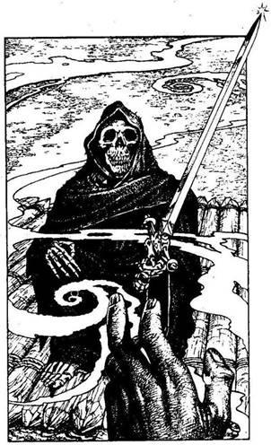
kőfalhoz vezetnek, melyben ajtószerű négyszögletes repedésvonalat fedezel fel. Megnyomod a falat, de nem mozdul. Még Symm összes szakértelmével sem képes megmozdítani a faldarabot. Füledet a falhoz tapasztod, de nem hallasz semmit. Ha tovább kísérletezel, hogy utat nyiss a falon - lapozz a 78-ra. Ha inkább az elágazáshoz mész, és a másik járattal próbálkozol - lapozz a 222-re.
339.
Idegesen lovagolsz át a dombtetőn, ahonnan aztán levezet az út a tóhoz. Halálos csend honol a völgyben, és alig töri meg egy-egy hullám a sötét, ködös víz felszínét, mely a távolba nyúlik. Gyorsan végigpillantasz a tavon, de nem látsz rajta mozgást. Majdnem egy órát vársz türelmesen, amikor észreveszed, hogy lassan a nyugati part felé sodródik valami. Megdörzsölöd a szemedet, és most már jói látod, hogy egy tutaj az, melyen egy palástba öltözött alak ül. Lovadat indulásra ösztökélve arra a helyre nyargalsz, ahová a tutaj tart. Ahogy a tutaj a part közelébe ér, lovaddal belegázolsz a hideg vízbe, és szembetalálkozol Kull megátkozott csontvázával. Kezében még mindig Razaak kardját szorongatva, ahogy már száz éve teszi, Kull csontváza mozdulatlanul üldögél tovább, ahogy közelítesz. Félelmedet legyőzve elveszed tőle a kardot. Megkönnyebbült sóhajt hallasz, és a csontváz porrá válva eltűnik a vízben a tutaj rönkjei között. Miután a rettenetes kardot az övedre csatolod, ellovagolsz nyugat felé, Yaztromo tornyához, és egyre csak az jár az eszedben, hogy most, miután Razaak kardja hozzád került, miféle szörnyűséges vég vár rád. Lapozz a 165-re.
340.
Miután leküzdötted a félelmedet, valahogy sikerül túlélned a mentális támadást. A teljes siker érdekében elüvöltöd magad, és megtámadod a Pokolfenevadat.
Pokolfenevad Ügyesség 8 Életerő 8
Ha legyőzted - lapozz a 31-re.
341.
Lassan beesteledik, te egy kényelmes székben ülve pihensz, és hallgatod Yaztromo kalandjainak történetét. Miután jól belakmározol, korán ágyba bújsz, mivel iszonyatosan fáradtnak érzed magad. Reggel eléggé frissen ébredsz, nyersz 2 Életerő pontot, és mialatt Összecsomagolod a holmidat, Yaztromo feltölti üvegfioládat Gyógyító Italával, mely öt kortyra elég. A torony csigalépcsőjén lefelé menve Yaztromo így szól: - Rosszat sejtek. Az az érzésem, hogy a jó öreg Budronnal valami szörnyűségnek kellett történnie, hisz általában megbízható. Remélem nélküle is sikerül megtalálnotok a kísértetlakta sírkertet. Utána lovagoljatok Kőhidafalvára, és keressétek meg Borrit. Ő majd segít, hogy mihamarabb célba érjetek! - Odakinn ezután felszálltok lovaitokra, és nyugat felé indultok el, végig a Fekete Erdő szélén. Vagy félórányi lovaglás után egy bőrzsákot pillantasz meg, mely kötélen csüng le egy fáról. Ha megálltok, és levágjátok a zsákot - lapozz a 207-re. Ha továbblovagoltok - lapozz a 37-re.
342.
A dió ehető, és egy kicsit csillapítja az éhségedet. Nyersz 1 Életerő pontot. Miután megetted a diót, otthagyjátok az alagutakat. Lapozz a 279-re.

343.
A kis ember abbahagyja a csonthajigálást, és megkérdi, miért vágsz át a földjén. Azt feleled, fontos küldetésben jársz, és az Elveszett Tavat keresed. - Én csak egy egyszerű ember vagyok, akit a Csontok Őrzőjeként ismernek - mondja szomorú hangon a kis ember. - Válogatok itt a csontok között, és némelyikükből mágikus gyűrűket faragok. Szükségem lenne egy új késre a munkámhoz. Szívesen adnék érte egy gyűrűt cserébe. Ha van nálad kés, melyet cserébe odaadnál egy gyűrűért - lapozz a 208-ra. Ha inkább megtámadnád a Csontok Őrzőjét - lapozz a 134-re. De búcsút is inthetsz neki, és kilovagolhatsz a Csontok Völgyéből - lapozz a 369-re.

344.
Borri és Symm segít kimászni, aztán mindhárman keresztülsétáltok a szemközti keskeny alagúton. Lapozz a 177-re.

345.
Reggelre minden elcsendesedik. Lóra pattantok, és elindultok megkeresni a sírkertet. Lapozz a 37-re.

346.
Az erős méreg gyorsan hat, de szerencsére szervezeted legyőzi ezt a kis mennyiséget. Úgy érzed, végtagjaid kissé megmerevednek, de nem bénulnak meg. Vesztesz 4 Életerő pontot. Lovadat
megsarkantyúzod, és kardoddal vagdalkozol a levegőben, hogy távol tartsd magadtól a lebegő legyeket, melyek csak arra várnak, hogy zsákmányuk elébük hulljon. Sikerül megmenekülnöd előlük, és amint biztonságban érzed magad, megiszol egy kortyot Yaztromo Gyógyító Italából, hogy legyőzd a méreg hatását. Azonnal jobban érzed magad, de nem nyersz vissza egy Életerő pontot sem. Miután túljutottál a lápon, megkönnyebbülten folytatod utad a dombok közé, a folyó mentén. Lapozz a 185-re.
347.
Borri csak nehezen tudja keresztülpréselni kövér testét a fal hasadékán, és Symm nem is állja meg tréfa nélkül. Vagy húsz méteren keresztül kell kúsznotok, másznotok, mígnem egy terembe juttok. Két fekete gyertya pislákol odabenn, és arra leszel figyelmes, hogy borzasztó hideg van. Egy szűk alagút vezet tovább a teremből, a padlón pedig egy retesszel elzárt csapóajtót veszel észre. Füledet a csapóajtóra szorítod, és valami szuszogó hangot hallasz alulról. Ha bementek a szűk alagútba - lapozz a 177-re. Ha inkább kireteszeled a csapóajtót - lapozz a 329-re.
348.
A patkány nem volt ragályhordozó, és így megúsztad a fájdalmas és korai halált. A ládához lépsz, és belenézel. Lapozz a 211-re.

349.
A karmos kéz megragadja a válladat meg a nyakadat, és szörnyű sebet ejt rajtad. Vesztesz 2 Életerő pontot. Dobj két kockával! Ha az összeg ugyanannyi vagy kisebb, mint az Ügyességed - lapozz a 88-ra. Ha az összeg nagyobb, mint az Ügyességed - lapozz a 236-ra.

350.
Félúton jársz a dombról lefelé, amikor a lovad már nehézkesen fújtat, és igen lassan poroszkál. Vesztesz 1 Szerencse pontot. Nem akarod, hogy a ló kidőljön, így hát szembefordulsz az üvöltő Goblinokkal. Egyenként küzdj meg velük.
Ügyesség Életerő
Első Goblin 5 5
Második Goblin 5 6
Harmadik Goblin 6 5
Negyedik Goblin 6 6
Ha legyőzöd őket - lapozz a 65-re.
351.
Razaak meglepetten néz rád, amint a tűzlabda irányt változtat a testeden. Elereszt egy másikat, de az is elkerül téged. Rájön, hogy képes vagy a tűznek ellenállni, és olyan szavakat kezd mormolni, melyeket nem értesz. Ujjaiból óriási, duzzadt rovarok kezdenek kiáramlani, mintha Razaak egy tömör, lüktető kúp végét fogná. Ha nálad van a Hamakei pergamen, kiáltsd annak szavait és lapozz a pergamenen lévő számra. Ha nincs nálad a pergamen - lapozz a 242-re.
352.
A Józan Ész Kristályát viseled. Ez a talizmán megvéd majd a józan eszed ellen irányuló valamennyi támadástól. A bányász figyelmeztetését megszívlelve lovadat délkelet felé fordítod, hogy elkerüld az Orkokat. Lapozz a 137-re.

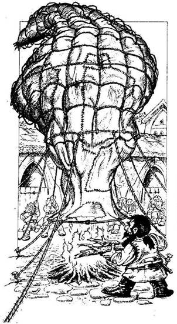
353.
Kinn az udvarban életed legfurcsább látványa tárul eléd. Borri egy óriási léggömböt tölt fel éppen a tűz bői fölszálló meleg levegővel. A Yaztromo tornyának méreteivel vetekedő gomb köteleit egy csapat Törpe fogja, hogy megakadályozzák a léggömb felszállását. - Ez az én találmányom - kiáltja Borri izgatottan, túlharsogva a tűz ropogását. - Hőlégballonnak hívják. Képes embereket szállítani nagy távolságokra az alján lógó kosárban, így a levegőben szárnyalhatsz hegyek és tavak fölött, s egyedül a széláramlatok hajtanak. Most pedig, azt hiszem, meg kell keresnünk a Gargantist. Ha be akartok szállni, felrepülünk az égbe. És persze ha van valamilyen ötletetek, merre menjünk, mondjátok meg nekem. A szél délkeleti irányba fúj, így remélem, nem akartok nyugat felé indulni! - Elámultok a csodálatos léggömb láttán, és gyorsan bemásztok a kosárba. Borri utasítja a többi Törpét, hogy eresszék el a tartóköteleket, mire a ballon simán és sebesen a magasba emelkedik. Először ideges vagy, de a szép látvány és a csend hamarosan megnyugtat, és kezded élvezni a hangtalan utazást. Lepillantasz a Fekete Erdő apró fakoronáira, és eszedbe jut az a sok veszély, mely alant leselkedik rátok. - Nos? - kérdezi Borri. - Hová akarsz menni? - Mi a válaszod?
A Pókok Erdejéhez? Lapozz a 34-re.
A Nyugati Nagy Síksághoz? Lapozz a 135-re.
A Bronzsíksághoz? Lapozz a 210-re.
354.
Meghallod egy elengedett íjhúr pendülését, ahogy a lovad nekiiramodik. Tedd próbára a Szerencsédet! Ha szerencséd van - lapozz a 109-re. Ha nincs szerencséd - lapozz a 263-ra.
355.
Bár mindkét barátod lába a földbe gyökerezett a félelemtől, valamiképp sikerül legyőznöd a rémképeket. Elordítod magad, és rátámadsz a Pokolfenevadra.
Pokolfenevad Ügyesség 8 Életerő 8
Ha legyőzted - lapozz a 288-ra.

356.
Lepillantasz a Kaméleoniták holttestére, és eszedbe jut egy legenda, melyet egyszer meséltek neked. Úgy tartják, hogy ezeknek a ritka teremtményeknek a vére az emberi lényeket egyszer az életben a teljes álcázás képességével ruházzák fel. Viszont arról is szól a fáma, hogy ilyenkor néha szörnyű mellékhatások lépnek fel. Ha rákensz némi Kaméleonita vért a testedre - lapozz a 124-re. Ha inkább megsarkantyúzod a lovadat, és továbblovagolsz kelet felé - lapozz a 180-ra.
357.
Testhőmérsékleted tovább süllyed, és hamarosan megfagysz. Tested kezd elpárologni, és fölemelkedik a földről. Két tüzesen izzó tárgyat látsz magad előtt, és feléjük repülsz. A tárgyak által kibocsátott hő megéget, és éppoly fájdalmasan üvöltesz fel, mint bármely más Jégszellem, ha élő teremtményekkel találkozik.

358.
A lány kicsavart tagokkal fekszik Griffje mellett. Halottnak látod, és azon tűnődsz, miért támadott meg. Talán a Griff éhes volt, és lóhúsra fájt a foga. A lány egy karddal és egy pajzzsal van felfegyverezve. Ha nincs kardod, elveheted a lányét. Nyersz 2 Ügyesség pontot. A pajzs kerek, és különös felirat díszíti a peremét. Ha magaddal viszed a pajzsot - lapozz a 131-re. Ha nélküle lovagolsz tovább - lapozz a 29-re.
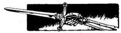
359.
Körbenézel, de nem találsz búvóhelyet. Nincs más választásod, kardot rántasz és támadsz. Hamarosan feltűnik három teremtmény, és látod, hogy embertestük van ugyan, de patkányfejük. Rövid szőr borítja a testüket, de hosszú patkányfarkuk nőtt; már a nyomotokban vannak, és készek a harcra. A legelső Patkányember megpörgeti a feje korul a parittyáját, és elrepít egy követ az alagútban. Dobj egy kockával! Ha az érték 1-3: lapozz a 133-ra. Ha az érték 4-6: lapozz a 69-re.
360.
A pálca az egyik végén üreges, és csavarmenet van benne. Rájössz, hogy kell lennie egy másik felének is, mely vagy elveszett, vagy megsemmisült. Észreveszed a 37-es számot a bot tömör végére karcolva, de nem érted a jelentősegét. Elrakod a hátizsákodba a pálcát, és azon töprengsz, vajon merre tovább. Ha még nem tetted volna meg, felpróbálhatod a sisakot - lapozz a 111-re, vagy kinyithatod a hátizsákot - lapozz a 175-re. Ha inkább visszamennél a lovadhoz - lapozz a 221-re.
361.
Tíz perc is eltelik, de semmi borzasztó nem történik veled. Tudomásul veszed, hogy immúnis vagy a Kaméleonita vérének mellékhatásaival szemben. Nyersz 2 Szerencse pontot. Vidáman kelet felé fordítod a lovad. Lapozz a 180-ra.

362.
A Gólem meginog egy pillanatra, aztán kivágott faként a földre zuhan. Feje széthasad, s a belsejében, az agyagba ragadva egy nagy, ékkővel díszített aranygyűrűre lelsz. Ha felhúzod a gyűrűt az ujjadra - lapozz a 102-re. Ha inkább otthagyod, ahol van, és a tó felé indulsz - lapozz a 339-re.
363.
Kitartóan északkelet felé lovagolsz, Kőhidafalva irányába, de nem bukkansz a sírkert nyomára. Lapozz a 142-re.
364.
- Ha igaz, amit mondasz, biztos vagyok benne, hogy az én uram hallani akar majd Lord Azzur szándékáról. De mielőtt beengednélek uramhoz, biztosnak kell lennem abban, vajon nem kinti kém vagy-e. Felteszek néhány kérdést - folytatja Ungoth. - Válaszolj helyesen, s akkor meggyőződhetem róla, igaz szolgája vagy-e Razaaknak. Azt állítod, voltál Feketehomok kikötőjében, a tolvajok tiszteletreméltó városában, hogy fegyvert vásárolj. Akkor mondd meg nekem, hány Aranytallérba kerül egy harci pöröly? Ha tudod a választ, lapozz az árának megfelelő fejezetre. Ha nem tudod - lapozz a 291-re.

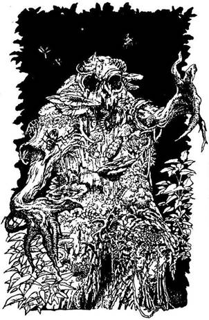
365.
Ahogy lassan keresztüllovagolsz az erdőn, észreveszed, hogy egy bokor levelei megmozdulnak, és nem tudod meggyőzni magad, hogy csupán a szél műve volt. Előhúzod a kardodat, és lovadat a bokor felé irányítod. Hirtelen egy borzalmas teremtmény ugrik eléd, és rád bámul mélyen ülő szemeivel, melyek olyan sötétek, mint maga a föld. A lénynek ugyan emberi alakja van, de a bőre sötét, kéregszerű, melyet moha és gomba borít, s jókora rovarok hemzsegnek rajta. Halott kifejezés ül gyűrött arcán. Egyszer csak az Erdei Démon kinyúl feléd, és megpróbál kirántani a nyeregből. Dobj két kockával! Ha az összeg ugyanannyi vagy kisebb, mint az Ügyességed - lapozz a 232-re. Ha az összeg nagyobb, mint az Ügyességed - lapozz a 397-re.
366.
A csontok alatt egy másik fadobozt találsz, mely sokkal nagyobb, mint amelyik a Troll ruhájában volt elrejtve. Ha ki akarod nyitni a nagy dobozt - lapozz a 104-re. Ha inkább továbbsétálsz a dobozok nélkül - lapozz a 40-re.
367.
A csörömpölés hangosan visszhangzik a barlangban, amikor a gömb nekicsapódik a falnak, és ripityára törik. A füst gyorsan elárasztja a barlangot, de nem lesz tőié nehezebb a légzésed. Ez a füst varázserejű, mely ellenállóvá tesz mindenféle tűztámadással szemben. Nyersz 1 Szerencse pontot. Most kinyithatod a ládát, ha még nem tetted volna - lapozz a 80-ra, vagy kimehetsz a barlangból - lapozz a 386-ra.
368.
Ha nem jut eszedbe, miféle teremtmény esett a pálca fogságába, képtelen vagy azt aktivizálni a Gargantis ellenében, s így megint csak a kardodra hagyatkozhatsz. Lapozz a 147-re.
369.
Magad mögött hagyva a völgyet, lovaddal felbaktatsz a következő dombra, s megállsz egy halom gránitsziklánál. A legnagyobb sziklára mintha néhány szót véstek volna, de azokat szinte teljesen benőtte a moha. Ha leszállsz, és megvizsgálod a szavakat - lapozz a 306-ra. Ha inkább folytatod a lovaglást - lapozz a 324-re.
370.
Borri és Symm segít kimászni, és akkor látod meg, hogy egy bronzmaszkot találtál. Ha viselni akarod a maszkot - lapozz a 145-re. Ha inkább otthagyod, és a szemközt lévő szűk alagúton sétálsz át - lapozz a 177-re.
371.
A köteleket húzgálva és a léggömb nehezékeket irányítva Borri ügyesen leteszi a léggömböt egy irtáson, a fák között. Kimásztok a kosárból, és átveszed a vezetést. Borri szemmel láthatólag igen szomorú, hogy búcsút kell mondania szeretett találmányának. Megmondod mindkét barátodnak, hogy kövessenek, bár fogalmad sincs, merre indulj tovább. Lapozz a 15-re.
372.
Miközben becsuknád a láda fedelét, az egyik Rad-Hulk megpróbálja megragadni a karodat. Ha az
Ügyességed 9 vagy kisebb - lapozz a 105-re. Ha az Ügyességed 10 vagy nagyobb - lapozz a 20-ra.
373.
A dobott szám azt jelenti, hogy ennyit vonhatsz le a Zombi Életerejéből. A harc előtt ennek megfelelően csökkented a Zombi Életerejét.
Zombi Ügyesség 6 Életerő 6
Ha nyersz - lapozz a 74-re.
374.
A Dombi Óriás pontosan célzott. A nagy szikla hozzád csapódik, és kidönt a nyeregből. Meghalsz, még mielőtt földet érnél.
375.
A következő tárgyakkal tehetsz próbát, ha a birtokodban vannak. Melyiket használod?
Ezüsttükröt? Lapozz a 394-re.
Ezüstpálcát? Lapozz a 128-ra.
Patkánykoponyát? Lapozz a 98-ra.
Ha ezek közül egyik tárgy sincs nálad, csak a kardodban bízhatsz. Lapozz a 147-re.

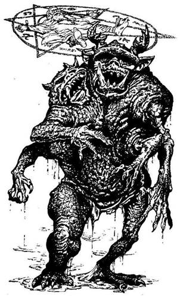
376.
Lovad csak úgy nyeli a patak vizét, és te is iszol, hisz itt a dombok között tisztának tartod a vizet. Nyersz 1 Életerő pontot. Amikor már úgy gondolod, hogy a lovad kipihente magát, visszaülsz rá, és átkelsz a patakon. Lapozz a 391-re.
377.
Nemsokára mélyen benn jártok a sűrű rengetegben, mely gonosz lakóiról híres. Minden fát jól szemügyre véve egyre beljebb hatoltok. Nemsokára egy irtás szélére értek, ahol megpillantod szegény Yaztromót, egy földbe rajzolt ötágú csillag fölé kicövekelve. Egy visszataszító szarvas bestia lépeget a csillag körül, hájas, esetien testét zöld, nyálkás bőr borítja. Képtelen vagy uralkodni magadon, és odakiáltasz Yaztromónak. Az öreg fölemeli a fejét, és így szól: - Életemben nem örültem még ennyire, hogy egy barátomat láthatom. Siess, használd Razaak kardját az ő pokolból szalajtott szolgája ellen! - Tisztában vagy azzal, hogy saját kardoddal nem tudnád megsebesíteni a teremtményt, s így előrántod Razaakét, és rátámadsz.
Démonivadék Ügyesség 6 Életerő 6
Ha legyőzöd - lapozz a 278-ra.

378.
A Symm felé kilőtt nyílvessző épp csak elkerüli őt, de te nem vagy ilyen szerencsés. A nyílvessző fájdalmasan fúródik bele a combodba, de nem akadályoz meg abban, hogy támadj. Vesztesz 2 Életerő pontot. Symm rátámad az egyik Törpére, míg te a másikra veted magad.
Törpe Ügyesség 7 Életerő 7
Ha legyőzöd - lapozz a 250-re.
379.
A Jégszellem páraszerű teste keresztülmegy rajtad, és csonttá, fagysz. Iszonyatosan reszketsz, és halálosan elsápadsz. Ha van nálad néhány csiszolt kő - lapozz a 301-re. Ha nincs nálad ilyesmi - lapozz a 357-re.
380.
A páncélruha jól illik rád, és meglepően könnyű. Nyersz 1 Ügyesség pontot. A páncél korábbi tulajdonosa azonban egy gonosz úr volt, aki miután életér kioltotta egy orgyilkos kése, megátkozta a páncélt, akárki legyen is a viselője a jövőben. Vesztesz 3 Sszerencse pontot. Semmi hasznát nem veszed a páncélruhának, így visszasétálsz a lovadhoz, Lapozz a 235-re.
381.
Visszagyalogolsz a hasadékhoz, és elindulsz lefelé a lépcsőn. A bűzös levegőtől öklendezni kezdesz, de folytatod lefelé az utat, egyenest a homályba vesző semmibe. Szemed fokozatosan hozzászokik
a félhomályhoz, orrod pedig a fertelmes bűzhöz. Amikor leérsz, észreveszed, hogy a gőz egy nagy, sűrű vörös folyadékot tartalmazó kőtálból száll fel, azt az érzést keltve, mintha olvadt fém bugyogna benne. Semmi hőt nem bocsát ki magából, csak a dögletes szagot. - Talán ez a lötty felelős a kinti növényzet pusztulásáért - suttogja Borri. - Ne öntsünk rá vizet abból a kőedényből? Ha úgy teszel, ahogy Borri ajánlja - lapozz a 186-ra. Ha inkább továbbmész, hogy megtaláld Razaak kriptáját - lapozz a 262-re.
382.
A nap gyorsan elmúlik, és hamarosan egy keskeny völgyben lovagolsz, két domb között. Ez üdvözítő változás az egyhangú dombra fel, dombról le lovagláshoz képest, habár Allansia eme zord vidékein sosincs messze a veszély. A völgy közepén, éppen az orrod előtt, egy hatalmas, ronda fickó áll, legalább hat méter magas, és piszkos állatbőröket visel. Egy rakás szikla hever a Dombi Óriás mellett, aki megfenyeget, hogy megdobál, ha nem adsz neki azonnal 5 Aranytallért az áthaladásért. Hogy döntesz?
Odaadod neki az aranyat? Lapozz a 187-re. Kardoddal megtámadod? Lapozz a 118-ra. Fellovagolsz a domboldalra, és elkerülöd az Óriást? Lapozz a 153-ra.
383.
A Jégszellem páraszerű teste keresztülmegy rajtad, és csonttá fagysz. Iszonyatosan reszketsz, és
halálosan elsápadsz. Ha ez az első alkalom, amikor megérintett egy Jégszellem - lapozz a 141-re. Ha egyszer már megérintett valamelyik - lapozz a 47-re.
384.
Egy láthatatlan verem mellett haladsz el, melyet ágakkal és levelekkel takartak el. A prémvadász készítette, aki a kunyhóban élt. Lapozz a 23-ra.
385.
Ó, jaj, egy agrai halotti maszkot húztál magadra! Agra Főpapjai készítették Dél-Allansiában ezt a szörnyű maszkot azért, hogy aratás idején szerencsétlen áldozataikra tegyék. Habár viselőjük teljesen normálisnak hat, mégis hamarosan lefekszik a földre, és tört döf a saját szívébe. A Főpapok uralkodtak a nép fölött, és elhitették velük, hogy az emberek saját jószántukból ölték meg magukat a szertartásaik során. Néhány pillanattal később lefekszel a földre, és Razaak kardját a mellkasodba szúrod. Pillanatokon belül tested porrá válik, Allansia örökre elveszett.
386.
Fürgén eloldozod a lovadat, és folytatod az utadat. Lapozz a 67-re.
387.
Nyilvánvalóan nem vagy érdemes rá, hogy mágikus tárgyakat birtokolj, ha nem tudod, mik is azok valójában. Mivel képtelen vagy a varázspálcát aktivizálni, csupán a kardodban bízhatsz. Lapozz a 147-re.
388.
Az erős méreg gyorsan hat, és érzed, amint végtagjaid megmerevednek. Vesztesz 6 Életerő és 2 Ügyesség pontot. Emberfeletti erővel sikerül lovadat mozgásra ösztökélned, és elmenekülnöd a Szigonylegyek elől. Mihelyt magad mögött tudod őket, kortyintasz egyet Yaztromo Gyógyító Italából, hogy közömbösítsd a méreg hatását. Azonnal jobban érzed magad, de nem nyersz vissza egy Életerő pontot sem. Miután túljutottál a lápon, nyugodtan folytatod utadat a folyó mentén, a dombok közé. Lapozz a 185-re.
389.
Amint megérinted az ezüstpálcát, süvíteni kezd a szél, és felkavarja a faleveleket. Meghallod egy asszony baljóslatú kacagását a szél robaján keresztül, és hirtelen egy villám csap le az égből mennydörgés kíséretében. Tedd próbára a Szerencsédet! Ha szerencséd van - lapozz a 121-re. Ha nincs szerencséd - lapozz a 170-re.
390.
A szarkofág telis-tele van arannyal, ékszerrel, meg akkora gyémántokkal, akár az öklöd. Ha elveszel a kincsből - lapozz a 149-re. Ha inkább nem nyúlsz hozzá, és amilyen gyorsan csak lehet, kimész a kriptából - lapozz a 233-ra.

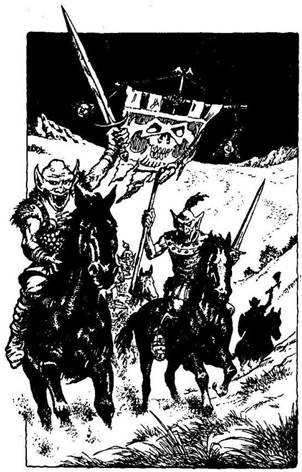
391.
Eléred a következő dombtetőt, és elnézel a távolba kelet felé. Nem látsz mást, csak a végtelenségbe vesző dombokat. Kisvártatva vágtázó paták zaját hallod meg, és éktelen harci kiáltás töri meg a csendet. Hátrapillantasz, és egy csapat Goblint látsz közeledni, akik szőrén ülik meg a lovaikat, s felfelé csörtetnek a domboldalon. Egyikük zászlót cipel, melyről zsugorított fejek fityegnek. Négy Goblin van a csapatban, és gyorsan kell döntened, mitévő légy. Ha levágtatsz a domboldalon, és támadsz - lapozz a 60-ra. Ha inkább ellovagolsz előlük - lapozz a 16-ra.
392.
Átlépsz a kövön, miközben fogalmad sincs róla, hogy kikerültél egy csapdát. Továbbgyalogolsz. Lapozz a 79-re.
393.
Hacsak nem épp a legutóbbi csapásod ölte meg a Gólemet, ebben az esetben lapozz a 362-re, kardod beleragad a nedves agyagba. Miközben megpróbálod kiráncigálni, a Gólem rettenetes kezével megragadja a nyakadat, és könnyedén megfojt.
394.
Mivel úgy véled, hogy a Gargantis ereje annak apró szemeiben rejlik, megpróbálod a tükörrel visszaverni a pillantását, hogy saját magát semmisítse meg. A tükör azonban semmilyen hatással nincs rá. Vesztesz 2 Szerencse pontot. Nincs már időd, hogy egy másik tárgyat vegyél elő, mivel a Gargantis már támad, és így ismét csak a kardod erejében bízhatsz. Lapozz a 147-re.
395.
Az egyik Rad-Hulk felkap egy követ, és utánad hajítja. Tedd próbára a Szerencsédet! Ha szerencséd van - lapozz az 57-re. Ha nincs szerencséd - lapozz a 3-ra.
396.
Vagy húsz méteren keresztül kell kúsznod, másznod, míg elérsz egy nagy üres terembe. Két fekete gyertya pislákol odabenn, és borzasztó hideg van. A teremből egy szűk alagút vezet tovább, a padlón pedig egy retesszel lezárt csapóajtót veszel észre. Füledet a csapóajtóra szorítod, és alulról szuszogó hangot hallasz. Ha kireteszeled a csapóajtót - lapozz a 228-ra. Ha inkább besétálsz a szűk alagútba - lapozz a 297-re.
397.
Az Erdei Démon indaszerű karjai köréd fonódnak és lerántanak. Eséskor elejted a kardodat. Ha van vadászkésed - lapozz a 260-ra. Ha nincs - lapozz a 27-re.

398.
Nem sokkal később sziklát csapkodó kalapács hangjára és láncok csörgésére leszel figyelmes. Ha utánajársz a dolognak - lapozz a 214-re. Ha inkább visszamész az elágazáshoz, és a másik járattal próbálkozol - lapozz a 338-ra.
399.
Néha a dolgok nem olyanok, amilyennek tűnnek. Amikor fejedet a sziklára hajtod, hogy pihenj egy keveset, az megmozdul. Egy Sziklaszörnyet zavartál meg, mely nem más, mint a Gonosz Földszellem által lakott közönséges szikladarab. A Sziklaszörny végiggördül rajtad, és kipréseli a lelkedet.
400.
Éppen eléred a hasadékból kivezető nyílást, amikor az alagút kezd beomlani. Felsietsz a lépcsőn, ahol Borri, Symm és Yaztromo üdvözöl. - Azt hittem, ti... - kezded, de összeroskadsz a kimerültségtől, mielőtt befejezhetnéd a mondatot. Amikor magadhoz térsz, egy kényelmes ágyban fekszel, és három barátod ott ül az ágy végében, egy-egy széken. - Bravó - mondja a mágus széles mosollyal. - Megcsináltad! És ahogy ígértem, nem váltál csontvázzá. De nem volt sok híja, hallod-e. Rettenetesen aggódtam, amikor összeestél a hasadék szélén. Csak nehezen tudtam Razaak kardjának hatalmát semlegesíteni, amikor kivettem azt a kezedből. Immár több tonna homok és szikla alatt fekszik a hasadék mélyén. Azt hiszem, ezzel vége! Gyere, kelj fel! Itt az idő az ünneplésre!